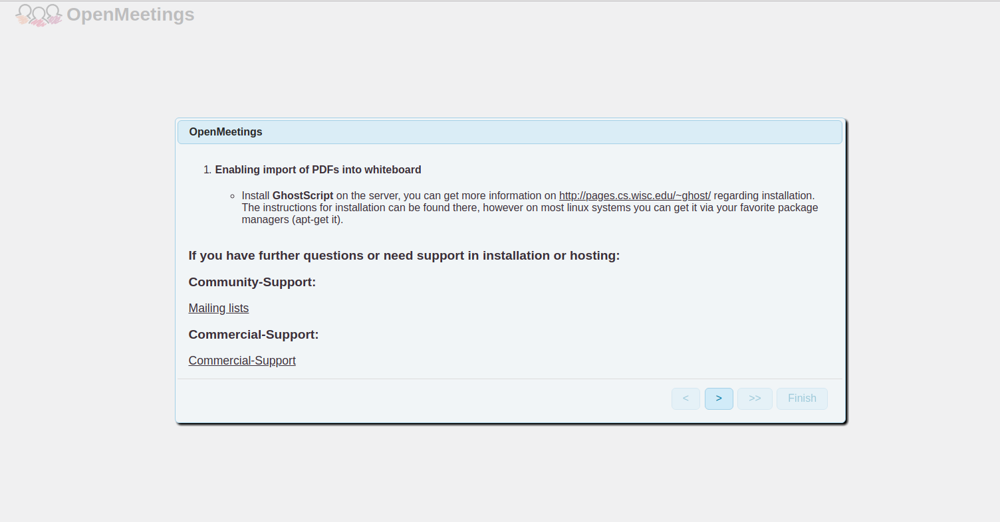
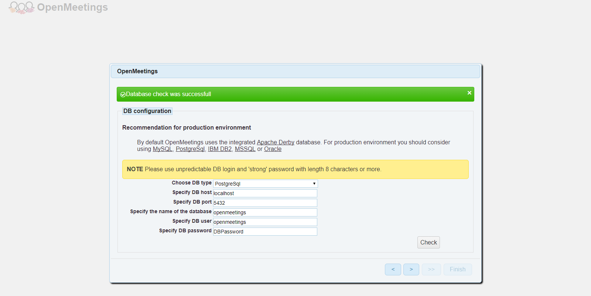
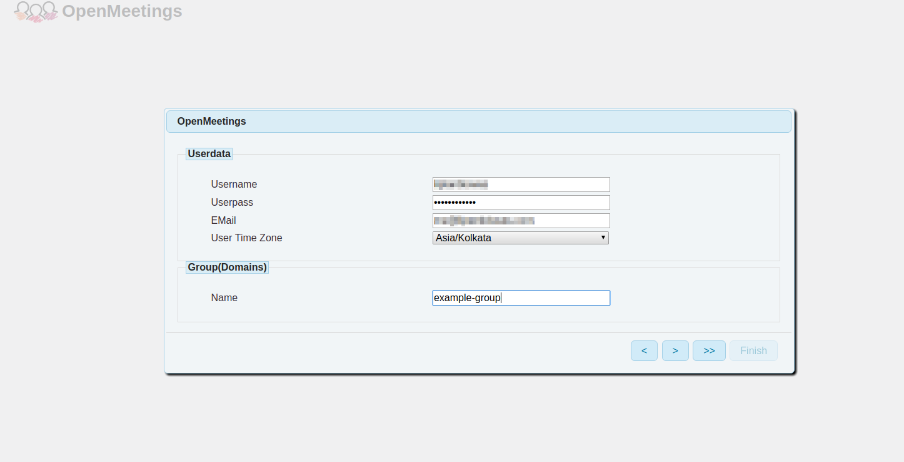
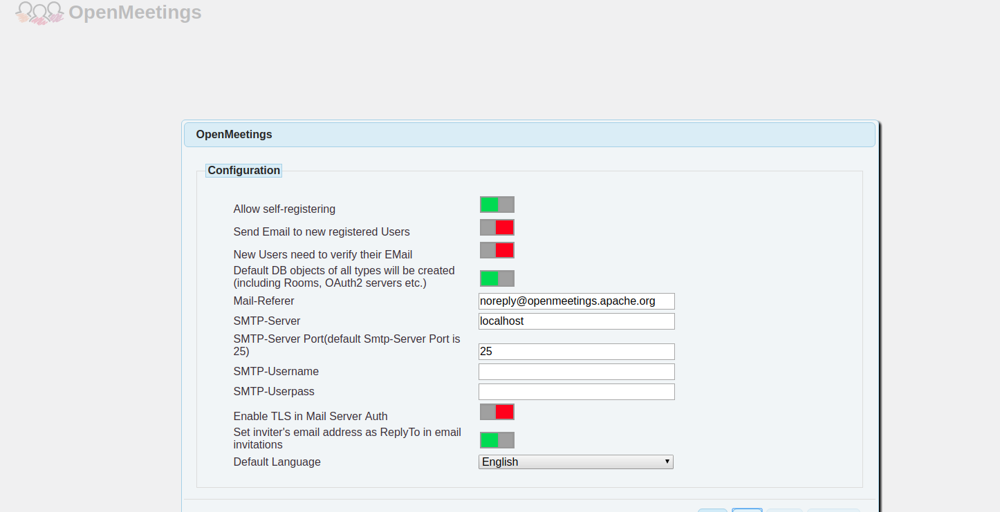
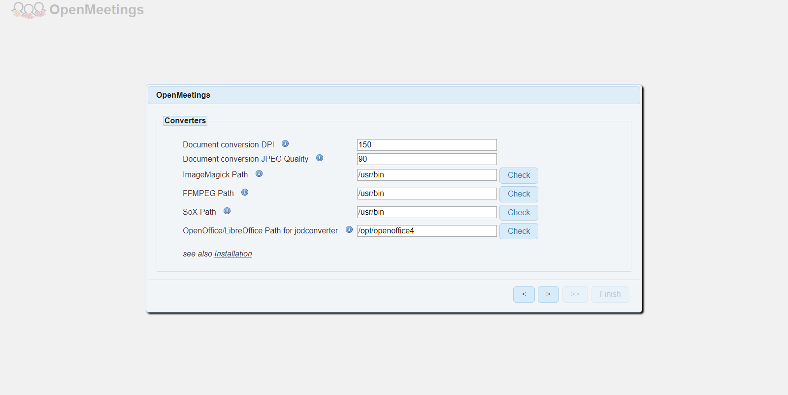
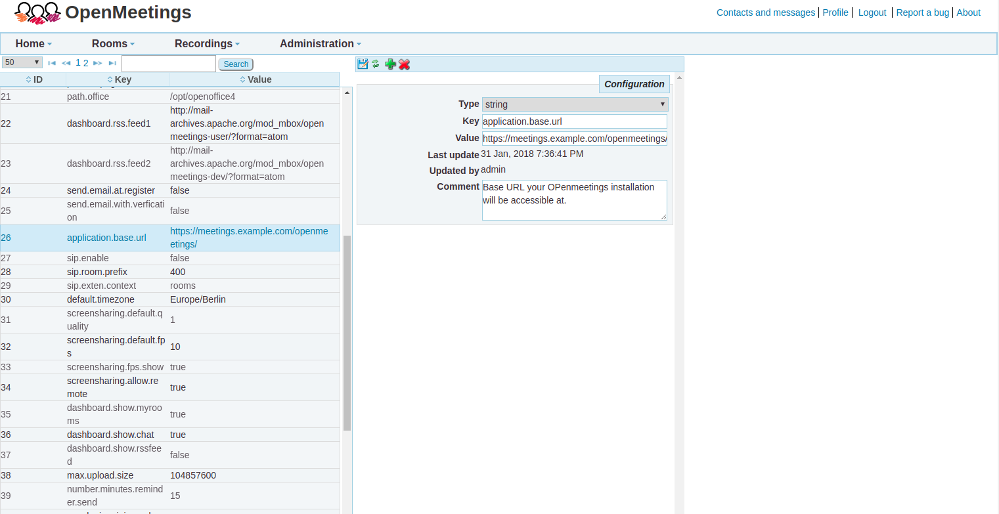

这里是自己看文档摘下的笔记。
格式：
2
3
4
>## 文章名
来源：
时间：标题加粗，前缀——
下级标题——
分割线—-
CIVICCCCC.LTD
这里是我自己写的文章目录
Debian.org
给新用户有关不破坏其Debian系统的建议
Debian是一个强大而可靠的系统，但是具有root访问权限的用户可以进行所需的任何更改。这样，新用户很容易通过不采用Debian方式来破坏系统。此页面列出了新用户常犯的错误。可以安全地完成此处列出的某些操作，但前提是您有足够的经验来知道在出现问题时如何修复系统。
此处建议的一般主题是后果并不总是立即发生的，并且如果不进行完全重新安装，可能导致将来无法进行升级。如果升级而不进行完全重新安装对您很重要，请注意不要犯以下概述的错误。
Debian的主要优势之一是其中央存储库，其中包含成千上万个软件包。如果您是从其他操作系统进入Debian的，则可能会习惯于安装在随机网站上找到的软件。在Debian上，从随机网站安装软件是一个坏习惯。如果可能的话，最好使用Debian官方仓库中的软件。已知Debian仓库中的软件包可以正常工作并正确安装。仅使用Debian存储库中的软件比从随机网站上安装软件要安全得多，因为随机网站可能捆绑了恶意软件和其他安全风险。
——不要做FrankenDebian
Debian Stable不应与其他发行版粗心地结合在一起。如果您要安装当前Debian Stable发行版中不提供的软件，则添加其他Debian发行版的存储库不是一个好主意。
首先，apt-get upgrade的默认行为是将所有已安装的软件包升级到最高可用版本。例如，如果您在buster系统上配置了bullseye档案，则APT将尝试将几乎所有软件包升级到bullseye。[注：Buster是Debian10，bullseye是Debian11]
将通过配置apt pinning为优先处理来自buster的程序包，可以减轻这种情况。（This can be mitigated by configuring apt pinning to give priority to packages from buster. ）
但是，即使从“未来”发行版安装很少的软件包也可能会有风险。这些问题可能不会立即发生，但会在下次安装更新时发生。
为某个Debian版本打包的软件与它的相同版本的其余软件兼容。所以，如果你在Debian10安装了Debian11的软件包，会导致在Debian10的系统中引入Debian11的包，包括依赖、核心库（包括新版本的libc6）。这会导致系统变成了不是testing和stable的其他不稳定发行版。（The reason things can break is because the software packaged for one Debian release is built to be compatible with the rest of the software for that release. For example, installing packages from bullseye on a buster system could also install newer versions of core libraries including libc6. This results in a system that is not testing or stable but a broken mix of the two. ）
下列如果与Debian Stable一起使用，会造成FrankenDebian情况的存储库：
- Debian测试版（目前为Bullseye）（2021-04-22）
- Debian不稳定版本（也称为sid）
- Ubuntu，Mint或其他衍生存储库与Debian不兼容！
- 已创建Ubuntu PPA和其他存储库以分发单个应用程序
一些第三方存储库可能看起来可以安全使用，因为它们仅包含Debian中没有等效软件包的软件包。但是，不能保证任何存储库将来都不会添加更多软件包，从而导致损坏。
最后，Debian官方发行版中的软件包通常经过数月的广泛测试，并且只允许发行合适的软件包。另一方面，来自外部来源的软件包可能会更改属于其他软件包的文件，以意外的方式配置系统，引入漏洞，导致许可问题。
一旦将来自非官方来源的包装引入系统中，可能很难查明破损的原因，尤其是如果破损在数月后发生的话。
——不要使用GPU制造商的安装脚本
Debian包括支持大多数显卡的免费和开源驱动程序。免费的驱动程序提供了与Debian系统其余部分的最佳集成，并且对于大多数用户来说都可以很好地工作。
如果您绝对必须拥有专有的封闭源代码驱动程序，请不要直接从制造商的网站下载它们！以这种方式安装驱动程序仅适用于当前内核，并且在下一次内核更新之后，您的显卡驱动程序将无法工作，直到再次手动将其重新安装。
幸运的是，有一种Debian方式可以使用存储库中的软件包来安装视频卡驱动程序。以Debian方式安装驱动程序将确保内核更新后驱动程序继续运行。
- AtiHowTo具有有关为ATI / AMD视频卡设置推荐的免费和开源驱动程序的说明。
- NvidiaGraphicsDrivers包含有关以Debian方式安装专有NVIDIA驱动程序的说明。
——不要盲目求新
Debian Stable之所以如此可靠的原因是，软件在包含之前已经过广泛的测试和错误修复。这意味着，稳定存储库中通常不提供软件的最新版本。但这并不意味着该软件已经过时而无法使用！
在尝试从Debian Stable仓库以外的地方安装某些软件的最新版本之前，请记住以下几点：
- Debian向后移植安全修复程序和可靠性修复程序。通过将Debian软件包的版本号与上游版本号进行比较来判断软件时并未考虑到这一点。
- 从Debian官方仓库以外的地方安装软件不受Debian的安全团队的保护。
请注意：在现有软件中发现了错误，但是只有软件的新发行版才能引入新的错误和漏洞。
随着发行版进入Debian并收到错误修正，未知的漏洞和错误的数量将在软件包生命周期内不断减少。
——“ make install”可能与其他软件包冲突
使用从软件网站下载的源代码压缩包来编译软件是很容易的，但是以后删除它并不总是那么容易。通常，源代码随附的指令包括使用诸如./configure && make && make install之类的命令的指令。
当您以这种方式安装软件时，将无法使用apt-get或Synaptic将其删除。APT打包系统只能删除APT打包系统安装的软件。更糟糕的是，以这种方式安装的软件有时可能会与为Debian打包的软件发生冲突。
以这种方式安装的软件也无法像Debian软件包那样从安全更新中受益。如果您想使系统保持最新状态，而不必为每个更新手动进行编译和重新安装，请坚持使用Debian软件包。
对于文件系统中应在何处存在已编译的二进制文件及其关联的文件，以及应在哪种权限/所有权下运行，make install脚本可能做出无效的假设。通过这种方式安装的软件还可以替换对系统和软件包维护至关重要的重要软件，从而使使用标准Debian工具修复系统变得困难。
——不要盲目听从错误的建议
不幸的是，互联网上有很多不好的建议。在博客，论坛和其他站点上找到的教程通常包含说明，这些说明会以微妙的方式破坏您的系统。不要仅仅遵循您发现的第一个建议，或者遵循似乎最简单的教程。花一些时间阅读文档并比较教程之间的区别。
最好花一些时间先找出正确的方法来完成某件事，而不是花更多的时间来修复一个已损坏的系统。你不会让一些随机的陌生人喂你的孩子。在不先了解命令功能的情况下不要执行命令。
博客和论坛帖子不会过期。几年前可能很安全的说明可能再也不安全了。如有疑问，请继续研究并阅读您版本的文档。
阅读手册，不要盲目删除软件。
——安装前请阅读软件包说明
建议在安装之前阅读软件包的描述。有时，软件在Debian存储库中会有不同的软件包，而每个软件包的配置方式也不同。阅读软件包说明并搜索类似的软件包名称，以确保获得所需的软件包名称。
这一点对于安装内核模块的软件包尤其重要。
——做笔记
忘记执行计算机操作的步骤很容易，尤其是几个月后尝试升级时。有时，当您尝试使用几种不同的方法来解决问题时，很容易忘记第二天哪种方法成功了！
记下有关已安装的软件和所做的配置更改的建议是一个很好的主意。在编辑配置文件时，在文件中包含注释以说明更改原因和更改日期也是一个很好的主意。
——一些更安全的方法来安装Debian Stable中没有的软件
有时需要安装未为Debian打包的软件，或者安装比为稳定版本打包的软件更高的版本。以下是一些降低上述风险的方法。
——Backport
软件包的较新版本通常可以在Debian Backports档案中找到。这些软件包没有像Debian稳定版本中那样经过广泛的软件包测试，因此应适度安装。
经验丰富的用户可以自己移植最新的Debian软件。自我移植通常比其他方法更安全。如果自我回传失败，则表明手动安装软件（例如使用make install或安装程序脚本）可能会损害您的Debian系统。
- SimpleBackportCreation
- 可从Debian IRC bot中获取其他说明作为类事实。
- 同样在IRC的judd机器人提供checkbackport命令提供一些指导，以向后移植是否是通过查询可能UltimateDebianDatabase。
——从源头建造
如果您从Debian以外的其他来源构建软件，则最好以普通用户的身份在该用户的主目录中构建并运行该软件。如果您将敏感，有价值或不可替换的数据保留在主目录中，则为此目的创建另一个用户帐户可能是一个好主意。
automake和其他构建系统可以在非标准位置安装自构建的软件。成为root用户或使用“ sudo”将自建软件安装到/ usr / bin或常规软件包放置文件的其他标准位置是一个不好的主意。几乎总是可以改为安装到您的主目录中。（使用./configure —prefix =〜/ .local或类似的文件。）如果您了解如何编辑Makefile，则可以更改makefile，以使make install对您的系统有用或添加前缀=〜 /.local选项。
如果要让所有用户都可以使用该软件，请不要将其自身安装到/ usr目录层次结构中，因为只有Debian软件包才可以在该目录中创建文件。将软件安装到 / usr / local将使其对所有用户可用，并且不会干扰软件包管理器。该堆装包可用于管理软件安装有用到的/ usr /本地。
——安全性较低的安装Debian Stable中没有的软件方式
请注意：Debian官方发行版中的软件包已经过广泛的测试，通常需要几个月的时间，并且发行版中仅允许合适的软件包。另一方面，来自外部来源的软件会引入安全性，可靠性和法律问题。Debian不认可从外部来源使用软件。
——使用chroot，容器和虚拟机
使用Debian稳定版中不可用的软件的另一种策略是在其目录或映像文件中包含的虚拟Debian系统中运行该软件。这样可以将软件安装在虚拟Debian系统上，而不会对运行您的计算机的主Debian系统或主机Debian系统产生任何影响。
Debian包括各种工具，这些工具可提供与主机操作系统不同程度的隔离。其中包括：
- Schroot
- LXC
- Gnome-Boxes
- libvirt和KVM
- systemd-container软件包，用于systemd-nspawn和machinectl容器命令
- Docker
- Flatpak-见下文
- Snap-见下文
——Flatpak
某些应用程序和游戏也以新的Flatpak软件包格式提供。Flatpaks可以由非root用户在本地安装，并且不会干扰Debian软件包系统。Flatpak应用程序也可以在沙箱中运行。甲flatpak包是可为Debian因为拉伸。gnome-software可以在安装了gnome-software-plugin-flatpak软件包的情况下更新和安装Flatpak应用程序。有关更多信息，请参见FlatpakHowto Wiki页面。
——Snap
另一个选择是Canonical开发的Snappy系统，该公司为Ubuntu提供支持。Snap本质上与Flatpaks相似，但是当前（2018-10-26）中央的snapcraft存储库中打包的应用程序比Flathub更多。
重要说明：许多用户对Snap保持警惕。自行决定使用。他们按照自己的时间表进行更新，并将文件安装到非标准位置。在不首先了解Snap的信誉/限制的情况下使用Snap可能不是明智的选择。
——充分利用网络支持资源
在寻求支持时，请务必记住Debian是一个志愿者项目，如果您有礼貌并且愿意为自己付出一点努力，人们会更倾向于提供帮助。以下是一些一般性准则，可帮助您获得帮助：
- 首先自己研究问题，包括阅读文档和使用搜索引擎。
- 提供详细信息并提出明智的问题：http : //www.catb.org/~esr/faqs/smart-questions.html。
- 如果您感到沮丧，即使他们似乎对您感到沮丧，也不要对试图帮助的志愿者大加赞赏。
- 别指望汤匙喂饱，如果您需要逐步指导，那就是一个信号，表明您需要自己阅读文档来学习更多。
- 如果您知道如何回答其他用户的问题，建议您做出贡献！
- 特别是在IRC上：
- 不要每隔几个字就按一次
， 这很难理解。 - 等待答复，人们常常会在有人回答问题之前就消失了。
- 使用https://paste.debian.net/而不是直接粘贴到通道中。
- 不要每隔几个字就按一次
资源：
Websites：https://wiki.debian.org/DebianResources
FAQ：https://wiki.debian.org/FAQsFromDebianUser
System-rescue.org
基本使用方法
引导系统急救
来源：https://www.system-rescue.org/manual/Booting_SystemRescueCd/
——Booting SystemRescueCd
——Boot from a removable device——从可移动设备启动
首先应当确保电脑启动类型是UEFI还是Legacy BIOS；To boot from a CD-ROM or USB device make sure that the computer firmware (BIOS or UEFI settings) is configured to boot the right device and that the priority is correct.
然后打开计算机，手动选择启动选项；To start SystemRescueCd, insert the CD or USB in the drive, and power on or reset your computer, or press a key to select an alternative boot device when it starts.
——Current boot options
下列启动选项支持System Rescue CD 6.x版本；The following boot options are supported in SystemRescueCd version 6.x (the latest version).
在syslinux敲击 TAB 按键添加额外的选项，然后在GRUB界面按 e；Press TAB to add additional options on syslinux and press “e” in grub.
- setkmap=xx 定义键盘映射，你也可以在启动后输入
setkmap查看支持的键盘映射；defines the system to configure the keyboard layout wherexxcorresponds to a keyboard map code. For examplesetkmap=dewill configure the German keyboards layout during the boot process. You can also set the keyboard layout by running a command such assetkmap defrom the shell after boot time, and you can runsetkmapwith no parameter in the terminal on a running SystemRescueCd to get a list of all supported keymaps. - copytoram 将SystemRescueCD加载到内存中启动，一旦加载到内存启动后，就可以移除可移动设备。加载的过程可能比较慢，单是加载完后运行速度将比直接在可移动设备启动时快。加载到内存启动要求至少有2G内存；causes SystemRescueCd to be fully loaded into memory. This corresponds to the
docacheoption in previous versions. A slower start but once complete, the system will be more responsive and also it will not require the original device to run. It means you can actually work on the device where SystemRescueCd is installed. This requires 2GB of memory to cache the system. - cow_spacesize=xx 设置写时复制区域大小，该区域存储在内存中的tmpfs文件系统中，通常是512M、4G或者默认25%内存大小；sets the size of the Copy-on-Write area which is stored in a tmpfs file system in memory. It accepts values such as 512M, 4G and is set to 25% of the system memory by default.
- checksum 将在引导过程中触发squashfs校验和的验证，因此您可以知道文件是否已损坏。如果在引导SystemRescueCd时遇到意外错误，则应使用此引导选项；will trigger a verification of the squashfs checksum during the boot so you know if the file has been corrupted. You should use this boot option if you get unexpected errors when booting SystemRescueCd.
- nomodeset 使系统使用较低分辨率的基本显示驱动程序运行而不是使用最佳显示设置。如果信息未在屏幕上正确显示，请使用此选项；causes the system to run with a basic display driver in lower resolution instead of using the most optimal display settings. Use this option if information is not being displayed properly on the screen.
- findroot: 使用SystemRescueCd的内核启动已经安装在本地磁盘上的Linux系统。如果您无法使用正常过程直接启动已经安装的Linux系统，这将非常有用。例如，这可能是由于引导加载程序被破坏引起的。此选项使您可以通过SystemRescueCd引导系统，以便修复引导加载程序。此选项的工作方式是在引导过程中扫描块设备，以找到安装了Linux操作系统的文件系统（即：包含名为
/sbin/init）。这包括经过加密加密的块设备，因此用户必须提供密码才能访问这些设备。然后它将显示所有块设备（SR CD认为可能是Linux根文件系统）的列表。然后，用户将需要从中选择想要启动引导的设备。SystemRescueCd版本6.1.4中已引入此选项。boot a Linux OS installed on disk using the SystemRescueCd kernel. This is very useful if you are unable to boot a Linux OS directly using the normal process. This could be caused by the boot loader being broken for example. This option allows you to boot your system via SystemRescueCd so you can fix the boot loader. This option works by scanning block devices during the boot process to find filesystems where a Linux operating system is installed (ie: filesystems which contain a file called/sbin/init). This includes block devices which are luks encrypted hence the user will have to provide the passphrase in order to access these devices. It will then show a list of all block devices which seems to be Linux root filesystems. The user will then need to choose the block device from which to boot. This option has been introduced in SystemRescueCd version 6.1.4. - break: 在挂载根文件系统之前停止引导过程。将在
initramfs打开一个shell界面，如果SystemRescueCd无法正常启动，此选项允许你在命令行界面解决问题；stop the boot process before the root filesystem gets mounted. A shell will be executed from the initramfs. This option allows to run commands manually in order to troubleshoot issues if SystemRescueCd cannot boot normally. - rootpass=password123: 将
livecd上运行的系统的root密码设置为password123。这样，您可以从网络连接并在livecd上使用ssh并使用此密码进行身份验证。出于安全原因，建议使用替代rootcryptpass选项（见下一个参数），而不是使用rootpass明文形式显示密码；Sets the root password of the system running on the livecd topassword123. That way you can connect from the network and ssh on the livecd and authenticate using this password. For security reasons it is recommended to use the alternativerootcryptpassoption instead ofrootpassso the password is not visible as clear text. - rootcryptpass=xxxx: 将在livecd上运行的系统的root密码设置为，以便可以通过ssh远程连接到系统，并使用该密码在livecd上进行身份验证。密码必须使用加密密码，例如你可以用python生成加密密码：
python3 -c 'import crypt; print(crypt.crypt("password123", crypt.mksalt(crypt.METHOD_SHA256)))'。您需要提供python命令打印的完整加密密码，包括or前缀和密码加盐。加密的密码包含美元符号，因此您应该检查引导加载程序是否需要转义字符以保留这些特殊字符。/proc/cmdline如有疑问，应检查是否 包含您传递的值；Sets the root password of the system running on the livecd to so can can connect to the system remotely via ssh and use the password to authenticate on the livecd. The password must be encrypted using a command line such as the following one:python3 -c 'import crypt; print(crypt.crypt("password123", crypt.mksalt(crypt.METHOD_SHA256)))'You need to provide the whole encrypted password as printed by the python command including the or prefix and the salt. The encrypted password contains dollars so you should check if your boot loader needs escaping characters to preserve these special characters. You should check that/proc/cmdlinecontains the value that you passed if you have doubts. - nofirewall 停止默认启用的iptables和ip6table服务，以阻止传入的连接请求。如果需要从外部建立到运行SystemRescueCd的系统的连接（例如，与sshd的连接），则需要使用此选项。此选项在SystemRescueCd-6.0.4中引入；stop the iptables and ip6table services which are enabled by default in order to block incoming connection requests. You need to use this option if you need to establish connections to the system running SystemRescueCd from outside (for example connections to sshd). This option was introduced in SystemRescueCd-6.0.4.
- rootshell=/bin/myshell 使用其他
shell，例如/ bin / zsh代替/ bin / bash。此选项是在SystemRescueCd-6.1.1中引入的；use an alternative shell such as /bin/zsh instead of /bin/bash. This option was introduced in SystemRescueCd-6.1.1. - archisolabel=xxxx 设置SystemRescueCd文件所在的文件系统标签。换句话说，系统将尝试在具有指定标签的文件系统上查找SystemRescueCd文件，因此，这对找到SystemRescueCd文件位于哪个设备上很重要。由于版本7.00（以前是
SYSRCDXYZ版本6.x）的默认设置为RESCUEXYZ，其中XYZ是SystemRescueCd版本号（例如：标签RESCUE701用于version7.01；Set the filesystem label where SystemRescueCd files reside. In other words the system will try to find SystemRescueCd files on a filesystem having the label specified so it is important for it to locate on which device SystemRescueCd files are located. This is set toRESCUEXYZby default since version 7.00 (it used to beSYSRCDXYZwith versions 6.x) where XYZ corresponds to the SystemRescueCd version (eg: the label isRESCUE701for version7.01) - archisobasedir=xxxx 设置所有SystemRescueCd文件所在的基本目录，默认情况下设置为
sysresccd。换句话说，系统将尝试sysresccd在文件系统根目录中名为的目录中查找SystemRescueCd文件 ；Set the base directory where all SystemRescueCd files reside and it is set tosysresccdby default. In other words the system will try to find SystemRescueCd files in a directory namedsysresccdwhich is located at the root of the filesystem. - cow_label=xxxx 设置用于存储
overlayfs的upperdir / workdir文件的文件系统标签。默认情况下，未设置此选项，并且在重新启动后，对SystemRescueCd文件所做的更改将丢失。换句话说，您可以使用Linux文件系统来保留SystemRescueCd在运行时所做的所有修改，例如Firefox中的新书签，应用程序配置文件等。您必须提供用于存储这些更改的文件系统的标签。所有这些更改都将隔离在以persistent前缀的目录中， 除非您使用cow_directory；Set the filesystem label where upperdir/workdir files for overlayfs must be stored. By default this option is not set and changes made on SystemRescueCd files are lost after a reboot. In other words you can use a Linux filesystem to persist all modifications made on SystemRescueCd when it runs such as new bookmarks in Firefox, application configuration files, etc. You have to provide the label of the filesystem that needs to be used to store these changes. All these changes will be isolated in a directory prefixed bypersistentunless you override this usingcow_directory - cow_directory=xxxx 用于存储在系统上所做的更改的目录的名称。您必须指定一个母设备，此更改才能生效；Name of the directory where to store changes made on the system. You must have specified a cow device for this change to take effect.
- img_label=xxxx 设置SystemRescueCd ISO映像所在的文件系统标签。仅在GRUB2的环回选项引导SystemRescueCd时使用；Set the filesystem label where SystemRescueCd ISO image is located. This is only used when booting SystemRescueCd using the loopback option from Grub2.
- img_loop=xxxx 设置文件系统中SystemRescueCd ISO映像的路径，以便引导过程可以挂载它并找到squashfs文件系统。仅在GRUB2的环回选项引导SystemRescueCd时使用；Set the path to the SystemRescueCd ISO image within the filesystem so the boot process can mount it and find the squashfs filesystem. This is only used when booting SystemRescueCd using the loopback option from Grub2.
- loadsrm=y 加载引导设备上的所有SRM模块；Load all SRM modules located on the boot device
请阅读archiso文档 以获取更多高级引导选项，尤其是PXE引导。Please read the archiso documentation for more advanced boot options and PXE boot in particular.
——Options provided for autorun——用于自动运行的选项
- ar_source=xxx: 自动运行的存储位置。它可以是分区（
/dev/sda1）的根目录，nfs共享（nfs://192.168.1.1:/path/to/scripts），samba共享（smb://192.168.1.1/path/to/scripts）或http目录（http://192.168.1.1/path/to/scripts）；place where the autorun are stored. It may be the root directory of a partition (/dev/sda1), an nfs share (nfs://192.168.1.1:/path/to/scripts), a samba share (smb://192.168.1.1/path/to/scripts), or an http directory (http://192.168.1.1/path/to/scripts). - autoruns=[0-9]: 要运行的自动运行脚本的逗号分隔列表。例如
autoruns=0,2,7自动运行的脚本autorun0，autorun2，autorun7中运行。使用autoruns=no了一些禁用所有自动运行的脚本；comma separated list of the autorun scripts to be run. For exampleautoruns=0,2,7the autorun scriptsautorun0,autorun2,autorun7are run. Useautoruns=noto disable all the autorun scripts with a number. - ar_ignorefail: 即使脚本失败（返回非零状态），也继续执行脚本链；continue to execute the scripts chain even if a script failed (returned a non-zero status)
- ar_nodel: 执行脚本后不删除位于自动运行脚本的临时副本
/var/autorun/tmp；do not delete the temporary copy of the autorun scripts located in/var/autorun/tmpafter execution - ar_disable: 完全禁用自动运行，简单
autorun脚本将不会执行；completely disable autorun, the simpleautorunscript will not be executed - ar_nowait: 执行自动运行脚本后，请勿等待按键继续；do not wait for a keypress after the autorun script have been executed.
有关更多详细信息，请阅读有关自动运行的页面。For more details, please read the page about autorun
——Booting from the network via PXE——通过PXE从网络引导启动
也可以从网络启动SystemRescueCd。由于这个过程并不简单，因此有专门的页面介绍 PXE网络启动。It is also possible to boot SystemRescueCd from the network. Since the installation is not simple, there is a dedicated page to PXE network booting
将System Rescue安装在系统盘
来源：https://www.system-rescue.org/manual/Installing_SystemRescue_on_the_disk/
Installing SystemRescue on the disk
——Installing SystemRescue on the disk
——概览
本文讲解了如何将SR安装在硬盘上，而不需要使用可移动设备的方法。注意，这个操作仅在6.0.0版本以上有效。
——解析
通过将SR介质中的文件拷贝到本地文件系统中完成安装。这个过程不需要进行磁盘分区。使用GRUB4DOS可以在Windows的NTFS磁盘上引导SR启动。您只需将SystemRescue光盘上的文件安装到本地磁盘上的现有分区，该分区可以是Linux分区（ext4、xfs等）或Windows分区（NTFS）。这样，您就可以从Windows分区启动SystemRescue，使用copytoram选项，您甚至可以使用它来解决Windows本身的问题，或者使用ntfs-3g来处理安装它的文件系统。
这个安装过程通常有两个步骤：首先，您必须将主SystemRescue文件复制到磁盘分区上。然后，您必须配置引导加载程序。安装过程需要一个具有足够空间的分区来复制SystemRescue文件。如果要在Linux分区上安装SystemRescue文件，则必须有一个正常工作的Grub2引导加载程序。
——使用GRUB2的isoloop引导
Grub2提供了一个从存储在本地磁盘上的ISO映像启动的特功能。如果将systemrescue-x.y.z.iso的副本放在Grub2可以读取的文件系统上，那么可以直接从磁盘上存储的iso映像启动systemrescue。如果您经常更新SystemRescue并且希望直接从Grub2启动它，那么这非常方便。
第一步是将最新的SystemRescue ISO映像复制到磁盘上，位置可以从Grub访问。建议的位置是/boot，因为它通常不加密，因此可以从Grub访问。建议从ISO映像中删除版本号，这样就不必在每次下载新版本的ISO映像时更新Grub配置。
cp ~/Download/systemrescue-x.y.z.iso /boot/systemrescue.iso
Grub2知道什么是ISO映像，它会将ISO中的vmlinuz内核映像文件和 sysresccd.imginitramfs加载到内存。随后它将按平时正常启动一样执行他的正常工作流程并执行内核。注意，必须在引导命令行上将其他参数传递给SystemRescue，以便启动脚本可以找到文件。
Grub配置中包含各种指令，这也是为什么Grub可以找到ISO映像、内核映像和initramfs。它还包含传递给操作系统的参数，以便可以在磁盘上找到ISO映像以及ISO映像中的重要文件。理解ISO映像的路径可能与Linux系统上的路径不同是很重要的，特别是当你的/boot目录与根文件系统是分开的，并且从单独的文件系统上挂载。
这是一个Grub2配置的一部分，这里咱们假定包含systemrescue.iso的文件系统（分区）被标记为boot。此配置通常存储在/etc/grub.d/25_sysresccd之类的文件中，并且它必须是可执行的，这样grub-mkconfig命令才可以使用它。
您应该保持选项archisobasedir = sysresccd不变，因为它指向ISO映像中文件的路径。另外，您应保持内部路径/sysresccd/boot/${arch}/不变。建议不要使用copytoram选项。然后，您应该更新setkmap选项，使其与你的键盘布局匹配。以下示例对应于推荐的64位体系结构（amd64 / x86_64）。如果使用32位版本，则需要用i686替换所有的x86_64：
1 |
|
GRUB2启动过程发生了什么？
- Grub2首先会寻找
boot标记的分区，并当作根目录看待。 - Grub2开始在第一步中的文件系统中寻找
/systemrescue.iso。 - Grub2 从ISO文件中加载
vmlinuz和sysresccd.img。 - Grub2 执行内核映像并通过其配置传递引导参数。
- 引导过程将使用
img_label查找包含ISO映像的文件系统。 - 引导过程将使用选项
img_loop在文件系统中查找ISO映像 - 该引导脚本会挂载ISO映像并从squashfs文件系统映像
airootfs.sfs引导。
创建配置文件后，通常必须运行诸如grub-mkconfig -o /boot/grub/grub.cfg之类的命令来生成最终的grub配置。重新启动之前，请确保最终的grub配置包含SystemRescue的预期部分。
——从ISO图像中提取内容的替代方法
这种方法在具有Grub引导加载程序的Linux上有效，并且在具有Grub4dos的Windows上也适用。
它包括将SystemRescue主要文件复制到磁盘上的文件系统，并配置Grub或Grub4dos，以便可以对其进行引导。
将文件从ISO映像复制到磁盘
首先，挂载ISO文件，比如：
mount -o loop systemrescuecd-x.y.z.iso /mnt/cdrom。或者Windows的Daemon-Tools、UltraISO。然后将整个
/sysresccd/文件夹复制到安装文件夹的根目录。如果你有当独的boot分区，你应该将文件复制到/boot/sysresccd。注意保持原有的文件目录结构。第二步：
Linux：
首先，得在启动管理器配置（比如
/etc/grub.d/）中下点功夫。比如创建一个配置文件：/etc/grub.d/25_sysresccd，以便其配置位于默认操作系统配置之后。搜索指令非常重要，因为它为grub提供了一种定位包含SystemRescue文件的文件系统的方法。下面的示例将采用卷标识别（boot），如果你更喜欢通过UUID识别，请自行更改。一旦GRUB识别出某一设备，GRUB将会将它作为根目录。如果
boot分区在单独的文件系统上，则grub认为根文件系统，而Linux认为是引导文件系统，从而造成混淆。 所以Paths to SystemRescue files指的是以这个文件系统的根目录为准的路径，这可能与Linux路径不同。archisolabel=boot选项表示SystemRescue将尝试在标记为grub的文件系统上查找其文件。然后，archisobasedir=sysresccd选项指示SystemRescue需要在此文件系统上的/sysresccd中搜索其文件。建议使用copytoram选项，以便在引导过程完成后可以卸载引导文件系统，这使您可以在安装SystemRescueCd的磁盘上执行更改。1
2
3
4
5
6
7
8
9
10
11
12
13
14
15
exec tail -n +3 $0
menuentry 'SystemRescue' {
load_video
insmod gzio
insmod part_gpt
insmod part_msdos
insmod ext2
search --no-floppy --label boot --set=root
echo 'Loading Linux kernel ...'
linux /sysresccd/vmlinuz archisobasedir=sysresccd archisolabel=boot copytoram setkmap=us
echo 'Loading initramfs ...'
initrd /sysresccd/sysresccd.img
}创建配置文件后，通常必须运行诸如
grub-mkconfig -o /boot/grub/grub.cfg之类的命令来生成最终的grub配置。重新启动之前，请确保最终的grub配置包含SystemRescue的预期部分。Windows：
更新grub4dos：现在，您必须使用grub4dos（这是Windows的grub端口）更新bootmanager。本节介绍了如果在运行Windows的NTFS分区上安装了SystemRescue文件，则如何安装grub4dos引导管理器。如果您使用的是Linux分区，请改为阅读上一节。
使用sys_rescue_cd ntfs安装时最有趣的就是可以在Windows出现问题时对Windows进行故障排除。您可以使用ntfs-3g挂载Windows分区并修复Windows（替换注册表的备份，…）。唯一可能出行的问题是您无法使用ntfs-3g挂载可读写的Windows磁盘，那可能因为它已在引导过程中以只读方式挂载。解决的方法是在引导时使用
copytoram选项。启用此选项后，sysresccd将在引导过程中将其自己的文件（在ntfs磁盘上找到）缓存到内存中，并卸载ntfs磁盘。因此，它允许您再次使用ntfs-3g挂载它。因此，您必须添加copytoram到menu.lst如果您要在ntfs磁盘启动后，能够使用ntfs-3g挂载Windows磁盘，请使用启动选项。安装过程很简单。在此教程中，我假定Windows安装在NTFS磁盘（C盘）上，并且您已将SystemRescue主文件复制到
C:\sysresccd。您必须下载grub4dos，将zip文件解压缩到一个临时目录中，然后将grldr复制到C:\。我们仅对grub4dos-0.4.3-2007-08-27.zip随附的grldr文件进行了安装测试，但该文件应该可用于任何最近版本。您需要将
grldr.mbr与grldr一起（压缩包里的一部分）复制到Windows启动分区的根目录。然后，您需要在命令提示符下键入几个命令（使用管理员用户帐户运行cmd.exe）。在命令提示符窗口中（C：>是cmd提示符的虚拟替代），请执行以下操作：C:> bcdedit /create /d "SystemRescue [GRUB4DOS]" /application bootsector您将获得启动项的返回值{id} - 在以下步骤中使用它（复制/粘贴或键入）
1
2
3C:> bcdedit /set {id} device boot
C:> bcdedit /set {id} path \grldr.mbr
C:> bcdedit /displayorder {id} /addlast您必须创建一个
C:\menu.lst，它是grub4dos配置文件。这是一个例子。它对应于64位体系结构（amd64 / x86_64）。如果使用32位版本，则需要将所有x86_64实例替换为i686：1
2
3
4
5# This is a sample menu.lst file for SystemRescue
title SystemRescue from the NTFS disk
root (hd0,0)
kernel /sysresccd/boot/x86_64/vmlinuz archisobasedir=sysresccd archisolabel=windows copytoram setkmap=us
initrd /sysresccd/boot/x86_64/sysresccd.img在
menu.lst中，您将必须更新archisolabel标签，使其与包含sysresccd的NTFS文件系统的标签相匹配，并且还应更新setkmap参数，以使代码与您的键盘配置相匹配。在此的示例文件位于第一个硬盘的第一个分区的NTFS分区上。然后，grub设备名称为(hd0,0)。对于第二个硬盘的第一个分区，它应该是(hd1,0)，对于第一个硬盘的第二个分区它将是(hd0,1)…您必须用grub名称替换根(hd0,0)NTFS分区。
GPT分区模式
来源：https://www.system-rescue.org/disk-partitioning/The-new-GPT-disk-layout/
——The new GPT disk layout
——关于分区表
硬盘驱动器可以包含多个分区，这有助于组织数据并在同一磁盘上安装多个操作系统。分区表的布局有多种标准：大多数计算机上使用的标准布局是MSDOS分区表，新的替代布局称为GPT（GUID分区表）。 PC上标准布局的问题在于它有很多限制：每个磁盘最多只能支持4个主分区，并且不允许我们寻址超过2 TB的字节。本节将告知您有关GPT的所有信息：是否应使用GPT，以及如何使用。
开始使用
来源：https://www.system-rescue.org/manual/Starting_to_use_the_system/
Starting to use the system
——Starting to use the system
开始时，您应该阅读消息，该消息为您提供有关如何使用此系统的最重要信息。您应该阅读文字。
您可以在另一个控制台上登录。root密码为空。键入 dhcpcd eth0 （或类似名称）以使用DHCP自动配置网络。
要在此系统上启动ssh服务器，请键入systemctl start sshd 。如果需要以root身份远程登录，请键入passwd root将root用户的密码重置为已知值。
如果需要图形工具（例如GParted），则必须转到图形环境。您应该只键入startx来启动它。
您可能需要使用编辑器。可用的编辑器：vim，控制台模式下的nano。您还可以在图形环境中使用featherpad和geany。
注意：切勿在/mnt上挂载任何东西！它将冻结系统。使用mkdir /mnt/mydir并挂载在/mnt/mydir上。
网络配置与应用程序
来源：https://www.system-rescue.org/manual/Network_configuration_and_programs/
Network configuration and programs
——Network configuration and programs
SystemRescueCd，您将能够使用网络。下面是有关网络的最重要信息:
——网络配置工具
如果您的系统有被支持硬件，则开机时会自动检测到以太网或无线网络适配器，并加载驱动程序。该接口需要分配一个IP地址和一个默认网关。
SystemRescueCd使用Network-Manager作为默认网络配置工具。它提供了非常用户友好的图形界面来配置网络。它使配置更容易，尤其是对于无线网络。例如，无线网络将被自动检测到，并且连接非常简单。网络管理器在时钟旁边的任务栏中以小图标显示。如果要使用命令行或终端的半图形界面来配置网络，它还提供nmcli和nmtui。
您还可以使用其他工具（例如标准ifconfig或ip命令）配置网络。在这种情况下，您必须先停止Network-Manager服务，否则它将发生冲突，并且您将丢失设置。您可以通过在shell中运行systemctl stop NetworkManager来停止它。
本章的以下各节说明如何使用Linux命令使用网络。如果您更喜欢使用Network-Manager，则不必阅读它。
——防火墙
从6.0.4版本开始，SystemRescueCd附带启用了iptables防火墙，默认情况下它会阻止传入的连接请求。如果需要能够接收来自外部的传入连接，则需要更新iptables配置或停止iptables和ip6tables服务。如果需要自动停止防火墙，则可以使用命令行上的nofirewall选项引导。
——手动配置网络
要使用动态配置，请使用dhclient eth0。使用ifconfig -a显示DHCP服务器租借到接口的IP地址。
要分配特定的静态IP地址，请输入以下内容：ifconfig eth0 192.168.10.17。接下来，配置默认路由。例如，对于地址为192.168.10.17的接口连接到192.168.10.2的网关，请输入：route add default gw 192.168.10.2。
SystemRescueCd提供了诸如ethx，dns，getaway，dodhcp之类的网络引导选项，这些选项使您可以在SystemRescueCd启动时自动配置网络。如果要使用PXE从网络引导SystemRescueCd将非常有用，同时也可以在其他情况下使用它。如果您计划制作自定义版本的救援系统也将非常有用。
阅读有关Linux上的基本IP配置工具的章节，以获取有关如何在运行Linux的计算机上从命令行配置TCP / IP的详细信息。
——开启SSH服务
SSH允许您使用另一台计算机上的SHELL（就像telnet一样），并且可以复制文件（通过ssh使用scp或rsync）。如果要运行SSH服务器，则必须更改root密码。只需键入passwd并提供一个有效的密码即可。您还可以在SystemRescueCd开始定义根密码之前使用rootpass = xxx引导选项。
Ssh服务器将自动启动，但是您仍然可以键入以下命令：systemctl restart sshd。您可以使用systemctl stop sshd停止它。当然，您也可以将SystemRescueCd用作SSH客户端以连接到SSH服务器：只需使用ssh login@ssh.server.org或scp source dest。source和dest都可以是本地或远程的地址。远程文件则是login@ssh.server.org:/path/filename。
——使用CIFS访问Windows计算机上的共享文件夹
SystemRescueCd带有smbfs/cifs客户端软件包，该软件包可让您连接到具有共享驱动器的Windows计算机。在最新的内核中，对smbfs的支持已被cifs取代，因此您应尽量不要使用smbfs。
mount-cifs软件包使您可以访问网络上的Windows计算机。这是一个示例，说明如何访问Windows共享文件夹。让我们假设一下Windows共享文件夹位于192.168.10.3上，并具有一个名为mydata的共享目录，该目录可被名为robert的用户访问：
mkdir /mnt/windows
mount -t cifs //192.168.10.3/mydata /mnt/windows -o username=robert,password=passwd
cd /mnt/windows
现在您应该可以在/mnt/windows中看到文件了。完成共享目录中的操作后，请不要忘记卸载目录。 umount /mnt/windows
——将远程FTP / SSH共享目录挂载为本地文件系统
如果要访问位于FTP服务器上的文件，则有一种非常强大的新方法来执行此操作。 “Userland文件系统” 使您可以挂载共享，并像处理任何本地文件一样处理远程文件。对于所有这些文件系统，您可以使用标准umount命令来卸载共享。这是一个示例，显示了如何以匿名方式在/mnt/ftp中挂载FTP文件系统（只读）
1 | mkdir /mnt/ftp |
这是如何在/mnt/ssh中以匿名方式挂载SSH文件系统的示例（只读）
1 | mkdir /mnt/ssh |
挂载NTFS磁盘
来源：https://www.system-rescue.org/manual/Mounting_ntfs_filesystems/
Mounting NTFS file systems
——介绍
NTFS（New Technology File System）是最新Windows版本上使用的默认文件系统，并且Windows系统磁盘基于NTFS格式。
Linux长期以来一直提供对NTFS文件系统的完全读取支持。但是，内核随附的NTFS写支持仍然缺失。如果要完全支持NTFS磁盘，则必须使用ntfs-3g（Ntfs第三代驱动程序），它是一个用户空间程序（a userspace program）。
——只读挂载
如果只希望对NTFS磁盘具有读支持，则只需使用以下命令将其安装（请用你的磁盘设备名称替换xxx）：
1 | mkdir -p /mnt/windows |
此只读支持是安全的（您不能更改或破坏数据），例如，如果您只想备份多个文件或阅读文档，则可以使用该只读支持。
——全面的读写挂载
如果需要完整的NTFS 读写支持，则必须改用ntfs-3g：
1 | mkdir -p /mnt/windows |
在此示例中，我们假设NTFS分区的设备名称为/dev/sda1 ，安装点为/mnt/windows。如果您不知道设备名称，则应使用lsblk和blkid或GParted标识磁盘。
在串行控制台上启动
来源：https://www.system-rescue.org/manual/Booting_on_a_serial_console/
时间：2023.06.15
——Booting on a serial console
——Serial console
串行控制台代替具有 VGA 或 HDMI/DP 输出的常规图形卡在嵌入式系统中很常见，但也用于服务器上的远程管理。
要使串行控制台正常工作，您需要知道使用的波特率和参数以及使用的内部端口号。SystemRescue 默认使用最常见的设置，即波特率为 115200、8 位、无奇偶校验、1 停止位的第一个串行端口（ ttyS0或 COM1:）。
——Bootmanager
使用的两个引导管理器（syslinux 和 grub）都允许使用串行控制台与常规图形控制台完全并行，而无需优先于另一个。因此，串行控制台始终使用配置文件中设置的参数激活（见下文）。
——Booting a kernel
Linux 内核还允许并行使用多个控制台，它们都配置有console=引导命令行选项。但与引导管理器相比，它们具有优先级，只有最高优先级的管理器才能接收引导消息并在 initramfs 阶段可用。
所以串行控制台不能总是并行激活，而是有一个专用的启动菜单选项。
——Changing parameters
当 SystemRescue 的默认参数不适合您的系统时，您必须在启动前在配置文件中调整它们。您必须在 SystemRescue 的 iso-Image 上调整这些文件：/boot/grub/grubsrcd.cfg
1 | # enable serial console with common settings (ttyS0, 115200 Baud, 8n1) |
要更改这些文件，请使用sysrescue-customize更改 iso 映像或自动执行这些更改，或者以创建可写映像的方式将 SystemRescue写入 USB 媒体，如 Rufus 或 sysrescue-usbwriter，然后使用文本编辑器进行更改.
在U盘上安装 SystemRescue
来源：https://www.system-rescue.org/Installing-SystemRescue-on-a-USB-memory-stick/
时间：2023.06.15
——Installing SystemRescue on a USB memory stick
本页介绍如何在 U 盘上安装 SystemRescue。上的所有数据 记忆棒将被删除，因此请确保它不包含任何重要数据。
您需要一个最新的 SystemRescue，以及一个具有足够容量的 USB 记忆棒。 你 应使用 2GB 记忆棒或更大的记忆棒。 你必须得到你的 固件 (BIOS/UEFI) 在尝试从 USB 设备启动之前从 USB 设备启动 本地磁盘。 这可以在固件设置中或通过 在启动时按下一个键。
此页面描述了可用于安装 .iso 文件的多种方法 您 下载 到这样的 USB 记忆棒上并使其可启动。
——在 Windows 上:
——Rufus：Windows 上推荐的 USB 安装方法:
如果您的计算机上运行的是 Windows，推荐的安装程序 是 Rufus ，因为它易于使用并创建可写文件系统。
- 下载 Rufus 并将其安装在 Windows 上
- 插入您的 USB 记忆棒 并等待几秒钟，以便系统有足够的时间检测到它
- 执行 Rufus 并在下拉列表中选择 U 盘
- SystemRescue ISO 映像 选择您下载的
- 选择“MBR”分区方案 ，因为它将与 BIOS 和 UEFI 兼容
- 在目标中选择“BIOS 或 UEFI” 以获得最佳兼容性
- 检查“卷标”是否正确， 因为它必须设置为 拯救EXYZ （参见下文）
- 选择 FAT32 文件系统 ，因为 UEFI 引导过程仅适用于 FAT 文件系统
- 点击开始按钮 ，等待操作完成
- 出现提示时选择“ISO 模式”， 以便获得可写文件系统
在前面的步骤中 RESCUEXYZ指的是版本号，例如： RESCUE906适用于 SystemRescue-9.06。 Rufus 应该自动使用设置的标签 在 ISO 文件系统上，因此它应该在 USB 设备。 你不应该改变它，但你应该确保标签 是正确的，因为这是设备正常启动所必需的。 重要的是 标签与传递给 archisolabel中的引导选项 设备上的引导加载程序配置文件（ grubsrcd.cfg和 sysresccd_sys.cfg) 因此可以在系统启动时找到文件 USB 设备。
一个带有 可写文件系统的 以这种方式使用 rufus 时，会创建 USB 记忆棒。 这允许 您可以轻松地将自动运行脚本或 YAML 配置文件复制到 USB 记忆棒上 一个普通的文件管理器。
——Fedora 媒体编写器
Fedora Media Writer 是一个替代品 安装程序，如果 Rufus 由于某种原因无法工作，你可以使用它。Fedora Media Writer 只创建一个 只读文件系统 。这不允许你 轻松修改 YAML 配置文件或添加自动运行脚本。
——在 Linux 上
——SystemRescue USB writer：Linux 上推荐的 USB 安装方法
在 Linux 上将 SystemRescue 安装到记忆棒的推荐工具 是 SystemRescue USB 写入器 。它作为文本 UI（或可选的纯 cli）程序运行并分发 作为 AppImage。这意味着它可以在大多数 Linux 系统上轻松运行而无需处理 有依赖性问题或类似问题。
- 下载最新版本
- 下载校验 和文件并验证真实性
sha256sum --check sysrescueusbwriter-x86_64.AppImage.sha256 - 将其标记为可执行文件
chmod 755 sysrescueusbwriter-x86_64.AppImage - 运行
./sysrescueusbwriter-x86_64.AppImage [OPTIONS] <ISO-FILE> - 它将显示可行的 USB 设备以供选择
- 如果您没有足够的权限写入 USB 媒体，它会尝试
sudo,pkexec和su
所有选项和详细信息都在 其主页 上进行了说明。如果您在运行它时遇到任何问题，请查看那里，因为某些特定于发行版的要求 并在那里解释提示。
USB 记忆棒 SystemRescue USB 写入器创建带有可写文件系统的 。这允许 您可以轻松地将自动运行脚本或 YAML 配置文件复制到 USB 记忆棒上 一个普通的文件管理器。
——usbimager
如果 SystemRescue USB 刻录机不适合您，您可以使用 usbimager 作为替代。有可能 下载 并执行，无需安装。可以使用提取存档 unzip并且程序必须通过运行 sudo所以它可以写入记忆棒设备。 这个程序使用起来非常简单，因为你只需要选择 ISO 映像并 使用图形界面的目标可移动设备。
usbimager 只创建一个 只读文件系统 。这不允许 您可以轻松修改 YAML 配置文件或添加自动运行脚本。
——Fedora 媒体编写器
如果 SystemRescue USB 写入器由于某种原因无法工作，这是一个替代方案。
- 安装 flatpak 使用 Linux 发行版（dnf、apt、pacman 等）的官方软件包
- 上的说明使用 flatpak安装 Fedora Media Writer 按照 flathub
- 插入您的 USB 记忆棒 并等待几秒钟，以便系统有足够的时间检测到它
- 执行 Fedora Media Writer 和
Select .iso file在第一个菜单中 - SystemRescue ISO 映像 选择您下载的
- U 盘 选择您要安装的
- 动笔
Fedora Media Writer 只创建一个 只读文件系统 。这不允许 您可以轻松修改 YAML 配置文件或添加自动运行脚本。
——dd
这是一种极简主义的方法，使用的工具已安装在大多数 Linux 系统上： dd. 确保在操作时使用正确的设备和 dd 如果您写入错误的设备，则具有破坏性。
- 插入您的 USB 记忆棒 并等待几秒钟，以便系统有足够的时间检测到它
- 卸载 U 盘 如果启用了自动挂载或已挂载，请
- 跑步 lsblk 在终端中识别您的 USB 设备的设备名称
- 跑步 sudo dd if=/path/to/systemrescue-xyziso of=/dev/sdx status=progress 在哪里
/dev/sdx是U盘
dd 只创建一个 只读文件系统 。这不允许 您可以轻松修改 YAML 配置文件或添加自动运行脚本。
——使用 Ventoy for Multiboot 的替代 USB 安装方法
安装 Systemrescue 的另一种方法是使用软件 Ventoy 。Ventoy 允许您创建一个可启动的多 ISO USB 驱动器，而无需在每次您想使用不同的 ISO 时重新格式化。
- 如果有任何重要数据，请确保 在格式化之前备份 U 盘的内容。
- 格式化您的 USB 驱动器 。
- 在 Linux 或 Windows 上将Ventoy 安装到您的 USB 驱动器上 根据本 手册 。
- 在您的 USB 驱动器上安装 Ventoy 后，只需将 Systemrescue ISO 放入第一个分区。 Ventoy 将 如果您插入用于引导的 USB 驱动器，则会自动找到 ISO 并将其列出用于引导。
您也可以将 32 位和 64 位版本一起放在 USB 驱动器上，这样您就可以在必要的 架构而无需重新格式化。
系统急救镜像内置工具
来源：https://www.system-rescue.org/System-tools/
System tools
——System tools
This page tells you more about the important programs which comes with this system rescue distribution, and which tools can be used for common tasks. Please use the man command in a terminal to get more details about these programs.
——Packages
As SystemRescue is based on ArchLinux you can use the pacman command to install additional packages using a command such as pacman -Syu package. Keep in mind it may require a lot of space in the writable layer (stored in memory by default) to download and install these packages. So it can fail if too many packages are required. It is recommended to use a very recent SystemRescue version in order to minimize the number of packages which need to be updated or installed if you plan to install packages at run time.
——Storage and disk partitioning
- You can run lsblk and blkid in the terminal to identify block devices
- GParted is a graphical partition editor which displays, checks, resizes, copies, moves, creates, formats, deletes, and modifies disk partitions.
- GNU Parted can also be used to manipulate partitions and it can be run from the parted command in the terminal.
- GNU ddrescue can copy data from and to block devices just like the standard dd program and it is optimized to deal with disks with bad blocks.
- fsarchiver and partclone allows you to save and restore the contents of file systems to/from a compressed archive file. It needs to be run using the command line from the terminal.
- You can use fdisk, gdisk and cfdisk to edit MBR and GPT partition tables from the terminal
- sfdisk is a tool to save and restore partition tables to/from a file.
- You can use growpart in order to grow a partition so it uses all the space available on the block storage. You normally need this command after you have extended the disk of a virtual machine and need to make the additional space usable.
- The lvm package provide all tools required to access Linux logical volumes
——Network tools
- You can configure the network (Ethernet or wifi) very easily using the Network-Manager icon located next to the clock at the bottom of the screen.
- You can also configure the network using traditional Linux commands from a terminal. The following commands are available: nmcli, ifconfig, ip, route, dhclient.
- You can use tcpdump if you need to see network packets being transmitted.
- Both netcat and udpcast allow to transfer data via network connections.
- You can connect to VPNs using OpenVPN, WireGuard, and openconnect
——File system tools
- Tools for the most common linux file systems are included and allow you to create new file systems, or administrate these (check consistency, repair, reisize, …). You can use e2fsprogs, xfsprogs, btrfs-progs, …
- You can use ntfs-3g if you need to access NTFS file systems and dosfstools if you need to work with FAT file systems.
——Web Browsers and Internet
- Firefox is available via an icon in the taskbar if you need to search for additional information from internet while you are using SystemRescue.
- You can also use elinks from a terminal if you prefer a text mode browser
- Both curl and wget allow you to download files from the command line
- The lftp program can be run from a terminal if you need an FTP client
——Remote control
- You can run an OpenSSH client by using the ssh or sftp commands from a terminal
- You can also connect from another machine to the OpenSSH server running on SystemRescue via the sshd service. You will need to set a root password and update firewall rules to be able to connect.
- You can run Remmina from the menu if you need to connect to another machine via VNC or NX, and you can run rdekstop from a terminal in order to connect to remote Windows machines over RDP.
- You can use screen, minicom or picocom in order to connect to a serial console.
——Security
- GnuPG is the most common command to perform encryption and decryption of files. It can be executed via the gpg command from a terminal.
- KeepassXC is a very good tool for securely storing your passwords in a file which is encrypted using a master password.
- The cryptsetup command is available if you need to access Linux encrypted disks.
- The chntpw command can be used to reset Windows passwords by accessing the disk where Windows is installed.
——Recovery tools
- testdisk is a popular disk recovery software. It recovers lost partitions and repairs unbootable systems by repairing boot sectors. It can also be used to recover deleted files from FAT, NTFS and ext4 filesystems.
- photorec is a data recovery software focused on lost files including video, photos, documents and archives.
- whdd is another diagnostic and recovery tool for block devices
——Secure deletion
Both wipe, nwipe and shred are available if you need to securely delete data. Be careful as these tools are destructive.
——File managers
- Midnight Commander is a text based file manager that you can run from the terminal using the mc command. It is very convenient to manipulate files and folders.
- Thunar is a graphical file manager provided as part of the XFCE environment.
——Hardware information
- The lspci and lsusb commands are useful to list PCI and USB devices connected your your system, and they can display the exact hardware IDs of these devices that are used to find the right drivers.
- The lscpu command displays information about the CPU.
- The hwinfo command can be run from the terminal and will display a detail report about the hardware.
——Hardware testing
- You can run memtest86 from the boot menu if you are booting in BIOS/Legacy mode. This is not available if you are booting in UEFI mode.
- You can run the memtester command in a terminal if you want to test your system memory. This command runs from the Linux system and hence is available if you run in UEFI mode. Make sure you run the 64bit version if your computer has more than 4GB of RAM so it can address all your memory.
- The stress commmand can be used from a terminal in order to stress tests your system (CPU, memory, I/O, disks)
——Boot loader and UEFI
- The Grub bootloader programs can be used if you need to repair the boot loader of your Linux distribution.
- You will need efibootmgr if you want to change the definitions or the order of the UEFI boot entries on your computer.
——Text editors
- You can use graphical text editors such as featherpad and geany
- You can use text editors such as vim, nano and joe from the terminal
- If you need an hexadecimal editor then you can use either ghex which has a graphical user interface or hexedit from the terminal
——Archival and file transfer
- The tar command is often used to create and extract unix file archives from the command line.
- The system comes with all the common compression programs such as gzip, xz, zstd, lz4, bzip2
- You can also use the zip and unzip commands for manipulate ZIP archives
- Also p7zip is available using the 7z command in the terminal if you need to work with 7zip files.
- The rsync utility is very powerful for copying files either locally or remotely over an SSH connection. You can also use grsync if you prefer a graphical interface.
——CD/DVD utilities
- You can use CD/DVD command line utilities such as growisofs, cdrecord and mkisofs if you need to work with ISO images and need to burn CD/DVD medias from the system. Also udftools are available to manipulate UDF filesystems.
——Scripting languages
- You can use bash for running scripts as well as Perl, Python and Ruby dynamic languages which are all available.
——Miscellaneous
- flashrom is an utility for reading, writing, erasing and verifying flash ROM chips
- nvme is a tool for manipulating NVM-Express disks.
进阶使用方法
刻录可启动的System Rescue DVD光盘
来源：https://www.system-rescue.org/manual/Burning_a_bootable_DVD_with_SystemRescueCd/
https://www.system-rescue.org/manual/Downloading_and_burning/
Downloading and burning
——下载
SystemRescue 作为 ISO 映像文件提供，可刻录到 CD/DVD 和 将生成可启动媒体。 SystemRescue 不能作为您的一部分执行 原始操作系统。
您可以使用您喜欢的浏览器下载 ISO 映像文件。如果你 下载文件 有问题，使用wget 通常在 Linux 下默认安装，或者获取 wget 的 Windows 版本 。使用 wget 下载很容易。你只需要在运行以下命令 终端（Windows 上的 cmd.exe）
1 | wget -c address-of-the-iso-file |
下载文件后，通过比较检查没有错误 校验和与下载页面上显示的相匹配。 你可以运行 sha256sum iso 文件以获取本地副本的校验和 amd 确保该文件 没有被损坏。
——刻录
大多数刻录软件都可以刻录 ISO 映像文件。 在 Windows 下，你 可以右键单击资源管理器中的 ISO 映像以找到上下文菜单 它提供将 ISO 映像刻录到 DVD 刻录机的功能。
在 Linux 下，您可以使用 k3b、xfburn、brasero 或 命令行程序，如 wodim 或 xorriso。
用 wodim 刻录很容易。 首先，输入 wodim --devices为了得到 您设备的标识符。 然后，键入以下内容以实际刻录 iso 图像：
1 | wodim dev=/dev/scXX -v systemrescue-x.y.z.iso |
例如：
1 | wodim dev=/dev/sr0 speed=8 -v systemrescue-x.y.z.iso |
旧文档：
1 | ——**介绍** |
使用 pacman 安装额外的软件包
来源：https://www.system-rescue.org/manual/Installing_packages_with_pacman/
时间：2023.06.15
Installing additional software packages with pacman
为了保持它的轻量级和快速性，SystemRescue 只是附带了一个软件，它是 与诊断和修复系统问题的目标直接相关。 但 可以从提供的存储库中轻松安装其他程序 架构Linux。
——Pacman基础知识
pacman 是用于安装和管理包的程序。 使用前 它，您必须下载包存储库数据库的副本，以便 pacman 知道哪些包可用以及它们之间的关系。
这可以像这样完成（需要 Internet 访问）： pacman -Sy
之后你可以像这样下载并安装新的软件包： pacman -S <package name>
请记住，它可能需要在可写层中占用大量空间（存储在 默认情况下的内存）以下载和安装其他软件包。 所以它可能会失败 如果请求的包太多。
——搜索中
当您不知道要安装的软件包的确切名称时，您可以 在包名和描述中搜索文本部分： pacman -Ss <search string>
知道包名称后，您可以获得有关尚未发布的包的更多信息 安装包是这样的： pacman -Si <package name>
您还可以搜索提供给定文件名的包。 你必须 首先下载单独的文件数据库： pacman -Fy之后你可以 按文件名搜索包： pacman -F <filename>
——快照与滚动
SystemRescue 从版本 8.07 开始默认访问存储库 SystemRescue 释放时状态冻结。 这样做是为了防止 由于依赖和冲突导致大量下载。 这叫做 快照 吃豆子的配置。 它是通过使用 Arch Linux 存档 从发布之日起。
相比之下，Arch Linux 有一个滚动发布计划，甚至更早 安装始终获得最新的软件包。 这也可以从 SystemRescue 通过激活 pacman 的滚动 配置。
——更改为滚动配置
pacman 的两种配置变体是并行安装的。 你可以改变 在每个命令的基础上使用滚动变体 --config范围： pacman --config=/etc/pacman-rolling.conf <pacman command>
两种配置都有单独的远程存储库数据库。 所以你必须 在使用之前下载它们以用于滚动配置： pacman --config=/etc/pacman-rolling.conf -Sy
您还可以通过指向 符号链接 /etc/pacman.conf到 /etc/pacman-rolling.conf.
不过，在使用滚动配置时要格外小心。 你可以一不小心 使您的系统不稳定，例如通过更新 Linux 内核包。 然后模块将不再匹配正在运行的内核。 这样的更新不 必然需要故意完成，但可以通过依赖来自 安装或更新另一个包。
——资料库
Arch Linux 提供了几个不同的存储库。 SystemRescue 只有 官方资料库 core, extra和 community预配置。
你可以配置更多 官方 和 非官方 存储库。 但请注意，其他存储库通常会与 默认快照配置。
You can search for packages here: https://archlinux.org/packages/
如果某些软件未打包在任何这些存储库中，则可能是 中可用 在Arch 用户存储库 (AUR) 。
——签名密钥到期
Arch Linux（以及 SystemRescue）使用 GnuPG 和信任网络来签署包和验证包的真实性。 使用的一些密钥具有定义的到期日期。 这可能会导致使用时出现问题 自您的版本以来，快照配置和用于签署包或在信任路径中的密钥已过期 SystemRescue 已发布。
错误消息将如下所示：
1 | error: foobar: signature from "John Doe <john@example.com>" is unknown trust |
SystemRescue 包含一个名为 pacman-faketime从 9.06 版开始。 这可以改为调用 的 pacman并让 pacman 认为当前日期是您的 SystemRescue 版本的原始发布日期。 由于密钥在该日期未过期，因此密钥验证通过。
此问题的替代解决方法是更新 SystemRescue 的信任数据库 从滚动的 Arch Linux 版本到当前版本：
1 | pacman --config=/etc/pacman-rolling.conf -Sy archlinux-keyring |
这是使用滚动配置时推荐的方法。 但请注意，使用 pacman-faketime很可能不再按预期工作，一些软件包来自 快照配置可能总是显示签名错误。
由于更改日期也会影响用于下载的 SSL/TLS 证书的有效期， pacman-snapshot.conf配置为再次调用faketime包裹的curl，恢复原来的 日期。 虽然这种方法解决了问题，但 faketime 会在每次下载时显示一条警告消息：
1 | faketime: You appear to be running faketime within a libfaketime environment. Proceeding, but check for unexpected results... |
还有大锤解决方案：设置 SigLevel = Never在 /etc/pacman-snapshot.conf. 这解决了这个问题， 但也破坏了阻止篡改包的任何希望。 所以不推荐这样做。
——更多信息
您可以在以下位置找到有关 pacman 及其用法的更多信息 https://wiki.archlinux.org/title/pacman
使用 yay 从 AUR 安装额外的包
来源：https://www.system-rescue.org/manual/Installing_packages_from_AUR/
时间：2023.06.15
Installing additional packages from AUR with yay
Arch Linux 提供具有不同支持级别的软件包。 核 包接受全面测试并作为二进制包提供。 这些 可以直接用 pacman 安装 。
中提供了更多小众软件 Arch User Repository (AUR) 。 AUR 只包含指令（ PKGBUILD文件）如何构建一个包， 用户必须自己编译他们的包。 这可以自动化 使用辅助程序，例如 yay.
——AUR 包列表
搜索 AUR 包列表： https://aur.archlinux.org/packages
——yay AUR helper
yay 是一个 AUR 辅助程序，可以搜索 对于 AUR 中的包，从命令行下载、构建和安装它们。 自版本 9.05 起，它包含在 SystemRescue 中。
——系统救援准备
SystemRescue 仅附带与诊断和修复系统问题的目标直接相关的软件。 为了保持轻量和快速，编译所需的组件 程序被剥离。 在编译来自 AUR 的包之前，这些部分有 从 Arch Linux 在线存储库下载和（重新）安装。
安装这些软件包将占用 1 GB 的写时复制 (CoW) 存储空间。 牛数据 默认情况下存储在 RAM 中，默认情况下允许增长到可用 RAM 的 25% ( cow_spacesize= 引导选项 ）。 这很快就会成为一个限制。 因为这是 建议将写时复制 (CoW) 数据存储在硬盘驱动器上。 看 创建一个后备存储来保存你的修改 了解详情。
准备调用 SystemRescue： yay-prepare.
——构建包
搜索包 yay <Search Term>.
如果找到一个或多个包，可以直接选择下载、构建和 安装它们。
不过要小心这些步骤：AUR 中的包不会通过对等节点运行 审查过程。 所以上传恶意包是可能的。 他们可以执行 构建和安装期间的任意命令。 所以查看包源 在构建和观察 AUR 网站上的评论和投票之前。
——构建细节
不建议以 root 用户身份构建包，yay 会阻止它。 系统救援 创建一个专门的用户 yay什么时候 yay-prepare运行。 这 yay命令是 通过自动更改为的包装器路由 yay运行时的用户 这 yay命令。
构建完成后，您可以找到包作为 *.pkg.tar.zst下面的文件 /home/yay/.cache/yay/. 从那里您可以保存并稍后重新安装它们，例如使用 系统救援模块（SRM） 。
你可以安装本地 *.pkg.tar.zst用命令归档 pacman -U <filename>.
使用YAML配置System Rescue
来源：https://www.system-rescue.org/manual/Configuring_SystemRescue/
时间：2023.06.15
Configuring SystemRescue with YAML files
——概述
SystemRescue 附带允许用户更改其运行方式的选项。 例如，有一些选项可以控制要使用的布局键盘， 系统是否必须从内存或引导设备运行，是否 不要自动启动图形环境，等等。 你可以关注 列表的链接 查看引导选项 命令行支持。
这些选项在引导命令行上设置。 要更改这些选项，您可以 在运行时从引导加载程序手动编辑引导命令行，或者 您可以通过编辑的配置文件使更改持久化 引导加载程序，如果您以 BIOS 模式启动，则为 isolinux，如果您以 Grub 以 UEFI 模式启动。
——配置特点
从 SystemRescue 版本 9.00 开始，有另一种配置 SystemRescue 的方法。 您现在可以在引导设备上编辑 YAML 文件以对其进行配置。 这 引入了配置方式，使持久化变得容易 配置更改，并且这些选项对两种 BIOS 模式都有效 和 UEFI 模式。
SystemRescue 配置 YAML 文件位于 sysrescue.d 位于引导设备上的文件夹。
SystemRescue 自带一个默认的 YAML 配置文件，所以它提供了一个很好的 此类文件的示例，您可以将其用作起点。 你可以编辑它 用您自己的喜好替换选项。
——范围
这些 yaml 配置文件支持多个范围。 主要作用域称为 global并且包含常规配置条目。 全球几乎所有条目 范围具有相同名称的启动命令行选项，并记录在 引导选项 。
这 autorunscope 用于定义被使用的配置条目 自动运行 并记录在那里。
这 gui_autostartscope 用于定义被使用的配置条目 gui_autostart 并记录在那里。
这 autoterminalscope 用于定义被使用的配置条目 自动终端 并记录在那里。
这 sysconfig范围用于定义系统配置的某些方面。 您可以在以下位置找到有关条目的更多信息 系统配置 。
——配置条目
下面是一个有效的 yaml 配置文件的示例。 在这个例子中有 都是条目 global, autorun， 和 sysconfig范围。 这 copytoram选项已启用，以便系统在启动时完全复制到内存 时间， checksum选项也已启用，因此系统会检查其完整性 在启动时，以及 dostartx选项以自动启动 图形环境。 这俩 nofirewall和 loadsrm剩下选项 禁用，因此防火墙不会关闭，SRM 模块也不会加载。 这 setkmap选项用于配置法语键盘布局。 所有这些 一般选项属于 global范围。
1 |
|
——此功能的状态
在此阶段，配置文件中仅支持部分选项。 计划是 以在将来添加对更多选项或服务的支持。 还有你 可以利用这个机制，使用这些yaml配置文件来 配置您自己的从 SystemRescue 执行的脚本。 你应该 如果您打算这样做，请在您的配置文件中创建新的范围。
这些功能都是比较新的，所以建议大家使用非常 最新版本的 SystemRescue，以便从最新功能中受益 以及与实现配置支持的方式相关的错误修复。
SystemRescue 更改了 YAML 配置文件的加载方式 版本 9.03。 版本 9.00 到 9.02 只实现了部分合并，当 sysrescuecfg使用了选项，只加载了给定的文件。
——配置文件合并和排序
为了能够使用 YAML 配置文件配置 SystemRescue，您 要么编辑位于的现有 YAML 文件 sysrescue.d在引导设备上，或 在同一位置创建其他 YAML 文件。 文件必须有 .yaml扩大 （不是 .yml), 否则文件将被忽略。 还要确保你遵循 yaml 语法正确。 键和值由冒号分隔，而不是等号，并且 缩进非常重要。
系统读取所有文件 .yaml分机位于 sysrescue.d引导设备上的文件夹按字典顺序排列。 稍后加载的文件是 与之前的合并，覆盖已经配置的单个选项。 当稍后加载的文件包含空选项时，它将从最终文件中删除 配置，而不仅仅是用空值覆盖。
SystemRescue 提供的文件名称以数字开头，以便进行排序 更明确。 建议对其他文件也遵循该做法。
例如，如果您有文件 100-defaults.yaml:
1 |
|
和文件 200-my-options.yaml:
1 |
|
这 nofirewall选项将是 true, dovnc将 false而且没有配置 条目将存在于 setkmap.
毕竟在所有文件 sysrescue.d目录被读取和合并，系统看起来 为了 sysrescuecfg引导命令行上的选项。 您可以添加更多 要使用该选项加载和合并的 YAML 文件。
这 sysrescuecfg选项允许使用 HTTP 和 HTTPS URL 加载远程文件。 使用 HTTPS 时， 不进行证书检查 ，因为 CA 信任数据库 在评估 YAML 文件时的 initramfs 引导阶段尚未设置。
或者，您可以指定绝对路径和相对路径。 相对路径是相对于 sysrescue.d引导设备上的目录。 如果给定的路径指向一个目录，则所有 .yaml此目录中的文件按字典顺序加载和合并。 这 例如，可以用于从不同的子目录加载 YAML 文件 sysrescue.d. 您可以指定 sysrescuecfg启动时多次选择 命令行。
加载并合并 YAML 文件后，引导命令行上的选项为 评估。 请参阅 引导选项 。 选项 引导命令行上的配置优先于 YAML 文件中的配置。
——存储 YAML 配置文件
将配置文件放到 SystemRescue 媒体上的最简单方法通常是 为 SystemRescue 创建一个可写的 USB 引导介质。 这可以用 Rufus 或 SystemRescue USB 写入器 如此处所述的 。 您可以稍后挂载 USB 介质并将配置文件复制到 这 sysrescue.d使用常规文件管理器的目录。
如果您使用以下任一方法将 SystemRescue 安装在 USB 记忆棒上 dd或任何其他工具 它执行 ISO 映像的物理副本，它不会生成可写的 文件系统，您将无法在设备上编辑配置文件。
如果无法创建可写 USB 介质，您可以修改 ISO 映像 使用 sysrescue-customize 。
——实施细节
对位于 YAML 配置文件中的选项的支持在 多个地方：
大部分配置处理是在以下脚本中实现的： 系统救援配置.lua 。 该脚本在 initramfs 引导阶段运行并处理 yaml 配置 本地引导设备上可用的文件，以及引导上指定的选项 命令行，它确定“有效”配置。 这是一个单独的 JSON 文件，存储在 /run/archiso/config/sysrescue-effective-config.json，其中包含一个定义 每个支持的选项，并允许各种程序来确定哪个值是 适用于特定选项，无需处理所有可能的来源 配置。 多个脚本，例如 sysrescue-initialize和 sysrescue-autorun使用有效的配置文件来确定要做什么。 Python脚本有 内置支持读取 JSON 文件。 Shell脚本可以使用标准 jq 命令从此 JSON 文件中读取值。
用于读取 YAML 文件并将其处理成 JSON 文件的 lua 库 对支持的 YAML 语法和类型施加了一些限制。 例如所有 数值由 lua 转换为浮点数并以这种方式写出 进入 JSON。
添加新值时，建议非常小心地使用列表结构， 因为没有明显的语义来合并它们。 当前的新列表值 合并多个文件时覆盖相同位置的值。 使用词典 然后按字典顺序用它们的键求值的结构是 首选方式。 这允许完全合并和有针对性地删除以前的条目。
一些 archiso挂钩 阅读有效配置以确定选项的值，例如 copytoram, checksum和 loadsrm必须在早期阶段使用 在引导过程中，作为 initramfs 的一部分。
sysrescue-initialize 脚本脚本也使用有效配置来确定 系统应该如何初始化，在引导过程的后期。 它被划分 分为两部分： sysrescue-initialize-prenet 和 sysrescue-initialize-whilenet 。 第一个在开始设置网络之前执行并配置诸如 防火墙，后者与正在设置的网络并行执行。
使用 YAML 文件配置 SystemRescue：sysconfig 字段范围
来源：https://www.system-rescue.org/manual/Configuring_SystemRescue_sysconfig/
时间：2023.06.15
Configuring SystemRescue with YAML files: sysconfig scope
本章介绍了可用的选项 sysconfig的范围 YAML 配置文件 系统救援的 。 看 有关放置 YAML 文件的位置以及如何解释它们的详细信息。
——概要
1 | --- |
——SSH authorized_keys
允许配置允许登录的可信公钥 root用户 通过 SSH。 这些附加到 /root/.ssh/authorized_keys.
此选项的结构为映射/字典，其中包含“注释”字段 SSH authorized_keys 行是密钥和条目的开头，直到注释 是价值。 由于“评论”字段通常用于指定用户名或 所有者的电子邮件地址，条目按这些所有者名称排序。 如果文件 已包含具有给定“评论”的条目，因此不会再次添加。
您可以通过将附加选项添加到密钥类型来使用 sshd 记录的密钥的其他选项。 参见例如 no-port-forwarding上面概要中的选项。
——书签
此选项允许为已安装的 Firefox 浏览器配置书签。 这是 通过实施 policies.json火狐浏览器的文件。
此选项的结构为两级映射/字典。 的关键 第一级用于条目的字典顺序。 每个条目必须有 A title和 url钥匙。
当 policies.json文件已经包含一个给定的条目 title, 书签 不会再添加了。 Firefox 被发现删除了具有重复 URL 的条目。
——证书颁发机构 (CA) 信任
如果您维护一个或多个本地证书颁发机构 (CA)，则可以添加它们 作为 SystemRescue 的信任锚，将它们列在 ca-trust的部分 YAML 文件。 您必须在 ca-trust部分。 该名称将用作 /etc/ca-certificates/trust-source/anchors/ 目录。
配置的 CA 将添加到 System Rescue 的默认信任锚， 它们源自 Mozilla 使用的 CA 列表。
——时区
允许配置要使用的时区。 采用中定义的时区名称 IANA 时区数据库 大多数 Linux 使用的 分布。 默认为“UTC”。
——Systemctl
允许通过自定义内核参数 sysctl界面。 这个选项是 结构为映射/字典，键是 sysctl 变量， value 是要设置的值。 使用的模式选项 sysctl程序 不是 支持，您必须使用显式变量名。
建议在 YAML 配置中使用字符串作为值，因为数值 可以在配置合并期间转换为浮点数。 内核将拒绝浮动 大多数变量的点值。
——rclone
允许配置 rclone 。 下面的条目 sysconfig.rclone.config 密钥作为部分写入文件 /root/.config/rclone/rclone.conf. 创造 建议使用正确格式的部分 rclone config命令 配置 rclone 然后从中传输数据 rclone.conf文件到 YAML 配置中。
请注意，rclone 要求所有密码都以专有的、易于逆向的方式进行编码 模式。 SystemRescue 只会复制密码，不会对其进行编码或更改，因此 YAML 配置必须包含已编码格式的它们。 如果攻击者可以读取 YAML 配置， 此编码不会保护密码。
——bash_history
允许在 bash shell 中预先配置常用命令，以便它们可以被访问 只需按向上箭头键或使用 ctrl+r 搜索。 映射/字典键用于 条目的字典顺序反向排序。 反向排序意味着最低的键将 按向上箭头键时首先出现。
默认情况下 setkmap命令被插入到 bash_history 中 100允许 无需在可能的外国键盘上键入即可更改键盘映射。 这 在登录时显示的欢迎文本中提到。请记住，欢迎 替换时文本不会自动调整 setkmap用另一个命令。
——hosts文件
允许手动配置优先于 DNS 查找的主机名/IP 映射 通过 /etc/hosts 文件。 Mapping/dict 的键是 IP（IPv4 或 IPv6），值是 主机名和可选的别名。
让您自己的程序接管用户交互的虚拟终端：autoterminal
来源：https://www.system-rescue.org/manual/autoterminal_scripts_on_virtual_terminal/
时间：2023.06.15
Let your own programs take over a virtual terminal for user interaction: autoterminal
——自动终端概述
Linux在控制台上提供了几个虚拟终端可以切换 使用 ALT+Fnoautologin 引导选项 和 NAutoVTs选项 /etc/systemd/logind.conf如果你想改变这些默认值。
Autoterminal 允许用您自己选择的程序替换虚拟终端上的 getty 和 shell。
——配置
中的条目完成 配置仅通过YAML 配置 使用 autoterminal范围。 终端的设备名称（ tty<n>) 是键，值为 要执行的命令：
1 |
|
如果要使用包含空格或引号的命令参数，则必须使用反斜杠 (“\”) 将它们转义。 给出的命令未修改地写入 systemd 单元文件，因此请参阅 systemd 文档了解详细信息。
——执行顺序
后启动 自动终端仅在自动运行 完成 。 这 允许您使用自动运行来准备数据或从远程服务器下载用于自动终端的程序。
默认情况下，Systemd 将 getty 的启动延迟 5 秒（ Type=idle). 这可以防止任何控制台输出 其他程序使终端混乱。 Autoterminal 总是直接启动配置的程序（ Type=simple). 这是为了直接允许用户交互而无需任何等待时间。
——可能的冲突
默认情况下，systemd 创建 6 个虚拟终端。 但是 Linux 最多允许 63 个虚拟终端，虽然 通常的键盘没有超过 12 个 F 键来访问它们。 您可以使用所有虚拟终端 可以使用带有自动终端的键盘访问。 对于每个配置的自动终端，默认终端 在 systemd 中配置的将被屏蔽以防止冲突。
当您使用 dostartx 引导选项 ，你必须离开 tty1在它的 默认配置，否则 dostartx不会工作。 您仍然可以手动执行 startx在其他终端 什么时候 tty1由自动终端使用。
——串口终端
上使用自动终端 您还可以在串行控制台 。 由于串行设备需要不同的配置， 自动终端必须知道它与串行控制台一起使用。 这是通过为终端添加前缀来完成的 名字与 serial::
1 |
|
Autoterminal 不以任何方式配置串行设备，如设置波特率、停止位等。 例如，当使用串行设备作为串行控制台时，这通常在内核引导命令行上完成 像这样： console=ttyS0,115200n8. 但它也可以单独完成，例如使用 autorun 。
——使用示例
- 运行 tmux 您可以在虚拟终端上 。 这将允许您（除其他外）在 terminal again，由于错误，该功能已从内核 5.9 的虚拟终端中删除。
- 您可以创建小型 交互式文本菜单 。 SystemRescue 自带程序
dialog和一个 它的 Python 库 ，可以轻松创建此类菜单。 - 中的最新消息 日志 在虚拟终端上显示 ，以查看故障和警告。 使用
journalctl -f启用跟随模式。
当图形桌面出现时启动程序：gui_autostart
来源：https://www.system-rescue.org/manual/gui_autostart_Start_programs_on_graphical_desktop/
时间：2023.06.15
Start programs when the graphical desktop comes up: gui_autostart
——概述
SystemRescue 包含一个 X.Org 图形桌面，可以通过使用 dostartx或者 dovnc 引导选项 或运行 startx在命令行上。 您可以在运行图形桌面后立即自动启动程序。
——配置
中的条目完成 对此的配置仅通过YAML 配置 使用 gui_autostart范围。 映射/字典中的键（示例中的 100 和 200）是每个程序的名称。 这些名称用于 .desktop为实现此目的而创建的文件：
1 |
|
——桌面
如果已经有一个 .desktop您要启动的程序的文件（见下文），您可以使用 desktop关键字指向这个文件。
使用 desktop关键字与 exec关键词。
——执行
如果没有 .desktop文件为你的程序或者它缺少正确的参数之类的东西，你可以 使用 exec关键字执行任意命令。 内容按原样写入 Exec生成的key .desktop文件。 请参阅 Exec 键的文档。 有关详细信息，
使用时 exec你也可以设置 terminal让程序在终端窗口中运行 ( Terminal中的选项 .desktop文件）。
使用 exec关键字与 desktop关键词。
——执行及相关标准
该功能是通过在 ~/.config/autostart 目录中创建 .dektop 文件来实现的， 如所述：
安全地删除数据
来源：https://www.system-rescue.org/manual/Secure_Deletion_of_Data/
Secure Deletion of Data
——介绍
安全删除数据并不像您想象的那么容易。当您使用操作系统的默认命令删除文件时（例如UNIX中的“ rm”或DOS中的“ del”或清空WINDOWS中的回收站），操作系统不会删除该文件，但文件内容仍保留在您的硬盘上。
大多数操作系统仅在要求删除文件时才删除对文件的引用。您认为已经永远消失的文件会保留在磁盘上，直到在其上创建另一个文件（直到另一个文件覆盖仍存储“已删除”文件的磁盘空间）为止，甚至在此之后，也有可能恢复通过使用法医设备研究磁盘盘片表面的磁场来获得数据。
在文件被新文件覆盖之前，每个人都可以轻松地检索数据，例如，使用磁盘取消删除实用程序。甚至在此之后，某些拥有特殊设备的人（例如，三个字母的机构）也能够至少部分还原您的数据。
每个人都有他们想保密的敏感数据。例如财务数据，私人电子邮件，您的上网习惯跟踪等。我听说有人出售旧计算机或硬盘，而买方则恢复了财务业务数据的情况。
几乎不可能恢复敏感数据的唯一方法是使用几种定义的模式覆盖（“擦除”或“切碎”）数据。
注意：擦除或粉碎工具的使用依赖于一个非常重要的假设：文件系统会覆盖适当的数据。这是传统的处理方式，但是许多现代文件系统设计都不能满足此假设，例如Ext4，XFS，ReiserFS等。
有关更多信息，请参见http://www.die.net/doc/linux/man/man1/shred.1.html。在这种情况下，解决方案可能是擦除/粉碎存储敏感数据的整个设备（分区），以确保真正覆盖数据。
SystemrescueCd提供了一些工具，这些工具几乎不可能使数据恢复-我说这几乎是不可能的，因为没人能保证您例如NSA或FBI无法恢复至少部分数据。但是使用这些工具会更加困难。
注意：另一方面，您将无法恢复由那些工具删除的任何数据。小心。我们对数据丢失不承担任何责任。
如果要获得最终的安全性，请使用加密，例如LOOP-AES http://loop-aes.sourceforge.net/ 加密您的主目录，或创建一个加密的分区或容器以将数据保存在那里。
——主要工具
- 使用GNU coreutils的SHRED进行切碎，请参阅https://www.gnu.org/software/coreutils/coreutils.html可以使用切碎安全地删除简单文件，还可以删除整个分区或硬盘。切碎默认使用25个覆盖遍历，您可以增加和减少覆盖遍历的数量。因此，切碎比擦拭要快（请参阅下文）。
例如，安全删除第一个IDE硬盘驱动器上的所有数据：
1 | shred -v /dev/hda |
- 来自Sourceforge的WIPE请参见http://wipe.sourceforge.net。与碎纸类似，您可以使用擦除来安全地删除简单文件，还可以删除整个分区或硬盘。默认情况下，擦除使用35个覆盖遍历。擦除比切碎要慢，因为默认情况下它使用更多的覆盖遍历，因此更安全。
例如，使用35个覆盖遍历从已安装（FAT）的Windows分区中安全删除Windows 98交换文件：
1 | wipe -D /mnt/windows/win386.swp |
——其他工具
SystemRescue上还有其他工具，您可以类似地使用它们来覆盖特定的设备，例如
- nwipe：选择要在文本UI中擦除的磁盘；几种算法可供选择；达里克的靴子和Nuke（DBAN）的前叉
- dd：
if=/dev/zero or /dev/urandom, of=device - dd_rescue：类似于“ dd”的工作方式
- badblocks：具有-w选项，用于写入4次静态传递
有关更多信息，请参阅手册。
——测验
为了查看工具的工作方式并检查是否覆盖了所有扇区（例如软盘），可以使用虚拟控制台十六进制编辑器VCHE。在我们的示例中，我们将安全地擦除软盘上的所有数据。
首先键入以下命令：
1 | shred -v -n 1 /dev/fd0 |
切丝将通过一遍随机操作将软盘覆盖。
然后运行：
1 | vche-raw /dev/fd0 |
软盘应填充随机值。
然后我们输入以下命令：
1 | shred -v -n 1 -z /dev/fd0 |
-z选项将另外使用零值进行传递。
然后我们再次运行VCHE
1 | vche-raw /dev/fd0 |
软盘应填充零值。
欢迎提出批评意见和建议（Critical Comments, and Suggestions are welcome: klemens(dot)hofer(at)aon(dot)at）。
使用rsync备份和传输数据
来源：https://www.system-rescue.org/manual/Backup_and_transfer_your_data_using_rsync/
Backup and transfer your data using rsync
——概述
Rsync是一个开源文件同步程序。该工具旨在维护目录的镜像，是一种 非常先进的工具，可在发生硬件或软件灾难时用于进行备份或将文件复制到另一个磁盘或主机。
与其他传输方法相比，rsync的优点包括：
- 效率：如果目标位置已经存在文件版本，则仅传输更改的部分。这大大减少了资源需求和经过时间，尤其是对于大文件。它使用智能算法来检测冗余，从而最大程度地减少网络负载。
- 鲁棒性（健壮和强壮）：在连接速度慢或硬件故障随机的环境中（尤其是磁盘在升温后无法运行），rsync可以恢复被中断的传输
- 灵活性：选项包括排除列表，“空运行”以验证选项，调整比较以检测更改，各种处理链接的方法等等
- 可以在Linux，Unix和带有cygwin的MS Windows下运行。
Rsync有一些缺点：
- 最显着的是，由于它是如此灵活，以至于存在许多选择，其中有些是互补的，有些是矛盾的。有关rsync的完整文档 非常详尽，应该阅读几次。
- 目标文件系统必须支持属性。使用归档时，属性存储在归档文件中，并且归档文件可以位于任何文件系统上。
Rsync随SystemRescueCd一起提供，本文档旨在提供有用的信息和示例，以供在恢复过程中使用。了解这些内容后，您会发现rsync对提高正常操作期间的系统可靠性很有用。请参阅“定期使用rsync以最大程度地减少灾难的影响”
——基本用法
rsync可以作为服务器（从–daemon启动）运行，也可以作为客户端运行，以在本地计算机上或通过网络复制文件到另一台主机。推荐的选项包括：
--progress显示活动以监视进度--archive保留基本属性（权限，所有权，类型（例如符号链接）。--xattrs保留扩展属性（与相同-X）--acls保留访问控制列表（与相同-A）--hard-links保留硬链接（不要将其视为文件）（与相同-H）--compressin flight的数据（对目的地没有影响）（与相同-z）
——在同一台计算机上本地复制文件
本地备份仅涉及一个rsync进程。这是保留所有属性（包括扩展属性）和ACL的示例：
1 | rsync --archive --xattrs --acls --hard-links --progress --compress \ |
——独立模式下的远程备份
如果rsync在example.com上作为守护程序安装（在tcp / 873端口上监听），则运行在myhost上的客户端可以从守护程序中提取文件，也可以将文件推送到守护程序中。
这是一个示例，让客户端可以将目录推送到远程主机（保留属性，ACL和硬链接（使用单字母选项）：
1 | rsync -aXAHz --progress mydata/ example.com::mybackups |
客户端还可以从远程主机下载文件：
1 | rsync -aXAHz --progress example.com::mybackups mydata/ |
使用rsync协议时，请注意远程主机和路径之间的两个冒号。
——通过SSH进行远程备份
如果端口tcp / 873被防火墙阻止了，或者您需要对连接进行加密，则可以-e在客户端指定通过ssh使用rsync 。
这是客户端发送到远程主机的示例：
1 | rsync -aAXHz --progress -e ssh /home/mydata/ remote.com:/backups/data-20080810/ |
或检索：
1 | rsync -aAXHz --progress -e ssh remote.com:/backups/data-20080810/ /home/mydata/ |
当rsync通过ssh连接时，在远程主机地址和远程路径之间只能观察到一个冒号。
——保存有中断的文件
在使用scp，ftp或http恢复大量数据（大文件或成千上万个小文件）时，缺少恢复中断传输的方法。手动重新启动传输比较麻烦。如果在一个大文件的99％处中断了该过程，则必须从头开始重新启动传输，再次传输所有数据，这可能意味着传输永远不会完成。即使 wget -c文件损坏也可能导致。
在硬盘仅在冷却状态下运行的情况下，这一点也很重要。只要磁盘正在运行，rsync都可以通过保存文件来很好地解决此问题。磁盘变热并变得无响应后，rsync将中止。关闭系统电源，然后等待一两个小时，以使磁盘冷却。开机和rsync可以继续从上次停止的地方保存文件。
——传输数千个小文件
仅传输目的地上不是最新的文件。通过首先比较源文件和目标文件，将仅传输不同的文件。这有助于中断后的继续，并减少了经过的时间，并减少了远程传输的带宽要求。
——传输速度慢的文件
如果使用和断开连接，Rsync可以恢复文件的传输。这对于大文件尤为重要。--partial``--inplace
--partial导致保留部分传输的文件。默认情况下，rsync在中断时会删除部分文件。如果连接丢失，rsync将停止。当连接重新建立并且rsync恢复时，由于rsync从文件的开头开始，将需要再次传输数据。--inplace使rsync在目标位置使用原始文件名。默认情况下，rsync在传输过程中将数据传输到具有临时名称的文件，并在文件完成后重命名文件。如果不使用--inplace，则rsync将在重新启动时创建新的临时文件，并且必须从文件的开头重新开始传输。--update不得与--inplace部分目标文件一起使用，将被视为与原始文件相同，并被跳过。
Rsync使用一种非常有效的算法将源文件与目标文件进行比较，并且仅传输文件的不同部分。要定期传输同一文件的多个版本，请将旧版本（已传输的版本）复制到新的目标文件中，并且rsync将跳过所有常见部分。
使用这些选项，rsync可以被中断然后恢复。保留已传输的数据。
这是将具有大文件的目录复制到远程主机的好命令示例：
1 | rsync --archive --partial --inplace --progress --compress \ |
在http://rsync.samba.org/中检查对rsync的更新。
——重要的rsync选项
rsync有很多选项。以下是一些适用于恢复故障系统的信息。
——使用保留属性 --archive
这是一个非常重要的选择。保留文件属性（权限，时间和类型）。结果，符号链接将被复制为链接，而 源文件--archive的内容不会复制到目标中。硬链接，扩展属性（xattr）和ACL（访问控制列表）不使用此选项保留，请参见-HAX
——在使用过程中显示转移过程中的进度 --progress
此选项将显示当前传输的进度
——使用–verbose列出文件
此选项显示更多详细信息，可以多次使用以增加日志记录
——不要使用以下方式跨越文件系统边界 --one-file-system
仅处理一个文件系统。在处理/具有已安装卷的文件系统（例如：）时，这一点很重要。默认情况下使用源规范内的挂载点处理文件系统。
——在传输过程中使用以下命令压缩文件数据 --compress
Rsync可以压缩传输的数据以减少网络活动。目标文件将与原始文件相同。同步未压缩且压缩率较大的文件（例如，大型文本文件，CD映像或原始分区映像）时，可将其用于远程传输。对于已压缩的文件：zip，gz，bz2，taz，jpeg，pdf等，此选项效率不高。这将导致源系统和目标系统上的CPU使用率显着增加。
——使用--inplace和查看大文件的进度--partial
使用这些选项传输大文件，并确保在连接失败的情况下，传输将在重新启动点继续进行。有关更多详细信息，请参见关于传输大文件的部分。
——使用排除文件 --exclude=pattern
使用此选项可从传输中排除文件或目录。例如临时文件或缓存目录。
——使用以下命令删除目标中已删除的文件 --delete
同步到现有目标时， 如果目标目录中的文件不在源目录中，则它们将被删除（文件已被删除）。通过默认的文件没有在源不再留在目的地。考虑一种方案，其中按日期对文件进行版本控制，并在创建新文件时将其删除。默认值不会删除旧版本，它们会累积。这将导致目标位置不是源的“镜像”，并且目标位置所需的空间将随着每次运行而增加。使用此选项处理一次运行将删除所有累积的文件。
——使用以下命令跳过目标上较新的文件 --update
将此运行定义为现有目标的更新。如果文件已在目标目录中被修改，请使用此选项。例如，如果您要将数据从旧服务器迁移到新服务器，并且人们已经开始在新服务器上工作。使用--update以防止覆盖变化与旧版本。
——使用以下命令从源中删除同步文件 --remove-source-files
此选项对于将数据移动到目标位置很有用。默认情况下，rsync会进行复制，而原样保持不变。使用--remove-source-files，如果传输成功，将删除源文件。
——使用校验和比较文件 --checksum
默认情况下，rsync使用文件修改时间和大小来确定是否需要传输文件。目标目录中存在的具有相同名称，日期和大小的文件将被视为相同。这几乎在所有情况下都是准确的。比较非常快，因为仅读取文件属性。在极少数情况下，这是不正确的。有一些实用程序可以修改文件并保留原始修改时间。如果修改没有改变文件的大小（非常罕见），则rsync会错误地认为源文件和目标文件是相同的，并且不会传输文件。指定--checksum强制rsync计算文件的校验和，并比较此校验和以确定文件是否相同。被警告 由于必须读取两个文件的全部内容以生成校验和，因此这将在源和目标上都增加大量CPU时间和I / O活动。
——Rsync返回状态
必须检查返回状态以确定传输是否成功。当rsync返回0时，表示传输成功。其他任何值均表示错误。
可能指示可恢复问题的一些错误包括：
- 22：分配核心内存缓冲区时出错
- 23：由于错误而部分转移
——安装和配置rsync守护程序
rsync客户端将仅将数据传输到rsync服务器。
配置默认位置为/etc/rsyncd.conf或 /etc/rsync/rsyncd.conf。更改配置后，使用发送HUP信号kill -HUP <pid-of-rsync>。
有几个选项可用来限制连接：
- 需要密码才能连接
- 仅允许几个特定的IP地址进行连接
- 提供对客户端的只读访问权限
这是基本安全配置的示例：
1 | # ======================/etc/rsyncd.conf====================== |
——MS Windows和cygwin
可以使用提供Linux环境的cygwin在MS Windows系统上运行rsync守护程序 。这里提供的信息最少，可以帮助您入门。它不是模拟程序：它只是我们在linux上使用的软件已编译为可在Windows上运行，因此它是Windows可执行文件，直接与Windows内核对话
要安装cygwin，请运行cygwin网站上的setup.exe程序
如所看到的硬盘/cygdrive/c/，/cygdrive/d/……。
单击cygwin图标以运行bash shell。
您也可以在cygwin上将rsync作为守护程序安装。要在cygwin中安装服务，可以使用名为的特殊程序cygrunsrv.exe。它将cygwin服务安装为普通的Windows服务，以便可以在Windows启动时自动启动。这样，您不必手动启动守护程序。
这是要使用的命令：
1 | cygrunsrv.exe -I "cygrsyncd" -p /usr/bin/rsync.exe -a "--config=/etc/rsyncd.conf --daemon --no-detach" |
然后，启动新服务运行services.msc并启动名为“ cygrsyncd”的服务。
——定期使用rsync以最大程度地减少灾难的影响
本文档的前几节重点介绍rsync的功能和操作，以帮助恢复系统。
在这里，我们提供了我们认为有用的其他信息。
rsync是用于维护文件系统镜像的实用程序。镜像定期更新，可以成为恢复故障系统的主要资产。
以下是使用rsync的一些补充说明：
- rsync可以在Windows上对数据文件进行远程备份，也可以复制使用其他程序创建的Windows系统备份
- 与LVM快照结合使用， 可以使在线备份保持一致。
- 各种备份策略：完整，差异备份，增量备份。备份只能保存自上次备份以来已修改的文件。
- 每晚在服务器上运行rsync对其根文件系统进行备份。rsync可能会抱怨在传输过程中已删除的文件（例如临时文件）。将返回状态23和24视为实时系统上的警告
可以以专用侦听模式（tcp端口873）安装rsync守护程序。将xinetd配置为代表rsync进行侦听使用的内存更少，并且更安全。这也意味着rsync已启动，并且在每个连接上读取了配置文件，因此更改将在下一个连接上生效。
rsync捕获intr，因此在完成当前文件后按^ C即可停止。使用不太常见的quit ^ \立即退出。
从无法启动的Windows计算机备份数据
来源：https://www.system-rescue.org/manual/Backup_data_from_an_unbootable_windows_computer/
Backup data from an unbootable Windows computer
——关于
本教程说明了如何从无法再启动的Windows计算机上备份数据。Windows计算机可能会停止工作的原因有很多：安装了错误的驱动程序，磁盘损坏导致系统崩溃，系统文件被删除等等。在这种情况下，您可以重新安装操作系统，但是最重要的是首先备份您的操作系统。数据。如果Windows无法启动，则可以使用SystemRescueCd进行启动。即使运行Linux，它也可以读取Windows磁盘，然后您就可以通过网络备份数据。本教程详细介绍了所有步骤，以便不了解Linux的Windows用户可以按照它来备份其数据。
如果这是您第一次使用SystemRescueCd，建议您阅读《快速入门指南》以避免出现问题。
——概述
SystemRescueCd是一个Live cd。它包含一个基于Linux的完整操作系统。这意味着即使该计算机上安装的Windows操作系统损坏，您也可以从其环境中操作文件。当然，您将需要一台可运行的计算机来下载和刻录SystemRescueCd。
- 步骤1：准备可启动的cdrom / usb-key 首先，您必须下载并刻录SystemRescueCd。为此，您需要一台可运行的计算机。如果无法从CDROM引导SystemRescueCd，也可以 在USB记忆棒上安装SystemRescueCd 并从中引导。
- 步骤2：访问Windows磁盘 在本节中，我们将了解如何从Linux读取Windows磁盘，以查看可以备份哪些文件。
- 步骤3：通过网络备份数据 如果您具有网络访问权限（以太网卡和可以将数据复制到另一台计算机上），本节将说明如何配置网络并将数据复制到另一个盒中。
- 步骤4：正确重启
——步骤1：准备可启动的CDROM或USB密钥
您所需要做的就是下载适用于x86的SystemRescueCd的最新ISO映像，然后使用任何刻录软件将其刻录到cdrom光盘上。如果Windows损坏的计算机无法从cdrom光盘启动，则也可以在USB记忆棒上安装SystemRescueCd 并从中启动。
然后，进入计算机的BIOS（在硬件初始化期间通常必须按F2或DEL），进入定义引导顺序的部分，并确保cdrom或USB设备是其中的第一个设备。列表（或硬盘驱动器之前）。
现在，在插入cdrom / usb棒的情况下重新启动。如果有效，则应该看到SystemRescueCd ASCII艺术徽标和启动说明。然后，您只需按Enter即可使用默认设置启动SystemRescueCd。如果您打算使用网络，建议您使用网络设置启动，这样以后就不必进行配置了。为此，只需在提示符下键入以下行，然后按Enter。当然，您将不得不将此地址替换为该计算机的相关IP地址：
1 | rescue64 ethx=192.168.1.158 gateway=192.168.1.254 |
仅当您要连接到其他网络上的计算机时，才需要网关地址。要使用动态IP地址而不是静态IP，可以键入以下内容：
1 | rescue64 dodhcp |
现在不用担心网络设置，如果出现故障，可以稍后进行更改。您还可以阅读有关[boot options] (/manual/Booting_SystemRescueCd/)的章节，以获取有关此内容的更多详细信息。
——第2步：访问Windows磁盘
引导过程完成后，您将获得一个黑屏，可在其中键入命令。以下所有步骤将基于命令，因此您可能会留在此环境中。如果愿意，还可以从图形环境中的终端运行命令。只是startx在这种情况下键入。
——磁盘检测
首先要做的是检测数据所在的分区。Linux对磁盘使用的名称与Windows的名称不同，因此您将看到诸如的名称/dev/sda1，/dev/sda2而不是C:或D:。要检测磁盘和分区，只需运行以下命令： fsarchiver probe simple。您应该看到如下输出：
1 | root@sysresccd /root % fsarchiver probe -v |
在该示例中，计算机上有三个分区，您可能只有一个或两个分区。第一列非常重要，因为它是我们访问您的数据所需的分区的设备名称。您应该在一张纸上写下那个名字。
——访问正确的分区
现在，我们将不得不使该数据可从系统访问。让我们考虑您要备份位于磁盘上的数据/dev/sda1。首先要做的是将分区挂载到目录中。这仅意味着此目录将包含您的磁盘视图，不会写入任何内容：
1 | ntfs-3g -o ro /dev/sda1 /mnt/windows |
此处使用的唯一选项是ro，这表示磁盘上的数据是通过只读访问方式安装的。我们只是使用此选项来确保不会发生任何可能破坏此数据的错误，但是您可以根据需要使用具有完全读写访问权限的磁盘来装入磁盘（只需从命令中删除该选项）。现在，让我们看一下分区的内容：
1 | cd /mnt/windows |
您应该会看到类似以下内容的内容：
1 | root@sysresccd /mnt/windows % ls -l |
如果要浏览数据，建议使用Midnight Commander。只需mc在控制台中输入即可。这是一个非常直观的工具，类似于Norton Commander，可用于浏览磁盘。也可以使用功能键复制，移动，重命名文件和目录。按F10键退出“午夜指挥官”。
——步骤3：通过网络备份数据
有多种备份数据的方法。建议使用网络，因为它速度很快，并且仅受另一台计算机上可用空间的限制。如果您有以太网卡，则基本网络配置在Linux下并不复杂。
——IP网络的配置
首先，让我们检查检测到哪些卡。没有要安装的驱动程序。默认情况下，Linux附带所有网络驱动程序。该以太网卡被称为eth0，eth1，eth2，… Linux下。如果您只有一张卡，那就可以了eth0。如果您有一张以上的卡，请记住第一张卡可能不是您期望的。在这种情况下，您只需为所有卡配置IP地址即可。输入以下命令：
1 | ifconfig -a |
您应该看到一个屏幕，例如：
1 | root@sysresccd /mnt/windows % ifconfig -a |
如果尚未配置IP地址，则可以设置静态IP地址（以及
1 | gateway if required) as follows: |
要通过DHCP获取动态地址，只需输入以下命令：
1 | dhclient eth0 |
——SFTP服务器的配置
在本节中，我们将考虑损坏的计算机正在使用192.168.1.158，要将数据复制到的计算机是192.168.1.20。
可以使用多种协议来传输数据。在本教程中，出于多种原因，我们将使用SCP / SSH协议：
- 它仅在端口22上使用单个TCP连接，这比需要两个连接才能工作的FTP更易于配置
- 它是可靠的，并且经过加密，因此，如果您不信任连接到本地网络的人员，则不会对数据造成任何风险。
- 在客户端和服务器端进行配置非常容易（可以使用Samba共享文件，但是配置可能很棘手）
损坏的计算机运行的是OpenSSH服务器，这意味着只要知道密码，另一台计算机就可以使用端口tcp / 22连接到该计算机。将数据复制到的计算机将必须运行SFTP客户端。我们建议使用Filezilla-client，它是一个非常好的免费的多平台FTP / SFTP客户端。您可以将其与其他任何FTP客户端完全一样地使用它，但协议将是SFTP。如果愿意，也可以使用WinSCP。
现在，我们将必须在服务器端（在Linux上）设置密码，以便我们可以从另一端进行连接。只需键入以下命令，然后输入两次密码（出于安全原因，它不会显示在屏幕上）：
1 | passwd |
——SFTP客户端的配置
现在服务器已准备就绪，您可以转到另一台计算机（正在运行），在其上安装Filezilla-client（Filezilla在Windows和Linux上均可运行），然后执行以下操作：
- 在菜单栏中单击文件/站点管理器
- 单击新站点以创建新连接
- 用以下信息填充对话框窗口：
- 主机：192.168.1.158（运行SystemRescueCd的计算机的IP地址）
- 端口：22
- 服务器类型：SFTP（SSH文件传输协议）
- 浪琴类型：普通
- 登录名：root
- 密码：输入您在上一步中输入的密码。
- 点击“高级（Advanced）”
- 默认目录：
/mnt/windows
- 现在点击 “连接”
现在，您应该已连接到在SystemRescueCd上运行的OpenSSH服务器，并且应该在窗口的一侧看到本地磁盘，而在另一侧看到远程磁盘。如果看不到远程文件，则必须进入目录/mnt，然后进入windows。
——第4步：重新启动计算机
使用完SystemRescueCd后，建议卸载Windows分区，然后正确重新启动计算机：
1 | umount /mnt/windows |
自动运行自己的脚本
来源：https://www.system-rescue.org/manual/Run_your_own_scripts_with_autorun/
Run your own scripts at start-up with autorun
——自动运行概述
该自动运行功能，您可以在系统启动时自动运行的脚本。每个自动运行脚本都可以管理一个任务。例如，您可以创建一个备份脚本，该脚本对数据库进行备份，而另一个脚本用于清理系统，…
默认情况下，可以在squashfs压缩循环映像文件之外的CDRom的根目录中复制自动运行脚本，但也可以使用其他来源：本地文件系统，网络共享，HTTP / HTTPS服务器。
脚本可以单独命名autorun。如果许多脚本都被链接，你可以为它们命名autorun0，autorun1……。在这种情况下，可以使用特定的自动运行脚本，autoruns=并在启动时提示时提供启动选项。例如，您可以添加 autoruns=2,3,4到引导命令行。
您可以使用autorun通过SystemRescueCd执行完全自动化的任务。有专门的章节介绍了 如何使用自动运行来管理远程数据中心中的服务器。
——自动运行提供的选项
这些选项可在引导时在引导命令行上使用。
- ar_source = xxx：自动运行的存储位置。它可能是分区的根目录（
/dev/sda1），nfs共享（nfs://192.168.1.1:/path/to/scripts），samba共享（smb://192.168.1.1/path/to/scripts）或http / https目录（http://192.168.1.1/path/to/scripts）。2020年8月添加了对HTTPS的支持，因此请确保使用最新版本如果您需要此功能。 - autoruns = [0-9]：必须运行的自动运行脚本的逗号分隔列表。例如，如果你用
autoruns=0,2,7那么下面的自动运行脚本会被执行：autorun0，autorun2，autorun7。使用autoruns=no了一些禁用所有自动运行的脚本。 - ar_nowait：执行自动运行脚本后，请勿等待按键。
- ar_ignorefail：即使脚本失败（返回非零状态），也继续执行脚本链
- ar_nodel：不删除位于自动运行脚本的临时副本
/var/autorun/tmp执行后 - ar_disable：完全禁用自动运行，简单
autorun脚本将不会执行
——脚本执行规则摘要
启动时，将根据自动运行文件的存在检查位置列表。它们依次是：
如果在启动时传递了
ar_source =
参数，则为给定位置的根目录。设备安装到上
1
/mnt/autorun
，如果设备没有写保护，则允许向其中写入数据。
- 硬盘：（
ar_source=/dev/sda2第一个IDE硬盘第二个分区中的自动运行脚本） - NFS股票：
ar_source=nfs-server:/nfs/exported/directory - Samba共享：（
ar_source=//samba-server/share建议不使用用户名/密码）。 - Http / https服务器：
ar_source=https://web-server/adminscripts/
- 硬盘：（
CD-ROM的根目录
超级用户主目录（/ root）
该/usr/share/sys.autorun目录
如果在某个位置找到自动运行文件，则将运行它们并结束该过程。最后两个位置需要重建SystemRescueCd，并将其用于高级或测试目的。
在每个源位置，都有两种可能的操作模式：
简单的一个：如果
autorun找到名为的shell脚本，则将其运行更加灵活：如果
1
autorun
找到了脚本（＃是从0到9的数字），则可以
autoruns=未指定启动参数，或autoruns=引导参数值包含＃
示例：autoruns=0,1,4在此示例中，只有 autorun0, autorun1 or autorun4脚本可以运行（如果存在）。其他脚本（例如autorun2，autorun3和autorun5）将被忽略，然后授权的脚本以字母数字顺序运行。每当脚本返回非零代码时，处理就会停止并且下一个脚本不会运行。您可以autorun\#使用没有任何数字的autorun = boot参数阻止执行，例如：autoruns=no。这对autorun脚本没有影响 。
尽管可以同时放置autorun和autorun#脚本，但应避免这种情况。
该脚本必须是任何有效的Shell脚本。目前不支持Perl，python，…等脚本。Windows行尾终止符经过翻译，可以运行使用MS编辑器编写的外壳脚本。
——自动运行脚本的示例
1 |
|
在此脚本中，我们假设已将软盘作为带有ar_source=fd0boot-parameter的自动运行源。它将有关eth0网络接口和磁盘分区的信息累积到report第一个软盘驱动器上命名的文件中。BIOS引导顺序必须首先指定CD，软盘必须启用写操作，并且在启动时必须插入CD和软盘。提示：该-a 命令后的参数tee具有以下作用：该文件不会被覆盖，但是会附加输出。
如果在启动（DHCP）时自动配置了网络，则可以通过NFS或samba共享发送信息。
不要忘记在启动时给出自动运行的位置。假设您通过NFS共享了一个/nfs/backup在主机myserver上命名的可写目录，则必须指定：ar_source=nfs://myserver:/nfs/backup 在SystemRescueCd引导提示符下，并在共享目录中放置一个 autorun脚本，例如：
1 |
|
如果NFS共享中有足够的空间，则第一个IDE磁盘的压缩映像将被复制到那里。请注意，通过网络或FAT文件系统进行复制时，最大文件大小可能为2GB。
如果要通过NFS服务器的名称而不是其IP地址访问NFS服务器，则必须确保名称解析有效。
使用SystemRescueCd管理远程服务器
来源：https://www.system-rescue.org/manual/Managing_remote_servers_using_SystemRescueCd/
——概述
该页面是为SystemRescueCd-5.x编写的。所描述的想法仍然有效，但是SystemRescueCd-6.x中的详细信息已更改，因此在阅读此页时，请记住这一点。
——关于网络启动SystemRescueCd
使用SystemRescueCd的最流行方法是以交互模式从台式机上的CD / DVD / USB媒体中获取，但还有其他选择。
本讨论详细介绍了通过PXE使用网络引导的一些方法。网络配置启动选项 （如ethx=ip，gateway=ip，dns=ip，dodhcp）让你自动配置在启动时网络访问SystemRescueCd。SystemRescueCd默认情况下会自动启动ssh服务器，并且您可以在引导命令行上定义静态root密码。这样，您只需启动自定义的SystemRescueCd，即可将ssh控制台连接到服务器。无需配置任何内容。这对于灾难恢复非常有用，例如在崩溃后恢复操作系统的备份。您也可以使用它在服务器上执行任何其他管理任务。
换句话说，您可以从办公室远程管理数据中心中的Windows或linux服务器。无需在机器前插入光盘，配置网络接口或设置root密码。您所需要做的就是准备一个“网络启动服务器”（一台或几台运行以下网络服务的服务器：dhcpd，tftpd，httpd）。您可以将这三个服务安装在专用的物理/ vmware服务器上或运行其他服务的生产计算机上。
有两种使用网络引导的有趣方式：
- 准备一个pxe引导服务器，该服务器将启动一个交互式ssh控制台，以手动方式管理/修复该服务器。您也可以选择串行控制台。要远程运行GParted等图形程序，请使用vncserver引导选项，该选项将自动启动VNC服务器。
- 配置SystemRescueCd以运行自动运行 脚本以执行自动任务，例如备份或恢复
SystemRescueCd的自动运行功能使您可以执行nfs / samba / http服务器上的脚本。无需制作自定义的SystemRescueCd。您所需要做的就是设置pxe引导服务器，以便SystemRescueCd自动引导，配置网络和root密码，下载自动运行脚本并执行它们。
要理解本章，请首先阅读：[使用SystemRescueCd进行PXE网络引导]（/ manual / PXE_network_booting /）和[使用自动运行在启动时运行自己的脚本]（/ manual / Run_your_own_scripts_with_autorun /）。
——您可以做的有趣事情的示例
灾难恢复
：
- 使用ntfsclone / partimage还原损坏的Windows系统
- 恢复Linux操作系统的压缩包并重新安装grub
硬盘分区和管理任务
- 格式化硬盘并重新安装操作系统的副本
- 调整分区大小
- 重新安装grub引导加载程序
解决一个关键问题
- 修复引导问题（引导时fsck失败）
- 使用ntpass重置Windows系统的root密码
- 通过在chroot上重置linux系统的root密码
——如何在远程服务器上实现自动灾难恢复的示例
——概述
这是一个完整的示例，说明了如何基于位于远程数据中心中的三台计算机在网络上组织自动灾难恢复。本示例向您展示了使用SystemRescueCd可以执行的操作。
——网络数据中心示例
在您的数据中心中，您具有三台服务器：
- WINDB``192.168.10.100 ‘’运行IIS和MS SQL-Server的Windows Web服务器
- WEB运行Apache和MySQL ‘’ 192.168.10.101 ‘’一个Linux Web服务器
- BKUP’’192.168.10.102 ‘’运行Linux的备份/恢复服务器
——安装灾难恢复系统
如果存在软件问题或硬盘故障，您希望能够在WINDB或WEB上还原操作系统。例如，如果Windows由于病毒而无法在WINDB上启动，则您希望能够通过使用运行SystemRescueCd的恢复脚本重新启动服务器来还原硬盘上的操作系统。这是安装此灾难恢复系统的方法：
- 在WINDB上至少有两个分区上安装Windows：C：用于Windows，D：用于数据
- 在WINDB的BIOS中，将引导顺序定义为“网络，硬盘”
- 在WEB上安装apache或thttpd Web服务器，以便我们可以通过http下载文件
- 引导SystemRescueCd。使用ntfsclone在卷D上制作C：的映像：
- 使用ssh / sftp或ftp将ntfsclone映像复制到BKUP
- 在BKUP上安装pxe引导服务（DHCP服务器，带有pxelinux的tftp服务器，http服务器，SystemRescueCd文件）
- 编写一个shell脚本，使用ntfsclone和映像还原分区C：
- 将恢复脚本上传到Web服务器数据文件中的备份/恢复服务器（以便我们可以访问
http://192.168.10.102/autorun1） - 在BKUP上配置pxelinux以启动SystemRescueCd，配置网络并
http://192.168.10.102/autorun1自动运行。这是与pxelinux一起使用的引导命令行示例：append initrd=initram.igz ethx=192.168.10.100 rootpass=SecRet ar_source=http://192.168.10.102 autoruns=1
——执行自动恢复
如果WINDB上存在严重问题，则可以运行灾难恢复过程。仅前两个步骤需要手动操作：
- 连接到BKUP并启动pxe引导服务（dhcpd，tftp，thttpd等）
- 使用WINDB的管理界面重新启动此服务器
- WINDB将找到DHCP服务器并从网络启动
- pxelinux引导加载程序使用以下命令启动SystemRescueCd
ethx=192.168.10.100 rootpass=12345 ar_source=http://192.168.10.102 autoruns=1 - SystemRescueCd引导，配置网络并设置root的密码
- 使用自动运行选项（
ar_source and autoruns），SystemRescueCdautorun1从以下位置下载 脚本http://192.168.10.102 - autorun1脚本在WINDB上执行，该脚本通过网络读取硬盘的ntfsclone映像并还原硬盘驱动器
如有必要，使用ssh客户端作为root登录到SystemRescueCd并运行任何命令。
恢复完成后，请停止BKUP上的DHCP服务，以便WINDB无法从网络启动，并且不能从硬盘正常启动。
——你需要什么
- 大多数服务器制造商都提供管理界面，例如“ HP ILO”（集成的LightsOut）或“ IBM RSA”（远程Supervisor适配器）。这些通常通过以太网连接，并提供一个接口，可让您重新引导服务器。如果您使用的是托管公司提供的服务器，则他们可能还会开发一个特定的Web管理界面，使您可以重新引导服务器。否则，请数据中心中的某人为您手动启动。
- 在同一网络上的系统将成为pxe引导服务器。这可以是备份/恢复服务器，可以是运行linux的物理机，也可以是运行在VMWare中的虚拟机。单个备份/恢复服务器可以恢复网络中的所有其他服务器。
- SystemRescueCd-1.0.0或更高版本
——如何在您的网络上配置SystemRescueCd
本节介绍如何设置网络服务器，以使它们在通过pxe从网络引导时准备好执行自动任务。网络上有两种服务器：
- 可以备份的生产服务器恢复启动SystemRescueCd以执行管理任务
- 运行Linux的备份/恢复计算机，该计算机向网络的其他服务器提供网络启动服务。
——BIOS中的设备引导顺序（生产服务器）
生产服务器在没有问题的情况下从硬盘引导正常的操作系统，并且当我们要执行管理任务时，它们必须从网络引导SystemRescueCd。在BIOS中配置设备引导顺序，以便它们首先尝试从网络引导。如果失败，则它们从硬盘启动。
仅当您希望服务器在SystemRescueCd上引导时，才有必要在备份/恢复计算机上启动DHCP服务（与PXE引导过程有关）。如果一切正常，则必须停止DHCP服务器，以便该服务器在网络启动期间无法获取动态IP地址，然后从硬盘启动。
这样做的另一种方法是始终使用pxelinux引导加载程序从网络引导。在pxelinux配置文件中，您可以写入localboot 0x80 默认条目，以强制服务器始终从硬盘引导。
——自动运行脚本（备份/恢复计算机）
您可能希望生产服务器启动SystemRescueCd以获得交互式ssh控制台来自己执行命令。在这种情况下，您不需要任何自动运行脚本，则可以跳过此部分。如果要服务器引导SystemRescueCd执行自动任务，请阅读本节。
SystemRescueCd的自动运行功能允许您在SystemRescueCd引导时在生产服务器上自动执行自己的脚本。例如，无需在机器前设置网络。备份/恢复计算机将在引导时将自动运行脚本传递到生产计算机。您可以使用NFS，Samba或HTTP将此服务传递到生产服务器。让我们以HTTP为例，因为它很容易配置。
您必须在备份/恢复机器srv3上设置HTTP服务器。它可以是apache httpd，thttp或任何其他Web服务器。它必须承载您希望其他服务器在引导时自动执行的自动运行脚本。这是如何组织Web服务器，以便为网络的每台计算机提供3个自动运行脚本的示例。如果愿意，还可以对所有生产框使用相同的脚本。
http://192.168.10.102/srv1/autorun1第一个生产服务器使用的备份脚本http://192.168.10.102/srv1/autorun2第一个生产服务器使用的恢复脚本http://192.168.10.102/srv1/autorun3在第一个生产服务器的所有分区上运行fsckhttp://192.168.10.102/srv2/autorun1第二生产服务器使用的备份脚本http://192.168.10.102/srv2/autorun2第二生产服务器使用的恢复脚本http://192.168.10.102/srv2/autorun3在第二台生产服务器的所有分区上运行fsck
重要的是要注意，您的自动运行脚本必须命名为 autorun（单个脚本）或autorun[0-9]（多个脚本）。您不能使用其他名称，例如backup。
——DHCP服务器（备份/恢复机器）
DHCP服务器是生产计算机尝试从网络引导的第一个服务器。DHCP服务必须为服务器提供动态IP地址，以及其他设置，例如DNS服务器的IP和引导过程的下一阶段中使用的TFTP服务器的IP。阅读有关通过PXE 进行PXE网络引导的 页面，以获取有关此内容的更多详细信息。
这是一个/etc/dhcp/dhcpd.conf可以手动编辑的示例。
1 | # DHCP Server Configuration file. |
——tftp服务器（备份/恢复机器）
TFTP服务器是生产计算机尝试从网络引导的第二台服务器。TFTP服务必须向生产服务器发送pxelinux.0要首先执行的 文件。这只是pxelinux引导加载程序的二进制文件。TFTP服务器还将用于将其他文件发送到生产服务器，例如pxelinux配置文件，要引导的内核，该initram.igz文件，并且它也可能发送，sysrcd.dat并且 sysrcd.md5它们是完成引导过程所必需的。请阅读有关通过PXE引导PXE网络引导的页面， 以获取有关此阶段的更多详细信息。
TFTP服务器必须发送CD-ROM版本中提供的大多数SystemRescueCd文件（pxelinux引导加载程序文件，pxelinux内核的消息文件和initramfs映像）。从SystemRescueCd-0.4.4-beta开始，SystemRescueCd文件系统（sysrcd.dat+ sysrcd.md5）可以通过tftp服务器或http服务器进行传输。如果要通过http而不是tftp加载这些文件（速度更快），则应替换netboot=tftp://path/to/sysrcd.dat为netboot=http://path/to/sysrcd.dat。
pxelinux和isolinux之间的主要区别是pxelinux需要目录中的配置文件，pxelinux.cfg而不是 isolinux.cfg file。无论如何，这两种配置文件非常相似，因此您可以使用的内容isolinux.cfg file进行自定义pxelinux.cfg配置。最重要的文件是pxelinux配置文件，因为您必须对其进行编辑以编写要使用的启动设置。您可以使用两种配置文件：
/tftpboot/pxelinux.cfg/default如果所有服务器都具有相同的pxelinux配置，则可以使用一个- 如果希望每个服务器都具有特定的pxelinux配置文件，则也可以使用基于客户端的mac地址的文件名。例如，
/tftpboot/pxelinux.cfg/01-00-0c-29-57-d0-64将由具有00:0C:29:57:D0:64Mac地址的服务器加载。
请阅读以下部分，以了解在pxelinux配置文件中要写的内容。
——pxelinux配置（备份/恢复计算机）
pxelinux配置文件与grub配置文件相似，因为它是用于引导加载程序的配置。它告诉pxelinux将哪个内核和ramddisk文件加载到内存中，以及将哪个引导选项传递给内核（/proc/cmdline加载linux之后我们可以通过它们读取的参数）。
如果您希望服务器自动启动，那么指定一个default条目和一个条目很重要，timeout这样pxelinux不会等待用户的键盘输入。这是pxelinux配置文件的示例。
每个条目（kernel和append）只有两行。因为行很长，所以在此处插入了换行符。该行不得在配置文件中断开。
1 | default recovery |
在此示例中，服务器将引导recovery条目，因此它将引导rescue64内核，并且将执行从autorun2 下载的脚本http://192.168.10.102/srv1/autorun2。该autorun2 脚本包含执行服务器自动恢复的说明。
这是条目的作用：
- 后备
- 引导
rescuecd通过tftp下载的内核，并initram.igz用作initramfs - 用
192.168.10.100IP地址配置网络 - 将
http://192.168.10.102/srv1/autorun1脚本下载到临时文件到ram - 执行
autorun1执行备份并重新启动的脚本
- 引导
- 恢复
- 引导
rescuecd通过tftp下载的内核，并initram.igz用作initramfs - 用
192.168.10.100IP地址配置网络 - 将
http://192.168.10.102/srv1/autorun2脚本下载到临时文件到ram - 执行执行
autorun2系统恢复并重新启动的脚本
- 引导
- fsck
- 引导
rescuecd通过tftp下载的内核，并initram.igz用作initramfs - 用
192.168.10.100IP地址配置网络 - 将
http://192.168.10.102/srv1/autorun3脚本下载到临时文件到ram - 执行执行
autorun3文件系统fsck的脚本并重新启动
- 引导
- ssh
- 引导
rescue64通过tftp下载的内核，并initram.igz用作initramfs - 用
192.168.10.100IP地址配置网络 - 将SystemRescueCd系统的root密码设置为，
12345以便我们可以通过ssh进行远程连接 - 禁用自动运行
- 引导
- 连载
- 引导
rescuecd通过tftp下载的内核，并initram.igz与带有选项的initramfs一起使用，console=ttyS0,9600以便我们可以通过串行控制台进行工作 - 禁用自动运行
- 引导
- 从磁盘启动
- 从第一个硬盘引导
每次您希望服务器执行任务时，只需更改配置文件的第一行即可。例如，恢复完成后，您可以更改default recovery为default bootfromdisk，以便下次服务器从硬盘重启。您也可以在备份/恢复服务器上停止dhcp服务，以强制从网络启动生产服务器的尝试失败。
——设置后如何使用SystemRescueCd
安装网络后，使用SystemRescueCd远程执行自动或手动管理任务非常容易。这是如何使用这些功能的方法。
——使用SystemRescueCd执行自动任务
让我们举个例子：srv1计算机的硬盘（192.168.10.100）崩溃了，刚刚被一个全新的空磁盘替换。现在，您要执行recovery作业以在此计算机上还原操作系统。
- 连接到备份/恢复服务器（srv3）并编辑srv1使用的pxelinux配置文件（例如：），然后
/tftpboot/pxelinux.cfg/01-00-0c-29-57-d0-64在该default部分中输入要引导的条目的名称：default recovery - 确保在备份/恢复服务器上启动了pxe引导服务（dhcpd，tftpd等）
- 使用管理界面重新引导要在其上执行管理任务的生产服务器（srv1）
- 等待3分钟，以确保在srv1上完成SystemRescueCd上的引导过程
- 连接到备份/恢复服务器（srv3）并编辑srv1使用的pxelinux配置文件（例如：），
/tftpboot/pxelinux.cfg/01-00-0c-29-57-d0-64然后bootfromdisk在default部分中进行写入，以使服务器下次从硬盘启动：default bootfromdisk - 如果
recovery脚本设计合理，则恢复完成后应该会自动重新启动，并且srv1将从生产操作系统启动。
——使用SystemRescueCd手动执行任务
让我们举个例子：您忘记了srv2计算机的根密码，并且想要获得与SystemRescueCd的ssh连接以安装根文件系统并编辑密码文件（通常是/ etc / shadow）。
- 连接到备份/恢复服务器（srv3）并编辑srv2使用的pxelinux配置文件（例如：），
/tftpboot/pxelinux.cfg/01-00-0c-29-57-d0-74然后在该default部分中输入要引导的条目的名称：default ssh - 确保在备份/恢复服务器上启动了pxe引导服务（dhcpd，tftpd等）
- 使用管理界面重新启动要在其上执行管理任务（srv2）的生产服务器
- 等待3分钟，以确保在srv2上完成SystemRescueCd上的引导过程
- 使用ssh从您的办公室连接到srv2。您必须使用在pxelinux配置文件（例如：）上的命令行中提供的root密码
12345才能连接到SystemRescueCd。请勿将此密码与要更改的系统的root密码混淆，该密码写在硬盘上的/ etc / shadow文件中。挂载根分区，并编辑文件，或手动执行任何其他管理任务。 - 连接到备份/恢复服务器（srv3）并编辑srv2使用的pxelinux配置文件（例如：），
/tftpboot/pxelinux.cfg/01-00-0c-29-57-d0-74然后bootfromdisk在default部分中写入内容，以便服务器下次从硬盘启动：default bootfromdisk - 在ssh2的ssh控制台中，键入reboot。linux系统必须在srv2上使用新的root密码重新启动。
引导损坏的linux系统
来源：https://www.system-rescue.org/manual/Booting_a_broken_linux_system_on_the_hard_disk/
Booting a broken linux system on the hard disk
此页面仅与SystemRescueCd-5.x相关，不支持SystemRescueCd-6.x及更高版本
有时，我们可能无法启动磁盘上安装的linux系统。例如，在执行了一些管理任务或在硬盘上安装了操作系统之后，由于其他系统可能已覆盖MBR或替换了引导加载程序，因此您可能会失去引导linux的能力。在这些情况下，使用SystemRescueCd引导磁盘上已安装的现有Linux系统很有用。并且一旦该系统运行，您就可以修复引导加载程序。
Linux提供了root = device选项。默认情况下，此选项用于指定哪个设备包含我们要从中引导的根文件系统。内核初始化后，它将尝试挂载指定的设备，并执行/ sbin / init，这将在用户空间中初始化系统。例如，如果在该硬盘的第一个分区上安装了Linux，则可以使用诸如Linux root = / dev / sda1之类的命令行引导 。此命令行由引导加载程序（例如Grub）执行。
SystemRescueCd为root = device 选项提供了改进的支持。当您使用命令行启动SystemRescueCd时（例如 result64 root = / dev / sda1），系统将首先从initramdisk加载内核模块。这些模块可能是系统启动所必需的，因为它们可以提供对IDE，SATA，SCSI磁盘控制器或备用文件系统的支持。加载内核模块后，SystemRescueCd将安装用root选项指定的设备，并尝试执行/ sbin / init，这将启动您的系统。这样，您就可以访问正常的操作系统，并且可以对其进行修复。此选项还支持LVM磁盘。例如，如果您的根文件系统安装在LVM逻辑卷上，则可以使用诸如以下内容的引导命令行通过SystemRescueCd对其进行引导：
1 | rescue64 root=/dev/VolGroup00/LogVol00 |
SystemRescueCd附带对root = auto选项的支持。使用它时，SystemRescueCd扫描所有块设备（例如硬盘），并尝试查找包含Linux操作系统的Linux文件系统。为此，它将查看哪些分区包含名为/ sbin / init的文件。当in找到这样的文件系统时，它将在chroot中执行/ sbin / init，因此将启动该系统。换句话说，root = auto选项将仅引导计算机硬盘上安装的第一个Linux操作系统。您不必指定启动设备，如果您不记得启动设备是哪一台设备，则可能会很费时。
使用64位二进制文件启动Linux操作系统时，请不要忘记需要64位内核。因此，如果您的Linux操作系统是64位系统，则必须使用result64或altker64来引导，而不是使用rescue32和altker32来引导。
PXE网络启动
来源：https://www.system-rescue.org/manual/PXE_network_booting/
——关于
在PXE环境 允许你引导与SystemRescue计算机，即使这台计算机没有光盘驱动器或USB插口。它允许您从网络引导SystemRescue，然后在安装PXE引导服务器后对网络中的计算机进行故障排除会更快。如果要引导没有光盘驱动器的计算机（CD或DVD）或对无法物理访问该光盘的远程计算机进行故障排除，这也很有用。
以下提供的说明与SystemRescue的64位版本（amd64 / x86_64）中的文件相对应。如果使用32位版本，你需要替换的所有实例x86_64用i686。
——要求
- 提供PXE服务（包括带有SystemRescue文件的DHCP）的服务器，可用于服务于客户端请求
- 客户端计算机在同一网络上具有支持PXE的网卡，并且有足够的内存来完全存储SystemRescue文件
——PXE引导过程如何工作
——PXE引导服务器
PXE引导服务器由三个阶段组成：
- stage0：启动PXE的客户端发送了扩展的DHCPDISCOVER
- 阶段1： DHCP服务器向客户端发送IP地址和TFTP服务器等补充信息
- stage2： PXE引导客户端配置网络并从TFTP服务器请求第一个引导文件（引导加载程序，内核映像和sysresccd.img）
- stage3： PXE引导的客户端从HTTP或NFS或NBD服务器请求squashfs根文件系统映像
这三个部分可以安装在单台计算机上，也可以安装在多台计算机上。
——PXE引导过程
您可能需要了解从网络引导SystemRescue时发生的情况。如果出现问题，您将需要此知识来进行故障排除。以下是PXE引导过程中最重要的步骤：
- 当客户端计算机尝试使用PXE引导时，它首先在网络上发出DHCP请求以获取IP地址。
- 然后，DHCP服务器回复DHCP提议，其中包含一个尚未分配的新IP地址以及一些特定选项（DNS，默认路由）和TFTP服务器的IP地址。
- 客户端收到此DHCP提议并接受它。它连接到TFTP服务器（在上一阶段已收到其IP地址）以获取引导加载程序文件。
- TFTP服务器发送引导加载程序文件（PXELINUX ），并在屏幕上显示的文本文件PXELINUX 。
- 客户端显示pxelinux提示符，用户可以选择启动选项。然后，它从TFTP服务器请求启动系统所需的内核和initramfs文件。
- TFTP服务器将内核和initramfs文件（例如：vmlinuz + sysresccd.img ）发送给客户端。
- 客户端引导该内核并执行initramfs随附的init程序。
- 在初始化期间，由于ip = dhcp内核引导参数，内核再次发出DHCP请求 。实际上，内核不知道pxelinux阶段计算机使用的IP地址。
- 客户端需要airootfs.sfs文件。如果您在第三阶段使用HTTP或TFTP，那么airootfs.sfs将被下载到RAM中，因此客户端必须具有足够的内存（估计要求：1GB）。如果您使用NFS或NBD，那么您将不需要此内存，并且每次客户端需要根文件系统中的文件时，客户端都会向服务器发出永久请求。
- 客户端将挂载airootfs.sfs ，现在可以完成启动过程。
- 在此阶段，如果您在第三阶段使用TFTP / HTTP，则客户端会将所有文件保留在内存中，因此不再需要引导服务器。如果您使用的是NFS或NBD，则仍然需要连接。
——自定义引导命令行
PXE服务器由多种服务组成。在第二阶段，服务器使用TFTP将多个内容发送到客户端：引导加载程序（pxelinux.0），内核映像（vmlinuz），initramfs（sysresccd.img）。引导加载程序是 pxelinux.0 ，它带有一个配置文件，该文件发送到客户端。该配置文件包含引导命令行，客户端将使用该引导命令行来启动Linux内核。此命令行非常重要，因为它包含运行第三阶段所需的SystemRescue引导选项。引导命令行可用于指定PXE客户端在PXE引导过程的第三阶段中将使用的网络设置和方法。这是用于PXE引导的有效命令行的两个示例：
——SystemRescue支持的PXE引导选项
SystemRescueCd从6.0版开始就基于Arch Linux，因此它支持由上游实现的PXE引导选项。这些引导选项提供对各种协议（HTTP，NFS，NBD）的支持，并在以下页面中进行了记录
——使用TFTP和HTTP引导SystemRescue的PXE配置示例
这是一个PXE配置示例，该配置允许仅使用TFTP和HTTP引导SystemRescue。它是您可以拥有的最简单的PXE配置之一，因此，如果您想要SystemRescue的简单PXE配置，建议遵循此示例。
在此示例中，引导加载程序是pxelinux.0，而TFTP用于获取内核映像和initramfs映像。然后，它使用HTTP服务器下载大型squashfs文件系统airootfs.sfs 。
当您配置TFTP服务器时，您必须从中复制启动加载程序（pxelinux二进制文件），中的pxelinux配置文件pxelinux.cfg/default，并且需要按sysresccd原样复制目录（即使TFTP服务器不需要所有文件）。 ISO映像以提供将通过TFTP请求的文件。
这是所有必需文件的列表及其在TFTP服务器上的位置：
1 | ./sysresccd/boot/x86_64/vmlinuz |
这是位于中的配置示例pxelinux.cfg/default：
1 | DEFAULT sysresccd |
SYSAPPEND选项很重要，您需要确保使用的是pxelinux的最新版本，因为5.10之前的版本不支持它。另外，强烈建议PXE引导功能的用户使用SystemRescueCd的最新版本，因为与PXE相关的修补程序是在6.1.5和6.1.6版本中进行的。cf PXE启动问题， 以获取更多详细信息。
您需要更新将从其下载squashfs映像的HTTP服务器的IP地址。在此示例中，它将从以下URL下载此文件及其校验和：
1 | http://10.0.2.4/sysresccd/x86_64/airootfs.sfs |
在尝试从PXE引导之前，请确保您能够从常规Web客户端成功下载这些文件。您可以通过setkmap=us在checksum选项之后添加选项来自定义引导命令行。
自定义SYSTEMRESCUE模块
Creating SystemRescue Modules with custom files or packages
——关于SystemRescue模块
SystemRescue支持加载SRM模块（System-Rescue-Modules）。这些是squashfs文件系统，可将自定义文件添加到实时系统。此功能最初是在旧版本的3.x版中引入的，但是在项目基于6.0版的Arch Linux重新建立基础之后，尚未立即实现。SystemRescue版本7中再次提供了此功能。
此功能对于将新程序添加到SystemRescue非常有用，因为一个模块可以包含一个程序，其数据文件及其所有依赖项，但是此功能也可以用于添加自定义数据文件（您喜欢的脚本，配置文件等），即使一个backstore可以是在这种情况下更合适。
——将SRM模块加载到SystemRescue中
必须将所有SRM模块放在archisobasedir引导磁盘上的引导参数指定的目录中 （默认情况下为“ sysresccd”）。这是airootfs.sfs文件存储所在的目录。SRM文件名必须带有.srm扩展名。如果找到多个srm文件，则它们都将按字母顺序加载。仅当存在loadsrm 引导参数（asloadsrm或）时才加载SRM模块loadsrm=y。您只能在命令行上启用或禁用所有SRM模块的加载。无法指定要加载的模块。
——模块部署
SRM模块是标准的squashfs文件系统映像，就像一样airootfs.sfs。这些文件系统使用覆盖文件系统安装在常规SystemRescue文件系统的顶部。如果SRM模块以及库存的SystemRescue中都存在文件，则SRM中的文件将具有优先权。
——创建自己的SRM模块
您可以使用创建自己的模块mksquashfs。您只需要准备一个目录，其中包含要放入模块中的所有文件。如果要向SystemRescue中添加其他程序，则使用独立程序（例如静态二进制文件）创建模块应该非常简单。如果您要添加具有许多依赖项的程序，这将变得更加复杂，因为它们可能与SystemRescue所需的库存冲突。
——从pacman软件包中创建SRM模块
SystemRescue支持pacman 软件包管理器和Arch Linux基本发行版的存储库来安装其他软件。您可能需要创建一个SRM模块以提供无需Internet即可使用的其他软件包。创建SRM模块的另一个原因是要避免来自Arch Linux的新软件包与SystemRescue中包含的较早版本的软件包依赖关系之间的不兼容性。通过在发行新版本的SystemRescue之后立即创建SRM模块，可以最大程度地减少必须安装或更新的软件包或依赖项的数量。因此，您可以将特定版本的SystemRescue与为此版本创建的SRM模块一起使用一段时间，并且在此期间您不会受到软件包更新引入的不兼容性的影响。
该cowpacman2srm脚本随SystemRescue版本7.01和更高版本一起提供。它将使用写入时复制空间将正在运行的SystemRescue会话期间安装的所有软件包打包到SRM文件中。它只是为它们编写已安装的pacman软件包和systemd单元符号链接，而不会写入COW空间中的其他更改。
如何使用cowpacman2srm：
- 引导SystemRescue，并确保使用的版本是最新的。您需要在“写时复制”区域中有足够的空间来下载和安装所有其他软件包（及其依赖项）。理想情况下，您应该使用具有大量RAM的计算机。您还可以使用
cow_spacesize引导参数来引导SystemRescue， 以增加“写时复制”区域的大小，默认情况下，该区域设置为物理RAM的25％。例如，cow_spacesize=4G如果您使用具有8GB RAM的计算机，则可以使用进行引导，这样它会将一半或内存分配给COW区域，而不是四分之一。 - 使用安装软件包
pacman -Sy packagename - 如果需要，您可以启用刚安装的软件包提供的系统单元
cowpacman2srm如下所述运行。- 将生成的.srm文件复制到引导媒体上的sysresccd目录中（通常安装在上
/run/archiso/bootmnt）。修改引导加载程序配置，以将其添加loadsrm到引导命令行中的参数中。
句法： cowpacman2srm [-s subcmd] [-c compalg] [-l complevel] [targetfile.srm]
subcmd是要执行的子命令，可以是以下任何一种：准备，创建，全部。（默认：全部）compalg是mksquashfs支持的任何压缩算法（默认值：zstd）complevel是给定算法的压缩级别（如果受-Xcompression-level支持）
该脚本分两个阶段运行：
- 在此
prepare阶段中，所有属于手动安装的pacman软件包的文件都将复制到一个临时目录中 - 在此
create阶段，将使用存储在临时目录中的内容来创建SRM文件（这是一个squash文件系统）。
您可以一次运行两个阶段（这是默认设置），也可以一次运行一个阶段。如果未指定任何子命令，则脚本将一次运行两个阶段。如果要自定义SRM模块的内容，可以先运行“准备”阶段，然后在临时目录中进行自定义（例如，添加其他文件），然后运行“创建”阶段以生成SRM文件。
——SRM模块和依赖项
请注意，SystemRescue没有机制来验证SRM模块的内容是否与正在运行的SystemRescue版本兼容。SRM只是覆盖在基本文件系统上。如果SRM包含对系统库或核心程序的更改，则可能导致SystemRescue无法启动或不稳定。还将SystemRescue的pacman软件包数据库和用cowpacman2srm创建的SRM合并。如果您使用的SRM模块使用的SystemRescue版本与运行该版本的SystemRescue版本不同，则这可能会干扰pacman的操作。这就是为什么不建议cowpacman2srm您在要与生成的SRM一起使用的SystemRescue上不使用它的原因。
使用Backing Store持久化储存你的更改
来源：https://www.system-rescue.org/manual/Creating_a_backing_store/
Creating a backing store
——概览
SystemRescue基于只读的压缩文件系统。系统的所有文件都存储在一个大型squashfs文件系统的映像文件中。因此，您在sr系统上所做的更改不会保存（注意是SR），并且在重新引导时会丢失（除非您在可能已挂载的其他文件系统上执行此操作）。
从6.0版开始，SystemRescue中的根文件系统为overlayfs。因此 ，允许对系统文件进行的所有更改并将其存储在内存中。它允许您更改系统文件，例如，您可以用自己的版本替换程序，或者可以在Firefox等应用程序中进行配置更改。
想要将更改保留在系统文件中的用户可以创建自定义SystemRescue介质。当您想向系统中添加新程序时，这非常方便，但是如果您经常需要在系统中更改文件，那将不方便。您不想每天制作一个新的自定义版本。
因此，SystemRescue提供了Backing Store功能。Backing Store是存储在USB记忆棒（就是U盘啦）或硬盘驱动器上的回送文件系统，其中包含系统中所有已更改的文件。每次您编辑文件，创建新目录或系统出于任何其他原因写入或删除文件时，所做的修改都会保存到Backing Store中。因此，它允许您保留配置更改：您可以将书签和扩展名添加到Firefox，并且只要加载了相同的Backing Store，它们在重新启动SystemRescue时仍会存在。
从6.0版开始，SystemRescueCd-5.x和SystemRescue之间的后备存储不兼容，因为它们使用不同的联合文件系统（auf与overlayfs）。
——SystemRescue-6.x和更高版本的Backing Store
从6.0版开始，SystemRescue使用overlayfs而不是aufs。您必须使用cow_xxxx引导参数才能保留更改。
您需要有一个允许SystemRescue存储其更改的Linux文件系统。它可以是任何Linux文件系统，例如ext4，xfs或btrfs。您可以创建专用的文件系统来存储这些更改，也可以重用现有的文件系统，因为更改将隔离在目录中。您需要在引导命令行（或引导加载程序配置文件）中提供SystemRescue选项，以便它可以标识将这些更改存储在何处的文件系统。推荐的方法是指定文件系统标签，但这不是唯一的方法。
然后，您需要使用选项cow_label=xxxx引导SystemRescue，其中xxxx 是要存储更改的Linux文件系统的磁盘标签。例如，如果你的/boot分区的卷标为boot，则使用cow_label=boot。这类似于cow_device=/dev/disk/by-label/boot。
更改将存储在以persistent开头的目录中。您可以使用cow_directory=xxxx选项覆盖此默认设置。
如果需要有关SystemRescue支持的引导选项的更多详细信息，可以阅读archiso README.bootparams。
——SystemRescueCd-5.x使用backing store
——什么是SystemRescueCd-5.x的backing store
backing-store仅仅是linux环回文件（loopback）系统。您可以使用SystemRescueCd中的sysresccd-backstore创建新的后备存储（backing-store）或扩展现有的后备存储。系统会自动加载名为sysrcd.bs的后备存储，这些后备存储保存在可写文件系统的根目录中。换句话说，如果您在默认位置创建了后备存储，则无需指定任何引导选项，并且系统在引导时会扫描所有硬盘分区和usb棒。您可以通过添加以下引导选项来禁用此行为： backstore = off。不幸的是，由于光盘是只读安装的，因此后备存储不能复制到cd rom 或者dvd rom上，并且后备存储只能在引导过程的早期阶段加载。
后备存储文件不必与sysresccd在同一分区上。这意味着您可以将主要的SystemRescueCd文件安装在USB记忆棒上，并且可以将后备存储保存在另一个USB记忆棒上。无论如何，最方便的使用方式是将主要的SystemRescueCd文件和后备存储都保存在同一USB记忆棒上。
——使用SystemRescueCd-5.x创建backing-store
以下是创建和使用后备存储的方法：
- 使用选项“
backstore = off”启动SystemRescueCd - 在要保存后备存储的位置安装可写分区：
mkdir /mnt/backstoremount -o rw /dev/sdaX /mnt/backstore
- 创建后备存储（您必须指定大小（以兆字节为单位））
sysresccd-backstore create /mnt/backstore/sysrcd.bs 256
- 卸载可写分区并重新启动：
cd /root ; umount /mnt/backstorereboot
- 当sysresccd再次启动时，它应该自动挂载后备存储并使用它
- 您可以检查后备存储文件是否已安装在
/mnt/memory上 - 您可以安装Firefox扩展并更改系统的任何文件
- 当您再次重新引导sysresccd时，您的自定义项仍必须存在
——使用SystemRescueCd-5.x还原与备份相关的启动选项
保存后备存储的默认位置是名为sysrcd.bs的文件中分区的根目录。您可以自由地将后备存储保存在其他位置或使用其他名称。在那种情况下，除非您使用以下引导选项指定路径，否则SystemRescueCd不会自动找到该文件：backstore=/path/to/mysysrcd.bs。默认情况下，SystemRescueCd在引导时扫描所有可移动磁盘（例如：usb记忆棒）。如果您的后备存储文件位于硬盘分区上，则必须使用选项backstore=alldev进行引导， 以便它扫描所有块设备，而不仅仅是可移动设备。您可以同时指定两个选项，例如backstore=alldev,/path/to/mysysrcd.bs 将在计算机的任何块设备上搜索任何名为/path/to/mysysrcd.bs的文件。
——使用SystemRescueCd-5.x扩展现有的back store
您还可以在不丢失数据的情况下扩展现有的后备存储：
- 使用选项“
backstore = off”启动SystemRescueCd - 在要保存后备存储的位置安装可写分区：
mkdir /mnt/backstoremount -o rw /dev/sdaX /mnt/backstore
- 使用sysresccd-backstore脚本并以兆字节为单位指定新大小：
sysresccd-backstore grow /mnt/backstore/sysrcd.bs 512
- 卸载可写分区并重新启动：
cd /root ; umount /mnt/backstorereboot
管理脚本
sysrescue-customize：自定义 SystemRescue ISO 映像
来源：https://www.system-rescue.org/scripts/sysrescue-customize/
时间：2023.06.15
sysrescue-customize: customize SystemRescue ISO-images and add your own files
——为什么？
有几种情况下修改 SystemRescue 是有意义的，例如当 你想 配置 YAML 文件 或添加 系统救援模块（SRM） 。
为此推荐的方法通常是使用 Rufus 或 SystemRescue USB 写入器 如此处所述的 ， 因为它创建了一个像磁盘驱动器一样分区的 USB 记忆棒 允许您使用您的操作提供的常规方法直接修改它 系统。
但有时最好修改 ISO 映像，例如当 Rufus 方法不方便，或者您需要 ISO 映像来引导虚拟机。 由于 ISO 映像是为只读媒体开发的，因此它们本质上是只读的。 要修改它们，您必须解压缩、修改然后重建它们。 这就是这个脚本的作用。
——准备
从这里下载最新版本的 sysrescue-customize：
https://gitlab.com/systemrescue/systemrescue-sources/-/raw/main/airootfs/usr/share/sysrescue/bin/sysrescue-customize?inline=false
——Linux
使用 sysrescue-customize 的最佳方式通常是在另一个 Linux 系统上。 它是以与大多数常见 Linux 兼容的方式编写的 bash 脚本 系统。 它会在开始时检查所有必要的程序。 这些通常是一部分 基本安装，xorriso 和 mksquashfs 除外。 这些通常可以安装 与您的发行版的包管理器。
——System rescue
该脚本也包含在 SystemRescue 本身中。 但是在那里运行它有缺点 您需要大约 SystemRescue 大小的 3 倍作为 Copy-on-Write 空间 全面重建。 所以你可能需要改变 cow_spacesize=xx 引导选项 或使用 永久性后备存储 使其工作。
——Windows
您可以使用适用于 Linux 的 Windows 子系统 (WSL) 运行 sysrescue-customize。 使用时 默认的 Ubuntu 变体，你必须像这样安装依赖项：
1 | sudo apt install xorriso squashfs-tools |
——手动模式
在手动模式下，您首先像这样解压提供的 SystemRescue ISO 映像：
1 | sysrescue-customize --unpack --source=<ISO-FILE> --dest=<DIR> |
然后，您可以在给定的目标目录中修改图像的内容。 之后您可以再次重建图像：
1 | sysrescue-customize --rebuild --source=<DIR> --dest=<ISO-FILE> |
当目标目录或 ISO 文件已经存在时，脚本将中止。 如果您想让它覆盖，请使用 --overwrite选项。
——系统救援模块 (SRM)
在重建或处于自动模式时，sysrescue-customize 可以构建一个 SystemRescueModule (SRM) 并将其插入到图像中。 手动重建时，您添加 --srm-dir=<DIR>这个选项。 在自动模式下，您使用 build_into_srm目录。
给定目录中存在的所有文件都打包到 SRM 中，然后覆盖 正在运行的 SystemRescue 的常规文件系统。
在添加 SRM 时 --rebuild模式，给定 --source=<DIR>被修改。 这意味着 SRM 文件 和激活它的 YAML 文件被写入此目录。 所以在重复使用相同的来源时要小心 具有不同选项的目录。
SRM 是 squashfs 文件并使用 mksquashfs 创建。 当您想要精细控制 mksquashfs 的运行方式时 被执行，你可以创建一个文件 .squashfs-options在 SRM 目录的顶层。 内容 然后将此文件的一部分作为附加命令行选项提供给 mksquashfs。 行开头 #是 由于注释和换行符被转换为空格而被排除在外，因此您可以将选项跨越多行。 这些选项由给定的 shell 评估，例如分叉一个子 shell 并随机执行 命令是可能的。 因此，在您的系统上使用该文件之前，请确保您完全信任该文件的内容。
请参阅 squashfs 文档 有关详细信息， 关于可用选项。
有时控制 SRM 中文件的文件模式或所有者很重要，例如在提供时 SSH 密钥。 默认情况下，mksquashfs 只会保留给定目录中文件的所有者、组和模式。 这可以防止您在没有 root 权限的情况下运行 sysrescue-customize。 为了解决这个问题，mksquashfs 提供 一种称为“伪文件”的功能，它允许您覆盖单个文件的所有者、组和模式。 这 通过创建一个名为的文件触发 .squashfs-pseudo在 SRM 目录中。
覆盖文件模式和所有者的基本语法是：
1 | filename m <octalmode> <uid|username> <gid|groupname> |
例如像这样使用它：
1 | /root/.ssh m 700 root root |
语法的详细信息可以在 squashfs 文档 的伪文件部分找到。
——自动模式
在自动模式下，一个 ISO 映像被解包、修改，然后用一个命令重建。 所有修改 被编入“食谱”。
1 | sysrescue-customize --auto --source=<ISO-FILE> --dest=<ISO-FILE> --recipe-dir=<RECIPE-DIR> |
自动模式和配方是在不同版本上进行相同修改的便捷方法 系统救援。 它允许您一次准备定制，并非常容易地应用这些 每次下载新版本的 SystemRescue 时。 例如，食谱可以存储在 git 中 存储库以允许随时间跟踪更改。
配方是一个包含多个子目录的目录，每个子目录一个。
您可以下载并提取 食谱文件夹的示例 给你一个食谱文件夹可能包含的具体例子。
——第 1 步：
该目录中存在的每个文件均表示删除同名文件或目录 来自 ISO 图像。 这种删除是递归的。 所以如果一个文件 <RECIPE-DIR>/iso_delete/EFI存在，整体 EFIISO 映像中的目录将被删除。 如果有文件 <RECIPE-DIR>/iso_delete/EFI/shell.efi， 只是 EFI-shell 将被删除。
——第 2 步：
该目录下的所有文件都被复制到 ISO 映像中。 已经存在的文件被覆盖。
所以你可以创建一个文件 <RECIPE-DIR>/iso_add/sysrescue.d/500-settings.yaml添加一个新的 YAML 配置文件 将覆盖默认设置的 。 这 你可以做一些事情，比如自动配置正确的键盘类型，强制系统 在启动时复制到 RAM，或自动启动图形环境。
您还可以在此处复制 自动运行脚本 ，以便自定义 ISO 用于在 SystemRescue 启动时自动执行管理脚本。
——第 3 步：
此步骤允许您修补现有文件或运行任意脚本。 该目录下的所有文件都被执行 按字母顺序排列。 为了确保它们始终以一致且可预测的顺序执行， 允许的文件名是有限的： ^[0-9_a-z-]+$对于脚本和 ^[0-9_a-z-]+\.patch$对于补丁。 脚本 需要设置可执行模式位。
补丁执行 -p1，这意味着它们必须在根目录之上有一个额外的目录级别 的 ISO 图像。
脚本是从 ISO 映像的根目录中执行的，因此它们不需要任何关于 他们正在运行的机器的目录结构。 脚本允许最灵活的修改，所以 例如，您甚至可以解压并重建 airootfs.sfs跟他们。 确保您完全信任 执行配方之前的脚本内容。
——第 4 步：
请参阅上面有关 SRM 的部分。
——工作目录
默认情况下会创建一个临时目录，用于将 ISO 内容解压缩到其中并对其进行修改。 这 脚本完成后删除临时目录。 或者，您可以控制的位置 工作目录与 --work-dir=<DIR>范围。 工作目录必须为空或 --overwrite选项是 用过的。
——所有选项
1 | sysrescue-customize - customize an existing SystemRescue iso image |
mountall：挂载所有磁盘和卷
来源：https://www.system-rescue.org/scripts/mountall/
时间：2023.06.15
mountall: Mount all disks and volumes
——概述
mountall检查所有可用的块设备、分区、LVM 卷、MD RAID 和 LUKS 加密 设备并尝试自动安装它们。 自动检测文件系统并使用默认选项。 已安装的设备和文件系统自动检测不起作用的设备将被忽略。
设备都安装在下面 /mnt与他们的设备名称，例如 /mnt/sda1. 如果 目录已被使用， _<n>以递增的数字附加到目录名称 直到找到一个免费的名字。 所以例如当 /mnt/sda1忙碌， /mnt/sda1_1被试过了。
——绑定坐骑 /dev, /proc和 /sys
当 mountall 检测到文件系统包含目录时 /dev, /proc或者 /sys， 它 猜测该分区是Linux系统的根分区。 然后它绑定安装这些 System Rescue 中的目录。 这在 chroot 进入路径时有帮助：许多常见的 命令，比如 grub-install或者 rpm，要求这些目录可用并已填充。
您可以使用禁用此行为 --no-bind选项。
——所有选项
1 | mountall - mount all suitable block devices |
Reverse_ssh：访问在NAT之后运行的SystemRescue主机的SSH
——概述
考虑一个系统不再工作，并且它位于您无法轻易到达的远程位置。现场用户的知识有限，可以通过电话指导他们完成一些简单的任务，例如启动准备好的SystemRescue或输入基本命令，但不能诊断和解决实际问题。您不能通过SSH直接连接到它，因为系统位于NAT路由器或防火墙的后面。
reverse_ssh将通过从SystemRescue到远程主机的SSH连接打开来帮助解决此问题。这种传出的TCP连接具有更好的机会通过NAT路由器或防火墙。
——准备
- 引导SystemRescue（从7.01版开始，reverse_ssh包含在SystemRescue中）
- 确保系统已连接到Internet。SystemRescue默认情况下使用并启用DHCP，但是根据本地网络设置，您可能必须进行一些调整，例如设置其他默认网关或配置VLAN标记。
- 设置root密码以允许远程会话进行身份验证。您可以使用
passwd命令或设置rootpass=或rootcryptpass=引导参数。/root/.ssh/authorized_key也支持公共密钥。 reverse_ssh在shell上运行，请参见下面的详细信息
——在SystemRescue（SSH服务器）上使用reverse_ssh
1 | reverse_ssh [-h] [-d] [-b] [-t TRIES] hostname port |
reverse_ssh会将有关连接状态（如连接错误）的消息输出到控制台。建立连接后，默认情况下它将阻止。在这种状态下，可以使用断开远程连接Ctrl-C。如果与一起使用 --background option，则在建立连接后便会派生到后台，因此该Shell可用于其他命令。
——在ssh客户端上接收reverse_ssh连接
如果您的客户端可以直接或通过端口转发从Internet访问，则可以使用以下命令来接收reverse_ssh连接：
1 | export RECEIVEPORT=2222 |
StrictHostKeyChecking由于SystemRescue使用随机生成的主机密钥，因此此处被禁用。同样，当使用ProxyCommand这样的命令时，ssh不能再将主机密钥与特定的远程主机相关联。
您需要安装socat，也许必须打开本地防火墙（例如iptables，nftables）以允许入站连接。
——接收带有退回主机的reverse_ssh连接
如果您的ssh客户端也位于NAT路由器或防火墙之后，因此无法从Internet直接访问，则可以使用bounce主机来“捕获”连接并将其转发到客户端计算机。
此类反弹主机的要求最低，因此可以是从OpenWRT路由器到数据中心虚拟机的任何事物：
- 可通过SSH和其他任意TCP端口号从Internet访问
- 您具有以普通用户身份通过SSH登录的凭据
- 该选项
GatewayPorts yes设置在/etc/ssh/sshd_config
要接收连接，请使用以下命令：
1 | export RECEIVEPORT=2222 |
您需要在客户端计算机上安装socat（在bounce主机上不必要）。如果退回主机具有本地防火墙（例如iptables，nftables），则可能需要为接收连接的TCP端口打开它。
到bounce主机的SSH连接将通过“ -f”参数派生到后台。完成后，您应该终止该过程。或者，删除“ -f”并在单独的外壳中调用第二个ssh。
LVM（逻辑卷管理器）
LVM概述
来源：https://www.system-rescue.org/lvm-guide-en/Overview-of-the-logical-volume-manager
——关于
LVM是Linux的逻辑卷管理器，当前处于版本2中。它是一种以比传统磁盘分区更灵活的方式管理磁盘存储的新方法。它使您可以轻松创建和修改卷。标准分区方法有很多限制：当缩小位于磁盘末尾的分区时，如果要重新分配此空间以扩展另一个分区，则必须移动分区。使用LVM，您不会遇到此类问题。使用LVM所需要的只是一个启用了设备映射器支持的Linux内核以及lvm2用户空间工具。LVM2已经投入生产多年，因此它现在非常稳定，您应该不会有任何问题。
LVM随所有最新的主流Linux发行版一起提供，甚至在Redhat Linux上默认使用它。本文档的目的是帮助您了解它的含义，工作原理，并确定它是否对您有好处。
——描述
在传统的分区布局中，只有两个存储级别：物理磁盘和作为物理磁盘内部容器的分区。LVM具有三个存储级别，以提供更大的灵活性。我们最终得到了称为逻辑卷的容器，该容器与改进的磁盘分区类型相对应。重要的是要了解分区和逻辑卷只是具有一定大小的磁盘块集。您仍然必须在卷上制作一个文件系统才能使用它。它与集成了卷管理器和文件系统的Solaris ZFS不同。在Linux领域，卷管理器和文件系统是独立的。您可以在逻辑卷顶部选择要使用的文件系统。ext4文件系统是默认选择，因为它很稳定，但是您也可以使用xfs为例。
这是三个存储级别：
- 物理卷（PV）：这是LVM使用的物理存储。它可能是整个磁盘或现有分区
- 卷组（VG）：这是一个或多个物理卷的集合，并且包含逻辑卷。
- 逻辑卷（LV）：这是LVM提供的空间，您可以将其用作创建文件系统和存储文件的分区。
无论如何，这三个级别都是必需的。即使您的计算机上只有一个物理卷，也必须创建一个卷组。使用这三个存储级别，您可以以非常灵活的方式组织数据，有时还可以进行非常有趣的组合。
LVM以称为扩展区的块的形式管理磁盘空间。它们都具有相同的大小（一般为32MB）。这样，卷的块可以分布在磁盘的整个大小上，从而可以多次调整卷的大小，而没有限制，总磁盘空间除外。
也可以在同一磁盘上同时使用LVM和传统分区方法：例如，您可以在磁盘的第一个分区上安装Windows，在第二个分区上安装linux，并为LVM创建第三个分区以在其中存储数据灵活的方式。
——具体例子
让我们考虑一下您有两个硬盘：/dev/sda（250GB）和/dev/sdb（160GB）。让我们在用于Linux引导，Windows，Linux root和LVM的第一个磁盘上创建四个主要分区，并在第二个磁盘（完全专用于LVM）上为linux创建一个分区：
1 | parted /dev/sda |
下一步是在这些磁盘上创建两个物理卷。这只会初始化这两个磁盘，以便LVM可以使用它们。除了创建物理卷的设备名称以外，没有与物理卷关联的名称。
1 |
现在，我们将创建一个卷组作为两个物理卷的串联。我们必须为此卷组选择一个名称，让我们使用VolGroup00：
1 | # vgcreate VolGroup00 /dev/sda4 /dev/sdb1 |
您可以使用vgdisplay或vgs打印有关此新卷组的详细信息。
该卷组现在提供约400GB的存储空间，可用于制作逻辑卷。每次创建逻辑卷时，我们都必须给它起一个名称和一个大小。我们可以制作一个我们想要的400GB的大逻辑卷，但是让我们在顶部仅创建两个逻辑卷和ext3文件系统：
1 |
使用lvcreate时，系统将创建一个特殊文件来管理该设备。它可以是/ dev / vgname / lvname或/ dev / mapper / vgname-pvname或两者都可以。
一段时间后，您可能决定使用尚未在卷组中分配的磁盘空间来增长需要更多空间的逻辑卷。大多数linux文件系统都可以在线生长，这意味着您不必卸载它。即使它们在使用中也可以生长。这在我们希望避免停机的服务器上非常有用。让我们为备份添加10GB的空间：
1 |
调整逻辑卷大小的命令是lvresize。您可以给它一个相对大小（+10 GB以使其增加10GB）或一个绝对大小（45GB）。如果没有为resize2fs（用于调整ext2 / ext3 / ext4文件系统大小的工具）提供任何大小，则它会自动增长到所需的基础卷的大小。如果缩小音量，请小心。您必须首先卸装文件系统，因为linux文件系统不支持btrfs以外的在线收缩。另外，您必须先缩小文件系统（使用resize2fs，resize_reiserfs等），然后才能调整卷的大小。文件系统不能大于其所在的卷。因此，最好不要立即分配卷组的所有空间。建议先创建较小的逻辑卷，以便在卷组上保留一些可用空间。当您需要更多空间时，可以随时增加卷。这样，您就不必卸载文件系统以缩小它，以便为其他逻辑卷腾出一些空间。这将需要一些停机时间，这在生产机器上并不总是可能的。
——如何使用LVM
LVM的版本为1，但现在已经很旧了，因此所有最近的Linux发行版都具有LVM2。默认情况下，可以使用称为lvm2的软件包随附的命令行工具来管理lvm。这些命令的名称很容易记住：通常，前缀是以下之一：pv，vg，lv，取决于我们要处理的对象类型（物理卷，卷组，逻辑-卷）。接下来是我们要执行的操作的名称：创建，显示，重命名，减少……我们与诸如命令结束了pvcreate，vgcreate，lvcreate，pvdisplay。如果这些命令不可用，并且您确定已安装lvm2，则可能必须使用以下命令之一作为主要lvm二进制文件的参数。因此，您可能必须输入诸如的lvm lvcreate <arguments> 代替lvcreate <arguments>。
不需要使用LVM的图形工具，因为存储块的物理方式并不重要。使用LVM，我们不必知道卷是存储在磁盘的开头还是结尾：只要卷组中的某处有空间，您就可以扩大或缩小卷。一旦了解了lvm2命令的工作原理，它们真的很容易直接使用。这些命令以通用单位（例如MB，GB，TB）接受大小。您不必担心扇区或柱面。之后，您只需在卷上使用文件系统命令，例如mkfs，fsck，resizefs。也不真正需要图形工具来执行此操作。
——使用LVM的理由
有许多使用LVM的充分理由：
- 灵活的磁盘空间管理： 使用LVM的第一个原因是拥有灵活的方式来使用磁盘的可用空间，并能够从磁盘上的任何位置分配空间以增加容量。因为大多数linux文件系统都支持在线增长，所以当您只想增长容量时就没有停机时间。
- 制作卷的只读快照： 使用LVM，您可以为现有逻辑卷创建只读快照，只要您在卷组中有一定的空间来存储在此期间被修改的原始块的副本。这是进行一致的linux备份的最佳方法， 因为只读快照中的块会冻结在原始状态，而普通文件系统仍在被修改。
- 保留卷 名：如果将同一磁盘重新连接到另一台计算机上，或者将其插入同一台计算机上的另一个磁盘控制器中，则物理磁盘和分区的名称可能会更改。被命名的分区
/dev/sda1可能/dev/sdb1在另一台计算机上。这可能会破坏很多东西，例如启动能力。使用LVM，即使修改了物理磁盘的名称，逻辑组和逻辑卷也将保留它们的名称。您可以随时使用vgrename或命令重命名它们lvrename。 - 避免限制卷数： 如果您的硬盘使用msdos disklabel（大多数计算机上使用的标准分区表系统），则您只能使用4个主分区。如果有扩展分区，则可以有更多分区，但是实现是基于链接列表的，因此非常脆弱。如果松开到逻辑分区的链接，则将松开下一个链接。无论如何，由于每个磁盘最多只能支持16个分区，因为第17个次要数字用于下一个磁盘的第一个分区。使用LVM，您没有此限制，因此每个磁盘可以有16个以上的逻辑卷。
- 数据的实时迁移： 可以在文件系统仍在使用中（通过读写访问方式安装和修改）将逻辑卷从一个物理磁盘移动到另一磁盘上。为此，必须首先在新磁盘上创建一个新的物理卷，然后使用将其添加到当前的卷组中
vgextend。然后使用pvmove将逻辑卷的范围从旧磁盘移动到新磁盘（它们将保留在同一卷组内）。然后使用vgreduce，从卷组中删除旧的物理卷，然后销毁旧的物理卷。在内容迁移期间必须保留在生产环境中的生产服务器上升级到更大的热插拔硬盘驱动器是一项非常有用的技术。 - 串联多个小磁盘： 逻辑卷可以大于物理磁盘，因为一个卷组可以由多个物理卷组成。
——LVM的局限性
尽管有这些优点，但LVM可能并不总是合适的：
- 非Linux操作系统看不到该卷： 目前尚没有稳定的解决方案，无法从其他操作系统（例如Windows）读取Linux LVM卷。即使您在逻辑卷上使用NTFS文件系统，由于LVM组织磁盘范围的方式，Windows也将无法读取它。专有软件也是如此：通常，Partition-Magic或Norton-Ghost等商业产品不支持LVM。您必须改为使用标准的Linux管理工具。
- 要启动安装在Logical-Volume上的Linux系统，需要有一个initramfs： 如果仅在Logical-Volumes上安装数据，则启动时不会有任何问题。如果在逻辑卷上安装Linux系统的根文件系统，则需要使用带有LVM工具的initramfs进行引导。幸运的是，所有主流Linux发行版都安装了这样的initramfs。但是有些Linux用户想要编译对内核映像中所有关键内容（磁盘驱动程序，文件系统驱动程序）的支持，因此不需要initramfs来启动。在那种情况下，Linux内核将找不到根文件系统，因为对LVM的支持是在用户空间而不是内核中实现的。这就是为什么需要initramfs挂载基于LVM的根文件系统的原因。
- 如果Grub1存储在LVM卷上，则Grub1无法引导内核： 您的内核映像和initramfs可能位于特定的/ boot分区上，或者可能仅位于安装Linux的根文件系统中的/ boot目录中。无论如何，在引导过程开始时，引导管理器（通常为Grub）必须读取内核映像（通常称为vmlinuz）和initramfs（如果有）。旧版本的Grub不知道如何从LVM卷读取这些文件。因此，存储这些文件的分区必须位于磁盘的标准分区（最好是/ boot分区）上。这不再是问题，因为所有主要发行版现在都在使用Grub2。
逻辑卷管理器LVM的工作方式
来源：https://www.system-rescue.org/lvm-guide-en/How-the-logical-volume-manager-works/
——关于
在本教程中，我们将解释有关LVM如何工作的更多信息。了解其工作原理以正确使用它非常重要。我们还将重点介绍根文件系统，该文件系统是安装主要linux程序的位置，以便您知道它是否适合您。建议您在阅读前有关LVM的前几页。
——LVM实施
了解LVM是在用户空间而不是内核空间中实现的，这一点非常重要。这意味着内核对LVM一无所知，而实现仅在LVM2软件包随附的LVM二进制文件中。因此，如果尝试重新编译Linux内核，将找不到任何LVM选项。另一个非常重要的后果是，如果内核是LVM逻辑卷，则内核将无法在引导时直接挂载根文件系统。它需要lvm二进制文件，然后使用initramfs从LVM引导。
——设备映射器
LVM基于设备映射器这是在内核空间中实现的。设备映射器是一个块驱动程序，可在逻辑块和物理块之间建立映射。逻辑块设备（例如LVM逻辑卷）是最终用户可以看到的卷。物理块设备就像硬盘的分区或整个硬盘的一部分。设备映射器为块设备提供了很大的灵活性。例如，当您读取逻辑卷的第一个块时，物理块可能位于磁盘的中间。如果创建两个逻辑卷，然后在创建第二个逻辑卷后又增大了第一个卷，则它将使用不跟随初始卷的块的磁盘块，因为Device-Mapper会告诉逻辑卷在何处查找磁盘。卷的新磁盘块。Device-Mapper不仅由LVM使用。dmraid等程序也使用它，该程序允许使用与主板捆绑在一起的RAID适配器。它还使用TrueCrypt等工具在整个文件系统的块级别进行加密。
——LVM实用程序
在启动时启动LVM时，它首先读取“物理卷”中的元数据，以了解其自身数据的组织方式。然后，它使用Device-Mapper映射磁盘块。这样，当用户想读取逻辑卷中的块时，设备映射器便知道在哪里可以找到物理块。建立映射后，LVM程序不再处于活动状态，并且每次访问一个块时，只有Device-Mapper驱动程序会执行所有转换。这就是为什么在LVM磁盘上工作时没有运行lvm的进程的原因。因此，如果您的内核中未编译Device-Mapper，则无法使用LVM。
——关于LVM元数据
LVM有其自己的组织磁盘上数据的方式。显然，它需要一些空间来存储有关映射的信息，以便它知道下次启动时可以在磁盘上找到块的位置。LVM使用的所有这些内部数据都是其元数据。它们存储在您无法直接看到的磁盘扇区上。例如，每个LVM物理卷都有元数据块，用于存储与如何在这些物理卷上存储卷组有关的信息。每个卷组还包含有关逻辑卷的元数据块，这些逻辑卷是卷组的一部分。换句话说，LVM不使用任何文件来存储其自身的内部结构，因此，如果您决定擦除安装了默认Linux系统的根文件系统，则LVM仍然可以读取该磁盘。
从LVM卷引导Linux
来源：https://www.system-rescue.org/lvm-guide-en/Booting-linux-from-LVM-volumes/
——关于
在本教程中，我们将一般性地解释Linux引导过程，以及在LVM卷上安装Linux时它如何工作。如果您还不熟悉LVM，建议您阅读有关LVM的上一章。即使您不使用LVM，本节也将使您大致了解Linux引导过程，因此值得一读。建议您在阅读前有关LVM的前几页。
——从LVM根文件系统引导
许多Linux发行版（例如Redhat / Fedora）都允许您在LVM逻辑卷上安装根文件系统。这样，您不仅可以为该文件系统获得LVM的灵活性，而且还可以获得数据的灵活性。不利的一面是引导过程稍微复杂一些，您需要了解其引导方式，以便在出现问题时可以对其进行修复。
使用内核位于LVM逻辑卷上的根文件系统进行引导更加复杂，因为内核对LVM一无所知。因此，它需要LVM二进制文件来挂载根文件系统。但是LVM二进制文件已安装在我们要挂载的根文件系统上……解决这一难题的方法是使用initramfs进行引导。这是一个压缩的归档文件，其中包含在引导时挂载根文件系统所需的所有内核模块和程序。通常，它位于中/boot，称为initramfs-x.y.z.gz。另一个重要文件是linux内核映像，称为vmlinuz-x.y.z。
——以下是从LVM引导所涉及的重要步骤：
- BIOS执行引导加载程序，该加载程序通常是Grub
- 引导加载程序具有自己的代码，用于读取分区和文件系统。因此，它知道如何从/ boot分区读取文件，该分区包含Linux内核映像（vmlinuz-xyz）和initramfs（initrd-xyzgz）。它首先将这两个文件加载到内存中。然后，它执行内核映像，并告诉内核initramfs在内存中的位置。引导命令行也传递给内核。此命令行包含内核的重要参数，例如
root=/dev/volgroup/lvroot。 - linux内核启动并执行其初始化代码。然后，它从内存中读取initramfs。内容被解压缩到内存中的新位置。
- initramfs的内容现在可用。现在执行名为init的程序/脚本。该脚本特定于每个linux发行版，负责查找根文件系统。
- 如果LVM物理卷存储在RAID磁盘的顶部，则init程序将首先执行dmraid / mdadm，以使该RAID磁盘可用。
- 然后，init脚本将运行诸如pvscan / vgscan / lvscan之类的程序来检测磁盘上的LVM卷
- LVM卷尚不可用。必须先激活它们。这是通过
vgchange --available y或完成的vgchange -ay。 - 初始化脚本读取称为的虚拟文件，
/proc/cmdline以查看在引导命令行上指定的根文件系统的名称。 - 根文件系统被挂载在一个临时目录中，例如
/rootfs和/rootfs/proc，/rootfs/dev也可能被挂载在其他目录中。 - 该初始化脚本对执行chroot
/rootfs。这意味着该目录成为将要执行的进程的新根目录。当一个进程读取时/bin/something，它将/rootfs/bin/something在现实中读取。 - 现在执行第二个init程序，该程序存储在根文件系统中，并且通过访问实际的根文件系统来完成初始化。
——LVM上的发行版和rootfs
- 现在，所有主流Linux发行版都支持LVM2。但是安装程序可能不允许您将Linux rootfs安装到LVM逻辑卷上。
- Redhat + Fedora + CentOS，anaconda（安装程序）默认情况下在LVM上安装根文件系统，但是您可以更改它。
- Gentoo：由于默认安装方法是手动安装，因此如果您知道自己在做什么，则可以直接在LVM上安装Gentoo。
- Ubuntu：从09.04版开始，安装程序不支持LVM，但是安装后您可能可以迁移根文件系统。
将LVM用于根文件系统有充分的理由：
- 根文件系统将更加灵活：如果它位于LVM逻辑卷上，则调整它的大小将变得更加容易
- 您可以制作根文件系统的快照，如果要对其进行一致的备份，这将非常有用。
如果不想使用虚拟磁盘启动，则可能不希望根文件系统位于LVM逻辑卷上。如果您使用linux映像中内置的所有重要磁盘和文件系统驱动程序编译自己的内核，则只要Linux安装在内核可以挂载的标准磁盘分区上，就可以不使用initramfs进行引导。
——提取一个initramfs
initramfs包含在引导时获得对根文件系统的访问权限所需的文件。如果要查看其内容，可以阅读其内容。此类文件有两种：旧文件称为initramdisk，新文件称为initramfs。
——关于initramfs
大多数linux发行版都提供initramfs以及内核映像。它们是压缩的cpio存档。这是如何提取它
——创建一个临时目录
1 | mkdir /var/tmp/ramdiskfiles |
——提取压缩的initramfs
1 | cd /var/tmp/ramdiskfiles && zcat /boot/initrd-x.y.z.gz | cpio -id |
——这是如何重新创建initramfs
以下命令将使用位于的文件创建一个新的initramfs /var/tmp/ramdiskfiles-new：
1 | find /var/tmp/ramdiskfiles-new | cpio -H newc -o | gzip -9 > boot/initrd-x.y.z-new.gz |
将Linux根文件系统移至LVM
来源：https://www.system-rescue.org/lvm-guide-en/Moving-the-linux-rootfs-to-an-LVM-volume/
——关于
许多Linux用户将根文件系统安装在标准分区上。如果您遇到这种情况，则可以手动将根文件系统复制到LVM逻辑卷上，并修改引导加载程序配置文件（例如： /boot/grub.conf对于Grub），以便现在可以从LVM卷启动。此过程已通过Debian Lenny进行了测试，很可能适用于其他发行版。
您将需要在磁盘上有足够的空间以同时具有旧的根分区和新的LVM卷。如果没有足够的空间，也可以备份和还原根文件系统，而不用进行复制。如果您知道自己在做什么，它应该可以工作。这是一项危险的操作，因此请首先检查您是否有最新备份，如果您不完全了解此过程，请不要执行此操作。建议您在阅读 前有关LVM的前几页。
——检查initramfs
在将根文件系统迁移到LVM卷之前，应检查发行版提供的initramfs是否支持LVM。在某些发行版中，initramfs是特定于配置的。例如，在Fedora / Redhat上，mkinitrd每次安装或更新内核映像时，都会通过一个名为的程序自动创建initramfs 。问题在于该程序仅包含运行它的硬件的磁盘驱动程序，并且如果您正在使用它，则仅包含LVM程序。在这种情况下，如果您尝试在需要不同磁盘驱动器的硬件上重用此Linux内核映像和此initramfs，并且使用LVM，则会遇到问题。解决方案是在重新引导新的根文件系统之前，重新创建具有LVM支持的initramfs。
对于Debian-Lenny之类的其他发行版，initramfs包含所有磁盘驱动程序，并且始终包含LVM程序，因此它应该可以工作。在这种情况下，您可以重复使用linux -kernel-image和initramfs，因为它们已经安装在/ boot中。
从09.10版本开始，Ubuntu中的默认安装程序不支持LVM。您必须首先在常规分区上安装Ubuntu，通过在该系统上引导或通过chroot在该系统上运行命令，安装lvm2工具，更新initramfs，然后将文件系统复制到LVM卷：
- 在一个普通的分区安装Ubuntu（例如：
/dev/sda1） - 在新安装的系统上引导或从SystemRescueCd chroot到它
- 安装lvm2工具：
apt-get install lvm2 - 重新生成initramfs：
update-initramfs -u -k all
然后，initramfs将具有LVM支持，并且当您尝试使用它从LVM Logical-Volume引导Ubuntu时它将起作用。
——将根文件系统复制到逻辑卷
从最新的SystemRescueCd引导您可以从cdrom版本或USB引导，也可以从网络引导
如有必要，创建LVM物理卷如果没有LVM物理卷，则必须为其找到磁盘或分区。它必须足够大以存储新的根文件系统
如有必要，请创建一个LVM卷组。如果还没有，请创建一个LVM卷组。在这个例子中，它将被称为
/dev/vgmain创建一个LVM逻辑卷创建一个LVM逻辑卷，该卷对于根文件系统来说足够大。比方说
/dev/mapper/vgmain-debian在新的逻辑卷上创建新的文件系统如果确定内核会支持它，则可以更改文件系统的类型。如果不确定您的发行版支持哪些文件系统，则应保持相同，一般是ext3：
1
mke2fs -j -L debian /dev/mapper/vgmain-debian
挂载新旧文件系统
1
2
3mkdir -p /oldrootfs /newrootfs
mount -r /dev/sda2 /oldrootfs
mount /dev/mapper/vgmain-debian /newrootfs将根文件系统的内容复制到新卷rsync将用于复制所有数据，因为它知道如何保留所有文件属性，包括selinux在启用时起作用所需的扩展属性。如果您知道自己在做什么，还可以使用其他工具，例如tar。如果新卷至少与旧卷一样大，也可以在块级别进行复制，但是如果新卷更大，则可能必须运行resizefs。这是使用rsync进行复制的方法：
1
rsync -axHAX /oldrootfs/ /newrootfs/
在新的fstab中更新根文件系统的条目您必须编辑
/newrootfs/etc/fstab和更改与根文件系统相关的条目，以便设备和文件系统的名称正确。卸载文件系统
1
cd / ; umount /oldrootfs /newrootfs
——更新引导加载程序
现在，您必须挂载启动分区并编辑启动加载器配置，以便它可以从哪里知道启动位置。建议保留现有的引导条目，以防新的根文件系统出现问题。这是带有这两个条目的Debian的grub配置文件的示例。重要的是root=xxxboot参数。
1 | default 0 |
现在，您应该能够在新的根文件系统上重新引导。
使用LVM进行一致的备份
来源：https://www.system-rescue.org/lvm-guide-en/Making-consistent-backups-with-LVM/
——备份和一致性
如果您的操作系统正在运行，则可以随时写入文件。由于备份可能需要一些时间，因此在备份的开始和结束之间，引用其他文件的重要文件可能已更改。让我们考虑您的系统使用Apache和Mysql托管一个网站。访问您网站的人可以将图像上传到他们的个人资料。当他们这样做时，该文件将存储在/ www / upload中，并在引用该磁盘上该文件的mysql表中添加一个新条目。
这是我们要避免的情况：
- 将启动不基于LVM快照的备份。
- 备份程序对上传目录进行备份
- 访客上传图像。在磁盘上创建该文件，并在数据库中添加对该文件的引用
- 备份程序对数据库文件进行备份
- 现在备份完成
在此示例中，我们可以看到备份不一致，因为备份的数据库文件包含对备份时上载目录中不存在的文件的引用，这仅仅是因为用户在备份时上载了该文件处于过程的中间。如果使用此备份还原系统，则数据库将引用缺少的文件。LVM快照是解决此类问题的好方法。
——创建LVM快照
LVM快照是LVM逻辑卷的冻结视图。修改原始卷的文件时，不会修改快照。因此，您最终得到两个卷：系统的常规逻辑卷和快照的逻辑卷。让我们考虑您在凌晨2点运行该命令。然后，每次从创建的快照读取数据时，您将看到凌晨2点的数据。
您必须运行命令以对LVM逻辑卷进行快照。该命令lvcreate也是您用来创建普通LVM逻辑卷的命令。以下是一般语法：
lvcreate -L size -s -n快照名称origlv
- origlv：要备份的普通逻辑卷的名称
- snapname：将创建的快照的名称
- size：为卷组中的快照保留的空间
让我们举个例子：您正在运行Linux Redhat Enterprise RHEL5。它安装在上/dev/VolGroup00/LogVolRoot。该逻辑卷的大小为16GB，您想使用LVM快照对其进行备份。卷组中有5GB的可用空间，称为VolGroup00。这是执行此操作的适当命令：
- 创建LVM快照：
lvcreate -L5G -s -n LogVolSnap /dev/VolGroup00/LogVolRoot - 新情况：现在您可以看到两个每个16GB的逻辑卷：
/dev/VolGroup00/LogVolRoot和/dev/VolGroup00/LogVolSnap - LVM快照的破坏：
lvremove /dev/VolGroup00/LogVolSnap
由于我们将5GB的大小传递给，因此您可能会惊讶地发现快照的大小为16GB lvcreate。原因是为快照保留的5GB空间仅用于拍摄快照后已更改的数据。执行LVM快照时，LVM不会保留数据的两个副本。这就是LVM快照创建非常快的原因：它几乎是即时的，因为它当时不创建任何副本。
真正发生的是，每次在逻辑卷上请求修改时，LVM都会复制原始数据。修改逻辑卷的一个块时，LVM首先制作原始版本的副本，该副本存储在快照中，然后将修改内容写入普通的逻辑卷。因此，正常的逻辑卷始终包含最新版本的数据，而快照仅包含已修改的块的副本。对于自快照创建以来未修改的每个块，快照仅包含对常规逻辑卷上该块的引用。因此，拥有快照会使逻辑卷的速度变慢，因为每次在卷上修改一个块时都必须写入两个块。
重要的是要记住LVM在块级别起作用。作为硬盘，LVM仅将数据视为固定大小的块的列表。它对文件和目录一无所知。这是使用该LVM逻辑卷的文件系统的工作。如果您要对该卷进行太多修改，也会出现问题。如果您创建了5GB的快照，则在逻辑卷上修改了5GB以上的数据时，该快照将无法存储数据。发生这种情况时，快照将自动销毁，并且您将释放原始版本的卷。带有修改的最新版本将始终保留。如果要确保在进行修改时不要丢失快照，则可以创建与原始逻辑卷一样大的快照。
——根据快照进行备份
创建的快照就像标准的LVM逻辑卷一样，因此您可以读取它，就像读取系统的任何其他逻辑卷一样。LVM在内部仅存储已修改的块，但用户可以读取该卷的所有块。读取LVM快照的块与创建快照时读取原始卷的块相同。因此，快照应包含可以以只读方式挂载的有效文件系统。
然后，您有两个选择来备份LVM快照：
- 在块级工作：您可以在块级考虑快照，并使用诸如
dd或的工具进行备份partimage - 在文件层面的工作：您可以安装在一个替代的快照装入点和使用的rsync 或档案库等
tar，dar或fsarchiver
建议使用第二个选项，因为它会更加灵活，因为您可以使用所有可执行磁盘或文件备份的工具。
——使用fsarchiver的备份脚本
这是一个简单的shell脚本示例，该脚本使用fsarchiver执行备份 。之所以使用此工具，是因为由于校验和，它提供了高压缩率，良好的性能以及可靠性。您可以通过仅将文件顶部的详细信息更改为您自己的卷的名称来重用此脚本：
1 | #!/bin/bash |
磁盘分区
磁盘分区介绍
来源：https://www.system-rescue.org/disk-partitioning/Introduction-to-disk-partitioning/
时间：2023.06.15
Introduction to disk partitioning
——关于
硬盘驱动器可以包含多个分区。 这可以用来隔离 来自操作系统和程序的数据。 它也可以用来 在同一个硬盘驱动器上安装多个操作系统 ，或者 以特定方式组织数据。 磁盘分区相当 如果你想安装 Linux，这一点尤其重要。 标准PC/BIOS 分区系统非常古老，因此您可能也对 新的 GPT 布局 。 本章将告诉您 所有您需要了解的基本知识 分区 ，它将描述标准的 PC/BIOS 分区表 及其局限性。
——主引导记录
基于标准 PC/BIOS 分区表的磁盘都以 MBR（Master Boot Record）写在磁盘的第一个扇区 磁盘。 MBR 包含两个重要的东西：
- 启动代码
- 分区表
这 boot code是执行指令的地方 引导过程被存储。 这些指令将加载并执行 指令存储在磁盘的其他扇区，以便操作 系统可以开机。
这 partition table是主要定义的地方 分区被存储。不幸的是，该表最多只能包含 4个分区。 如果您需要四个以上的分区，其中一个 主分区必须是 extended partition. 这类 分区可以包含称为 logical drives. 你 即使主分区少于 4 个，也可以创建扩展分区 分区。 扩展分区的问题在于它更 比主分区复杂，而且有点脆弱。
如果您的 MBR 被覆盖，那么您将丢失您的分区，但它不会 可以启动，您将无法访问您的数据。 这就是为什么在对您的文件进行修改时必须非常小心的原因 膜生物反应器。 等工具 还好testdisk 可以扫描磁盘试试 如果您丢失了 MBR，则可以重新创建原始分区。
每个分区都有一个标识符，写在分区中 表。此标识符用于标识哪种文件系统 分区包含。 有时可能与数据不一致 该分区实际包含：Linux 分区可能有 Windows 标识符。 这就是为什么检查什么很重要 如果您不确定该分区的文件系统。
Windows 只能安装在主分区上。幸运的是 可以使用逻辑驱动器存储数据。 Linux 可以安装在任何类型的 分区，包括逻辑驱动器。
标准的 PC/BIOS 分区表只允许最多 2 个地址 太字节。 它可以在更大的磁盘上使用，但额外的空间将 无法访问。 要解决超过 2 兆字节的问题，请使用 通用技术 ，但是 您将无法从该磁盘启动 Windows。
——分区和文件系统
区分两件事非常重要 ：分区和 文件系统。分区是磁盘的一组连续扇区。 文件系统是在一个文件中组织数据存储的系统 分区：负责管理文件、文件夹、权限、 和许多其他的东西。
分区由磁盘上的第一个扇区定义，最后一个扇区 磁盘、标识符和属性。 这是一个分区的例子 磁盘上的表：
1 | Device Boot Start End Blocks Id System |
最流行的文件系统是 Windows 和 ext3 的 FAT 和 NTFS， ext4，用于 Linux 的 reiserfs。 每个操作系统都有自己的本机 文件系统。例如 Windows 只能使用 FAT 或 NTFS。 Linux 有更多的本机文件系统选择（ext3、ext4、 reiserfs, xfs, jfs, btrfs, …), 而且还可以读写 Windows 文件系统。 这样您就可以在 Windows 上读取和写入数据 来自 Linux 的分区。
当您使用 fdisk 等低级工具创建分区时，它可能 只需创建一个没有文件系统的空分区。 这个分区 在其上创建有效的文件系统之前，该文件不可读。 但 通常，高级分区工具会同时创建分区和 同时有效的文件系统。
区分分区和分区也很重要 用于调整大小的文件系统：通常文件系统使用 100% 的空间 在分区中可用。 它永远不能大于分区，但是 它可以更小。 当你想增加一个分区时，你首先必须 增加分区本身，然后你可以增加文件系统 里面。 缩小分区时，必须缩小文件系统 第一的。
之间的区别 您现在应该了解三个免费级别 空间 ：
- 在一个硬盘中，可以有一个空间没有分配给一个 分割
- 在分区内，可能有未分配给 文件系统（很少见）
- 在文件系统中，一些空间可能没有分配给任何文件， 但无论如何它都分配给了文件系统。
——如何创建分区
如果您的磁盘是空的，有很多方法可以创建新分区。 这 Windows 和 Linux 安装程序允许您创建和销毁 分区。 换句话说，如果你想安装一个操作系统 在全新的磁盘上，您不需要任何额外的分区工具 因为安装程序可以做到这一点。 但是，您可能必须 选择高级选项。
您可能还想 在磁盘分区已经存在时修改它们 包含数据。如果您没有特定的分区程序，您可以 总是销毁所有分区并重新创建新分区，但你会 丢失所有数据。 您可以使用所有基本分区来做到这一点 工具（Windows 中的磁盘管理器、Linux 中的 fdisk 等）。
幸运的是，有 高级分区程序 可以让您 通过使用对您的分区进行修改而不会丢失数据 了解分区上使用的文件系统的工具。 因此它是 可以移动和调整现有分区的大小。 你也可以改变 他们的标签或设置（可见、隐藏等）。 商业的 产品 Partition Magic 和 Acronis Disk Director 对 Windows 分区（FAT 和 NTFS）。 他们还提供支持 高级操作，例如合并两个分区或拆分一个分区 分区，但它们没有为 Linux 提供良好/最新的支持 一般分区。
SystemRescue 带有 GParted 。这是一个图形工具， 支持所有 Windows 和 Linux 文件系统。 它也适用于 GPT 磁盘 。 它可以让你 移动和调整分区大小。 不幸的是它没有 支持非常高级的功能，例如合并和拆分。
分区属性（标识符、标志、名称）
来源：https://www.system-rescue.org/disk-partitioning/Partitions-attributes/
时间：2023.06.15
Partitions attributes (identifiers, flags, names)
——分区标识符
磁盘的每个分区都有一个标识符。 它写在 如果它是基于标准的磁盘，则在 MBR 中的分区表 msdos分区表。 这只是一个数字，表示哪种类型 分区它是。 您可以获得所有可能分区的列表 可以通过键入“L”在 msdos 分区表中使用的标识符 在 linux 下的 fdisk 中：
1 | Command (m for help): L |
当你看这张表时，你可以看到有 256 种可能 身份标识。 一般来说，它们是用十六进制写的，因为它 允许仅用两个字符表示 256 种不同的组合。 分区标识应该和内容一致 的分区，但它并不总是正确的。 完全有可能 在标识符设置为 7 的分区上安装 Linux，即 通常用于 NTFS 分区。 正确使用更重要 标识符，如果你想安装 Windows。 它可能会拒绝启动，如果你 使用错误的分区标识符。 无论如何它应该是正确的 如果您使用高级分区工具，例如 parted。 这 如果它是一个扩展分区（类型 5 和 f )。 如果要更改分区的标识符 你必须使用 fdisk，然后在菜单中按“T”。 它对应于 change a partition's system id
以下是最重要的标识符 ：
- 7 : Normal NTFS (可见的 Windows 分区)
- 17 : Hidden NTFS (隐藏 Windows 分区)
- 82 : Linux swap（用于交换的 linux 分区）
- 83 : Linux data (数据的linux分区)
- 8e ：Linux LVM（LVM 的 linux 分区）
- 5 ：扩展分区（包含逻辑分区）
- f : 扩展 LBA 分区（包含逻辑分区）
——典型分区表示例
这是同时安装了 Linux 和 Windows 的磁盘示例。 这是它看起来的样子 fdisk for linux:
1 | Device Boot Start End Blocks Id System |
以下是另一个工具如何打印同一个分区表： GNU Parted
1 | Number Start End Size Type Filesystem Flags |
现在在 GParted 中也是如此：

——分区标志
每个分区也可能有其他属性，也称为标志：
- 磁盘的一个分区可能被标记为活动/可启动
- FAT/NTFS 可能被标记为隐藏或可见
——可引导/活动标志
第一个标志被称为 bootable或者 active. 只有一个 磁盘的分区可能有这个标志。 该标志用于标记 包含应在以下情况下引导的操作系统的分区 计算机开始使用该磁盘。 计算机启动时，boot MBR 的代码被执行。 默认情况下，MBR 包含 常规MBR代码，用于自动启动 安装在标记为活动的分区上的操作系统。 这是 Microsoft 时计算机的典型情况 操作系统已安装。 其他引导管理器可以安装在 MBR 引导代码，例如用于启动 Linux 或 Windows 的 Grub （或任何其他操作系统）。 这些引导管理器往往会忽略 bootable/active标志，因为他们有自己的代表 安装的系统。 您还可以安装多个版本的 Windows 如果您有多个主分区，则在您的磁盘上。 这 bootable/activeflag 可以用来选择你想启动哪一个。
——隐藏的旗帜
分区可以是可见的或隐藏的。 在现实中 操作系统总能看到磁盘的分区，它可以 决定忽略标记为隐藏的分区。 你可以隐藏 一个分区，如果你不希望这个分区在下面可见 视窗。 它可用于隐藏数据，或确保它们不会被 不小心删除了。 您可以随时使用 分区工具，例如 Parted 或 fdisk。 现实中没有这样的 分区表中的标志。 FAT 和 NTFS 分区有多个 标识符，因此可见的 NTFS 分区只有一个标识符，并且 另一个标识符用于隐藏的 NTFS 分区。 Linux分区 没有这样的隐藏标识符，但这不是真正的问题，因为 如果你不想要它，可以简单地不挂载分区 内容可见。
——磁盘和分区名称
Linux 和 Windows 对磁盘有不同的命名约定， 分区。 的说明 下面是如何设置磁盘名称 Linux ：
- SCSI 和 SATA 磁盘被命名
/dev/sda（第一个磁盘），/dev/sdb（第二个磁盘），/dev/sdc, … - IDE/PATA 磁盘名称曾经是
/dev/hda（第一个磁盘），/dev/hdb（第二个磁盘），…但也可以称为sda,sdb, … - RAID 阵列使用其他名称，例如
/dev/cciss/c0d0p1（生命值 SmartArray 突袭控制器）
用传统的 msdos/bios分区 表 号 1 到 4 保留用于主分区 （扩展 partition 是主分区）， 从 5 开始的数字用于 逻辑分区。因此可以有一个 /dev/sda5（首先逻辑 扩展分区内的分区）即使没有分区 称为 /dev/sda4:
/dev/sda1是/dev/sda磁盘的第一个主分区/dev/sda2是/dev/sda磁盘的第二个主分区/dev/sda5是/dev/sda磁盘的第一个逻辑分区/dev/sda6是/dev/sda磁盘的第二个逻辑分区
如果您使用的是 GPT 磁盘布局 那么就不需要扩展分区了，因为可以有4个以上 主分区。 然后分区基于从 1 开始的正常编号。
您可以查看名为 /proc/partitionslinux下看 您的磁盘和分区：
1 | % cat /proc/partitions |
如果已安装，您还可以使用 fsarchiver 来显示列表 具有更多详细信息的分区：
1 | % fsarchiver probe simple |
标准分区工具
来源：https://www.system-rescue.org/disk-partitioning/The-new-GPT-disk-layout/
时间：2023.06.15
Standard partitioning tools for Linux
——关于
SystemRescue 附带许多磁盘和分区工具。 本节 会给你一个很好的主意，你应该使用哪些，以及它们是什么 可以做。 当然，所有这些工具都是适用于 Linux 和 您无需付费即可使用它们。 建议阅读 分区简介 以及有关的部分 分区属性。 首先
——Fdisk 和 Gdisk
fdisk 是一种原始的磁盘分区工具。每个操作系统 有它自己的 fdisk 版本，但它们都提供相同的类型 的服务。 fdisk 允许您创建、编辑和删除分区。 在 换句话说，它是一个编辑工具 分区表 在你的磁盘上。 它可以在两个主分区表上工作 存储在 MBR 和其中实现的逻辑分区 扩展分区。 fdisk 过去只适用于 MBR/MSDOS 分区表 但在最近的版本中它也支持 GPT 分区表。
fdisk 允许您创建和操作分区表，但不同于 parted 它不会对分区的内容做任何事情。 换句话说你会 如果你想创建或修改一个文件系统 使用 fdisk 创建的分区。 fdisk 可用于在您之前创建分区 在其上安装操作系统。
使用 fdisk 不会立即提交更改。 所有的变化都是 制作并保存在内存中，直到您决定将修改写入 磁盘。 这允许您尝试修改并查看它们的外观 在您决定是否保留它们之前。
如果你想在你的计算机上创建新分区，fdisk 不是最好的工具 磁盘。 当您想要进行以下更改时，它是合适的工具 其他分区工具不可用。 如果你 想要更改分区的标识符而不更改其 文件系统，因为其他工具不允许您访问那种 一般的高级选项。
fdisk 也可用于在 Parted/GParted 时调整分区大小 无法做到这一点。 他们拒绝调整分区大小 分区不支持它们的文件系统。 在那种情况下，你将不得不 删除分区并在 fdisk 中以不同的大小重新创建它。 你 不会丢失内容，因为 fdisk 只修改分区表， 不是分区内容。 这仍然很危险，所以你必须 非常小心。 您还必须使用适当的工具来调整 手动文件系统。
所以 fdisk 是一个相当原始的分区工具，应该只 用于无法从 parted/gparted 完成的特定事情。 和 必须小心使用。
gdisk 被设计为等同于 fdisk 用于操作 GPT 磁盘 。 您应该在 GPT 磁盘上使用 Parted 或 GParted 进行正常任务，因为 他们支持它。 gdisk 是一个很好的替代品 从 Parted 和 GParted 完成。
——Parted
Parted（GNU 分区编辑器）是最流行的命令行 linux分区工具。 它支持广泛的分区 表：自然适用 msdos/bios 分区表 上 在GPT 分区表 ， 但它也支持 sun、bsd、aix、amiga 等的分区表……
Parted 必须从命令行使用。一次不难 你对它有点熟悉。 它提供了许多选项，这使得它 便于使用。 例如，您可以在 兆字节和千兆字节以及扇区。 所有的改变都需要 在 Parted 中立即生效，因此您必须小心。
Parted 在分区表和文件系统级别上 工作 同一时间。 换句话说，它都会在 分区表和文件系统上分配给它的空间，当你 决定创建一个新分区。 它内置了对 FAT 和 EXT2 的支持 文件系统。 然后它将能够创建和调整这些 文件系统。 Parted 对其他文件系统（ntfs、 ext3, ext4, xfs, btrfs, …)，但它们会被检测到 反正。 因此，您将不得不使用外部文件系统 在 Parted 中创建空分区后的工具，或者您可以使用 GParted 为你做那件事。
所以 最好的文本模式分区工具 Parted是Linux上 。 它 如果您不想使用图形工具，应该是默认选择。 如果您想使用脚本自动执行操作，也可以编写脚本。
——GParted
GParted 是 Linux 最好的图形化分区工具。它是 基于 Parted 的库 (libparted) 进行分区表操作 但 它不仅仅是 Parted 的前端， 因为它还可以交互 使用文件系统工具为所有流行的提供支持 文件系统。 例如，它将使用从 ntfsprogs 到 创建和调整 ntfs 分区。 因此它需要这些 这些功能的文件系统工具可用。 幸运的是 SystemRescue 附带了 GParted 的所有文件系统工具 需要。 在 GParted 中所做的修改不会立即应用 在磁盘上，因此您必须将修改应用到 生效。
GParted 对用户非常友好。 磁盘的图形表示 很好地了解分区如何使用磁盘空间。 可能是 供非磁盘分区专家的用户使用。 它提供了所有 大多数文件系统的传统任务：
- 在磁盘设备上创建新的分区表
- 创建分区和文件系统
- 从磁盘中删除分区
- 在不丢失数据的情况下移动和调整分区大小
- 检查文件系统的完整性
- 分区属性的修改（标签，标志，…）

——文件系统工具
Linux 支持广泛的文件系统 ：它提供了一个完整的 对 Windows 文件系统（fat 和 ntfs）的读写支持及其 自己的本地文件系统（ext3、ext4、reiserfs、xfs、jfs、btrfs）。 它们都可以从命令行使用，并且 提供高级 选项 无法从通用分区程序访问的 。 每个文件系统都有自己的一组程序 ：
- mkfs ：是创建新文件系统的传统程序 在磁盘的分区上
- fsck ：检查文件系统的完整性并进行修复 不一致（由于错误或崩溃）
- resizefs ：允许你增加一个文件系统（你必须增加 首先分区）或缩小它（之后缩小分区）。
- tunefs ：用于更改文件系统的各种设置（它的 卷名，高级选项，…）
每个文件系统都有其自身的限制，并且可能会提供额外的工具。 以下是示例：
- e2fsprogs : linux ext2/ext3/ext4 文件系统 (mke2fs, e2fsck, resize2fs, tune2fs)
- reiserfsprogs ：linux reiserfs 版本 3.5/3.6（mkreiserfs， reiserfsck、resize_reiserfs、reiserfstune）
- xfsprogs : linux xfs 文件系统 (mkfs.xfs, fsck.xfs, xfs_growfs, xfs_admin)（收缩 xfs 是不可能的）
- ntfsprogs : Windows ntfs 文件系统 (mkntfs, ntfsfix, ntfs调整大小）
大多数 本地 Linux 文件系统都可以在线生成 （即：当 文件系统已挂载）。 它对生产服务器非常有用，因为它 允许您在不停机的情况下为文件系统分配更多空间。 到 这样做你只需要正常运行 resizefs命令那个 对应于特定的文件系统。 该命令将快速退出 因为真正的调整大小是由内核中的文件系统驱动程序完成的。
GPT 新的磁盘布局
来源：https://www.system-rescue.org/disk-partitioning/The-new-GPT-disk-layout/
时间：2023.06.15
The new GPT disk Layout for disk partitioning
——关于分区表
硬盘驱动器可以包含多个分区，有助于组织数据 并在同一个磁盘上安装多个操作系统。 有 分区表布局的多种标准：标准 大多数计算机上使用的布局是 MSDOS partition table, 新的替换布局称为 GPT (GUID Partition Table). PC 上标准布局的问题在于它有很多 限制：每个磁盘最多只支持 4 个主分区，并且 它不允许我们处理超过 2 Tera-Bytes 的地址。 本节 将告知您有关 GPT 的所有信息：是否 你是否应该使用它，以及如何使用它。
——MBR/MSDOS 布局的限制
MBR/MSDOS 分区表很久以前就介绍过了。 首先 磁盘的扇区称为主引导记录 (MBR)，其中包含 两件事：前 440 个字节用于存储指令 计算机将在计算机启动时执行。 这些说明 用于执行引导加载程序，例如 Lilo 或 Grub。 第二部分 包含 64 个字节，用于存储分区表。 有向上的空间 到四个主分区，每个分区用 16 个字节描述。
在每一个 16 字节的分区描述中，这两个 可以使用以下系统： CHS（柱面/头/扇区）机构 过去用过，但现在不再用了，因为它只能 地址磁盘最大 8 GB。 现在使用 LBA（逻辑块寻址） 因为它最多可以处理 2 TB 的数据。
结果是msdos分区表最多只能支持 4 个主分区，并且不能寻址超过 2 TB 的空间。 这 创建扩展分区是为了解决第一个限制，并且 允许您有许多辅助分区（称为“逻辑 分区”）在一个主分区（称为“扩展 分区”），但这个解决方案不是很稳健并且有点人为。 第二个限制问题更大，因为非常大的磁盘 现在很普遍。
——是否使用GPT
这 GPT (GUID Partition Table)已与可扩展的一起引入 固件接口 (EFI) 标准，它是新的原生布局 安腾等架构。 GPT布局也可以用在 只要您使用最近的 Linux，具有标准 BIOS 的普通 PC 涉及的软件版本。 不幸的是，PC 版 Windows 不能 使用 GPT 布局安装在磁盘上。 但是 64 位版本的 Windows 可以看到 GPT 磁盘的分区，因此您可以拥有第二个磁盘 基于 GPT，只要 Windows 安装在具有 传统的msdos分区表。
如果您只在您的计算机上使用 Linux，您可以切换到 GPT 作为 只要所涉及的软件是最新的，足以理解 GPT。 不幸的是，许多 Linux 安装程序不允许您选择哪个分区 格式化磁盘时的布局。 比如Redhat/Fedora就 使用最合适的系统自动格式化磁盘，具体取决于 关于磁盘有多大。 解决方案是使用 SystemRescue 来制作 使用 GDisk 的 Parted、GParted 等工具自行分区。 然后你就可以安装Linux了，你必须选择那个选项 允许您保留现有分区并自定义磁盘 布局。
GPT 布局与 msdos 分区表相比具有许多优势：
- 它可以寻址大于 2TB (2048 GB) 的磁盘
- 您可以以本机方式拥有 4 个以上的主分区
- 更健壮：分区表是冗余的
- 它支持广泛的分区类型，因为它是在 16 上编码的 字节
无论如何，如果你愿意，你应该保留一个传统的 msdos 分区表 安装 Windows，因为 Windows for PC 无法从 GPT 启动 磁盘。 如果您的磁盘小于 2TB 并且您不想拥有 超过 4 个分区那么你真的不需要移动到 GPT。 Linux 逻辑卷管理器 是一个很好的方法 组织磁盘上的数据，它只使用一个分区来存储 LVM 物理卷。
——磁盘布局涉及的系统程序
多个系统程序参与磁盘的管理 布局，如果你想使用它们，它们都必须支持 GPT 磁盘上的布局。 幸运的是所有最近的 Linux 发行版 能够应付它，所以你不应该有任何问题，除非你使用 一个非常古老的发行版。
- 引导过程中涉及的第一个程序是引导加载程序。 Grub 现在是默认选择和所有重要的发行版 正在使用它。 Grub 2.x 原生支持 GPT。
- Linux 内核必须编译为支持 GPT（选项 CONFIG_EFI_PARTITION设置为yes），一般情况下是这样的
- 您可能使用的磁盘分区工具必须支持 GPT
在 SystemRescue 中，Linux 内核和 Grub 都支持 GPT。 fdisk 和 gdisk 现在支持 GPT 分区表。 这两个程序有时 当你想做一些不受支持的事情时是必要的 分手/分手。 例如，您需要它来调整具有 Parted/GParted 无法调整大小的文件系统。
一般来说，其他实用程序不必支持 GPT。 例如， 无论如何，您都可以使用 tar 或 fsarchiver 从 GPT 磁盘归档文件， 因为这些工具能够看到内核能看到的东西。
——GPT 和保护性 MBR
与 msdos 分区标签不同，GPT 磁盘不使用主引导 Record (MBR)，因为它们的分区表完全不同。 无论如何，您可以在 GPT 的第一个扇区中拥有相当于 MBR 的内容 磁盘。
这用于防止那些不支持 GPT 的磁盘工具 破坏你的 GPT 分区。 这个保护性的 MBR 包含一个假的 类型划分 EFI GPT它跨越整个磁盘，最大 大小为 2TB。 因此旧的磁盘工具会看到空间已经 分配，他们将无法对 由 GPT 布局管理的分区。 这种保护性 MBR 还允许 使用引导程序从 GPT 磁盘引导的基于标准 BIOS 的计算机 loader 存储在受保护的 MBR 的代码区，因为 BIOS 只 知道基于 MBR 的旧系统。 这个假 MBR 是唯一的方法 一台带有标准 BIOS 的普通 PC 来引导 GPT 磁盘，因为这就是 BIOS 期望。
——BIOS引导分区
启动 Linux 需要 Grub 等引导加载程序。 这个程序是 特别是因为它在您的操作系统之前运行，然后它是 相当关键的程序。 经常安装boot loader的代码 在 MBR 和磁盘的第一个分区之间。 这不是一个很 很好的解决方案，因为没有任何保护，并且此代码可能 被不知道这一点的系统实用程序覆盖。
出于这个原因，一个特殊的分区可以与 GPT 磁盘一起使用：它是 BIOS Boot Partition. 当你的磁盘上有这样一个分区时，这 空间被保留。 这是引导管理器可以安装的地方 他们的引导代码（Grub stage2） ， 这样你就可以修改磁盘的其他分区 没有 损坏 Grub 的风险 。 这个特殊的分区不必很大。 你可以只分配一个 这样的分区在磁盘上只有几兆字节。 它只会使用一个非常 磁盘的一小部分，以及分区表中的一个条目，但是 这不是 GPT 的问题，因为您可以拥有四个以上的主要 分区。
如果您要在磁盘上创建 GPT 布局，建议 创建一个 BIOS Boot Partition即使你不打算使用它 立即地。 它只会防止您可能遇到的许多问题 引导装载程序。 要创建这样的分区，您可以使用 Parted 或 GDisk 它们都随 SystemRescue 一起提供。 这是如何做到的 使用 Parted 命令行界面。 你必须小心，当你 操纵你的分区，所以一定要知道你在做什么 第一的。 您必须先创建一个普通分区，使用 mkpart和 然后使用名为 set设置 bios_grub标记 您刚刚创建的分区。
以下是如何在磁盘上创建新的 GPT 布局（我们使用 /dev/sda为了 示例）与该分区（该磁盘的所有预先存在的数据 会迷路）。 为该分区使用 ext2 可能看起来很奇怪。 Parted 想要那个分区的类型，所以我们必须给它一些东西， ext2 没问题。
1 | root@sysresccd /root % parted /dev/sda |
——检查当前布局
您可以使用 SystemRescue 或任何 Linux 系统中的 Parted 来查看哪个 您当前使用的布局。 只需使用 print命令分开。 它是安全的，不会进行任何修改。 这是两个示例 磁盘（ /dev/sda和 /dev/sdb). 第一个是使用 MSDOS 布局，第二个是基于 GPT。
1 | root@debian /root % parted /dev/sda print |
Grub 引导阶段
来源：https://www.system-rescue.org/disk-partitioning/Grub-boot-stages/
时间：2023.06.15
Grub boot stages
——关于GRUB
Grub 是 Linux 上的默认引导管理器。 这个程序运行在早期 引导过程，在 linux 内核启动之前。 Grub 已安装 由 Linux 安装程序自动安装。 这是一个非常特别的程序，并且 如果您对系统进行修改，您可能会破坏它。 问题 如果没有，修复损坏的 Grub 安装是不是很困难 了解它是如何工作的。 出于这个原因，这是非常重要的 详细看看 Grub。 看完本章，你 应该能够在你的盒子上修复和重新安装 Grub，你应该 也能够在安装时做出更好的决定。
目前有两个 Grub 版本： Grub1 ，也称为 Grub Legacy （版本 0.9x）仍然是大多数系统的默认设置 Linux 发行版。它运行良好，但不再维护，所以 每个 Linux 发行版都有自己的特定 Grub1 版本修改。Grub2 仅可作为预版本（1.96、1.97、…）使用 但它已经可以使用了。它具有更好的设计并提供更多灵活性。它正在大力开发中，并且已经被使用 用于新安装的 Ubuntu-09.10。
幸运的是，这两个版本的大部分概念都是通用的，所以它 如果您熟悉 Grub2 的工作原理，就不难理解 与 Grub1。 本文档将着重于为您提供足够的知识 以便您可以安装和修复 Grub 配置。
——引导管理器
Grub 是 Linux 的默认引导管理器，但它也用于引导 其他操作系统，例如 Open-Solaris。Grub要做的就是 加载 linux 内核和（必要时关联的 initramdisk） 进入内存 ，以便内核可以启动。这两个文件通常是称为 vmlinuz和 initrd, 它们存储在 linux 文件系统中 （通常在根目录或引导文件系统上）。 问题 是正常的程序使用操作系统的服务来 从文件系统读取文件。 在这个阶段 Grub 不能使用它，因为 Linux 还没有启动。
其他引导管理器（例如 Lilo）使用静态列表读取这些文件 与存储这些文件的扇区相对应的扇区。 该映射是在安装时由 lilo 命令创建的，当 操作系统可用。 这个静态地图的问题是 引导加载程序不灵活，如果物理 磁盘上文件的位置被修改。
Grub 更加灵活。 它能够从文件系统读取文件 例如 fat、ntfs、ext3、reiserfs。 然后它可以读取linux内核 图像及其 initrd，即使在磁盘上的文件被修改时也是如此。 这 灵活性是有代价的：grub 更大，需要多个步骤 用于执行 grub。 这三个步骤称为 stage-1, stage-1.5和 stage-2. 还有 stage-1.5不能与 Grub1。 在这种情况下 stage1会直接加载 stage2. 为了简单起见 stage-1.5它已从 Grub2 中完全删除。
如果查看 /boot/grub 中的文件，您可以看到这些阶段：
1 | root@debian % ls -l /boot/grub |
——三个阶段的描述
传统 PC 计算机上的启动过程必须应对 BIOS 的限制。 BIOS 知道如何与硬盘一起工作 具有有效的主引导记录 (MBR)。 这是第一个扇区 磁盘（512 字节），它用于存储分区表（其中 最多可包含 4 个条目）和初始化代码。 如果不 初始化代码存在于 MBR 中，BIOS 将执行 代码存储在分区的第一个扇区，标记为 active. 这就是必须在活动主服务器上安装 Windows 的原因 如果你想让它启动，请分区。
一般来说，Grub 使用 440 字节预留给初始化代码 MBR 启动。 问题是这个代码区很小，而且 Grub 做不能放入 440 字节的复杂事情。 这就是为什么 Grub 是 由多个阶段组成：第一阶段非常小。 它所做的只是 它加载下一阶段的第一个扇区（stage-1.5 或 stage2，它执行它包含的指令，加载 阶段完全进入记忆。
如果存在 stage-1.5，它会实现对从中读取文件的支持 文件系统 存储 stage2 的 。 然后 stage2 可以存储为 普通文件，动态读取。然后可以移动 stage2 或 修改是因为 grub 了解这些文件的数据 在文件系统中组织。Grub 带有多个可能的版本 stage-1.5，每个支持的文件系统一个版本。到底 只会安装一个版本：对应于 存储 stage2 的分区的文件系统。
如果没有stage-1.5，那么stage1直接 使用a 加载stage2 存储 stage2 的扇区静态列表。这个黑名单是 在安装时创建。问题是它将停止工作 如果 stage2 移动到另一个位置。
stage2 是 grub 中最大 也是最重要的部分。Stage2 包含为所有 文件系统，它可以显示启动菜单并提供许多使用的功能 启动操作系统。它足够智能，可以读取任何文件 来自支持的文件系统。这非常重要，因为 stage2 必须加载 linux 内核映像 (vmlinuz) 和 initramdisk (initrd) 启动 linux。
区分 Grub 读取文件的两种方式 很重要 从磁盘 。在第一种方法中，Grub 使用静态扇区列表， 这取决于您的特定配置。此列表创建于 安装，就在文件被复制到您的磁盘之后。一份文件 可能在磁盘上是碎片化的，所以我们不能只存储 文件的第一个扇区。第二种方法是读取文件 通过了解它所在的文件系统的结构动态地 存储。这只有在 stage-1.5 或 stage2 完成后才有可能 加载。
——阶段所在的位置
各种 Grub 阶段可以存储在磁盘上的多个位置： 它们可以复制到 MBR 或分区的引导扇区中， 或进入尚未分配给分区的空间，或进入 分区的未使用区域，作为普通文件，或到专用 分割。 当存在 stage-1.5 时，stage2 将被存储为正常 动态读取的文件。 在其他情况下，舞台将是 存储在静态位置。 最好的地方是 将来不应该移动，或者被某些东西覆盖 别的。
Stage1 只能存储在 MBR 或引导扇区中 分区，因为那是唯一可以直接执行的地方 通过BIOS。
Stage-1.5 可以存储在多个位置：如果 stage1 在 MBR 中， stage-1.5 很可能被写在介于 MBR（第一个扇区）和第一个分区。 由于几何原因， 第一个分区不在 MBR 之后的第二个扇区开始。 然后它只剩下很少的千字节，而 stage-1.5 可以完全容纳。 不幸的是 stage2 太大放不下除非管理员 一开始就决定不创建第一个分区。 Stage-1.5 也可以安装在分区的第一个扇区，如果 文件系统在开始时留下一些空闲空间。 例如， reiserfs 从分区的偏移量 65536 开始，剩下 64 那种事情的千字节。
Stage2 是三个阶段中最大的一个。如果有stage-1.5，那么 stage2 只是引导或根文件系统上的一个普通文件。如果阶段 2 由 stage1 直接加载，然后使用静态列表读取 安装期间创建的扇区。Stage2之前可以安装 磁盘的第一个分区（如果有足够的空间）。它可以 如果您的磁盘基于 GPT分区表 。这 分区最好是第一个，它预留了一些空间 对于启动管理器。这样就没有其他东西可以覆盖它的数据，并且 只要您不修改此分区，Grub 就不会停止工作。
修复损坏的 Grub
来源：https://www.system-rescue.org/disk-partitioning/Repairing-a-damaged-Grub/
时间：2023.06.15
Repairing a damaged Grub
——介绍
如果你已经阅读了 上一章 ， 您知道 Grub 需要多个阶段才能正确安装。他们是 全部安装在硬盘的不同位置。如果其中之一 扇区被覆盖，然后 Grub 将停止工作。幸运的 是 是通过重新安装 Grub 来恢复 Linux 安装的解决方案 ， 而且您不必完全重新安装 Linux。
重新启用 Grub 所需的所有管理程序都是 标准的 Linux 安装，所以主要问题是访问 Linux 第一次。第一种解决方案是启动 Linux 系统，即 通过从 SystemRescue 引导在您的硬盘上。第二种解决方案是 从救援磁盘（如 SystemRescue）正常启动并运行 来自 chroot 环境的 Grub 安装命令。这两个 解决方案如下所述，它们 应该都适用于 Grub1 （Grub Legacy）和 Grub2 。
——为什么 Grub 可能会崩溃
Grub 可能会因为多种原因停止工作。 以下是可以做什么的例子 打破它：
- 安装另一个操作系统 在您的计算机上 ： 安装程序很可能会覆盖 MBR 中的引导代码 Grub 可以存储其第一阶段的位置。
- 磁盘分区的修改 ：Grub 有时使用 要记住的静态扇区列表 下一阶段 位于。它可以安装在分区的开头 该分区的文件系统在 开头（例如：ReiserFS 不使用前 64KB）。如果你搬家 该分区，那么安装 Grub 的扇区将移动 有了它，坏道将被引用。
- 磁盘克隆 ：你可能想将你的分区克隆到另一个 磁盘或另一台计算机出于某种原因。如果你只是克隆 磁盘的分区，安装 Grub 的扇区可能不 被复制（例如：第一个分区或 MBR 之前的扇区）。
- 修改硬盘的启动优先级 ：如果你有 多个硬盘，您可以指定要从哪个硬盘启动 在 BIOS 设置中。一般 Grub 只安装在一张磁盘上， 因此，如果 BIOS 尝试从另一个磁盘启动，它将停止工作。
——引导和根文件系统的标识
要修复 Grub，您可能需要知道 boot 和 root 的名称 安装 Linux 的分区。 如果您的计算机上有很多分区 磁盘你可能不记得它是哪一个。 你可以跑 fsarchiver probe simple或者 fsarchiver probe detailed从 SystemRescue 显示您计算机的文件系统列表。 这是 一个例子：
1 | root@sysresccd /root % fsarchiver probe simple |
在那里我们可以看到 /dev/sda1是引导分区，并且 /dev/sda2是 Linux-Debian 的根文件系统。 这是显而易见的，因为 标签是合适的，但并不总是那么简单。 所有 linux root 文件系统应该有他们的初始化程序 /sbin/init. 你 可以通过检查 Linux 是否安装在分区上 文件已存在：
1 | root /root % mkdir -p /mnt/linux |
这 /boot目录是 linux 内核映像 (vmlinuz) 和 已安装关联的 initramfs (initrd) 和 grub 文件。 这 目录是根文件系统的一部分或在一个单独的 分割。 您可以识别引导分区，因为它很小 通常（在 50MB 到 300MB 之间），并且通常是第一个分区 的硬盘驱动器。 您可以挂载引导分区并检查它 包含我们期望的文件（vmlinuz 和 initrd）：
1 | root@sysresccd /root % mkdir -p /mnt/boot |
——解决方案 1：从 SystemRescue 启动 Linux 安装
SystemRescue 允许您启动安装在磁盘上的 Linux 系统 即使 grub 坏了。您必须从 光驱、 U盘 或 网络 。目的是只访问您的系统，以便您可以 从原始 Linux 安装重新安装 Grub。
当第一个屏幕出现时（带有 ACSII-art 标志），您将拥有 启动， 使用特定的启动选项 以便它 启动安装在磁盘上的系统。这 root=/dev/xxx选项可以与您的根分区的名称一起使用 Linux 安装，或使用 auto. 在第一种情况下（例如： rescuecd root=/dev/sda2) SystemRescue 初始化脚本将 挂载指定分区。 如果你输入 rescuecd root=auto然后 SystemRescue 将使用 Linux 所在的第一个有效根分区 已检测到安装。
如果您的 Linux 系统使用 64 位二进制文件，则必须使用 64位内核，所以完整的命令可以是这样的 rescue64 root=auto如果您希望 SystemRescue 查找并引导第一个有效的 64 位安装 Linux。 即使安装了 32 位内核，也可以使用 64 位内核 Linux，只要你的硬件支持 64 位程序（这是 适用于所有最新的 Intel 和 AMD 处理器）。
然后您的 Linux 系统应该使用来自 SystemRescue 的内核启动。 结果是它可能会抱怨缺少内核模块 ( No such file or directory错误）。 这是因为每个特定 内核版本有自己的内核模块，和linux发行版 你安装的不提供那个特定的模块 核心。 这应该不是问题，因为所有的文件系统和磁盘 应该在那个阶段加载驱动程序。 这就是您所需要的 重新安装 Grub。
一旦你可以访问你的系统，你必须得到一个 shell 来运行 命令。 您必须确定 Grub 所在的磁盘的名称 安装。 一般来说，它会是 /dev/sda. 如果你有不止一个 磁盘，它也可能是 /dev/sdb, /dev/sdc， … 您可以使用 fsarchiver probe simple获取分区列表，然后 您可以猜出磁盘的名称。 这是一个计算机的例子 有两个磁盘（ /dev/sda和 /dev/sdb):
1 | root@debian /root % fsarchiver probe simple |
然后你可以使用 grub-install使用它所在的磁盘的名称 待安装。 这是您可以期待的：
1 | root@debian /root % grub-install /dev/sda |
Grub 现在应该固定在您的磁盘上，您可以重新启动计算机。
——解决方案 2：使用 chroot 重新安装 Grub
第二种选择是通过运行来修复 Grub grub-install其他 方式。 我们使用的命令仍然是 Linux 安装的一部分。 区别在于我们将正常启动 SystemRescue，而我们 将从 chroot 访问您的 Linux 安装。 首先要做的 就是正常启动SystemRescue。 你只需要启动一个 64 位内核（例如： rescue64或者 raltker64) 如果你的 Linux 安装基于 64 位二进制文件。
接下来，您可以运行 fsarchiver probe simple识别您的靴子和 根文件系统（请参阅有关检测引导和根的部分 文件系统）。
1 | root@sysresccd /root % fsarchiver probe simple |
现在您必须挂载包含根文件系统的分区。 在那个例子中 /dev/sda2是Fedora-Linux所在的分区 安装。 您还必须安装 proc, dev和 sys虚拟的 文件系统这样：
1 | root /root % mkdir /mnt/linux |
这 mount -o bind命令使一些看起来像符号的东西 关联。 例如目录 /mnt/linux/proc是一个访问 真正的主目录是 /proc
现在我们必须 chroot到 /mnt/linux. Chroot 是一个非常强大的 命令：它给程序一种错觉，即系统的根目录 是 /mnt/linux. 这意味着每次程序读取这样的文件 作为 /bin/ls它会使用 /mnt/linux/bin/ls反而。需要 Chroot 因为我们想从 Linux 安装中执行命令 磁盘，就好像它是当前的根一样。Chroot 只对 当前 shell 以及您将从该 shell 运行的所有命令 壳。In 对已经运行的其他程序没有影响 来自系统救援。
1 | root /root % chroot /mnt/linux /bin/bash |
如果内容 /boot在一个单独的分区上（如果 /boot是 当前为空）你必须安装它：
1 | [root@sysresccd /]# ls -l /boot/ |
现在你可以跑了 grub-install修复 Grub。 第一个参数吧 takes 是重新安装 Grub 的磁盘名称。 看上一个 部分了解更多详情。
1 | [root@sysresccd /]# grub-install /dev/sda |
重新安装 Grub 后，您可以键入 exit离开 chroot 环境。
1 | [root@sysresccd /] |
然后正确卸载所有文件系统：
1 | root /root % umount /mnt/linux/{dev,proc,sys} |
您现在可以重新启动计算机，Grub 应该可以工作了。
Linux网络
Todo
Vultr.com
UFW快速入门指南
——UFW Quickstart Guide
UFW是Ubuntu的默认防火墙配置工具。本快速入门指南概述了一些有用的命令和技术，以帮助调试UFW。
——启用UFW
使用默认规则集启用UFW：
1 | sudo ufw enable |
——查看状态
使用来检查服务器防火墙的状态sudo ufw status。您可能会看到以下结果之一：
——未安装UFW
1 | $ sudo ufw status |
——UFW已安装，但未配置
1 | $ sudo ufw status |
——正在运行
显示生效的防火墙规则。
1 | $ sudo ufw status verbose |
——禁用UFW
1 | sudo ufw disable |
——将UFW重置为默认值
1 | $ sudo ufw reset |
——示例：允许SSH，拒绝所有其他
一个简单的示例，该示例阻止除SSH（端口22）以外的所有入站流量。
1 | $ sudo ufw default deny incoming |
——更多信息
iptables快速入门指南
——Iptables Quickstart Guide
iptables是一个实用程序，用于配置Linux内核防火墙。本快速入门指南概述了一些有助于调试iptables的有用命令和技术。
——列出所有运行规则
要查看当前的防火墙规则：
1 | iptables -L -v |
——禁用并刷新iptables
要暂时禁用防火墙，请刷新所有规则。
1 | sudo iptables -P INPUT ACCEPT |
——拒绝所有流量
要阻止所有内容，请丢弃所有链上的所有数据包。
1 | sudo iptables -P |
——一个常见的例子
这是一个允许SSH，HTTP和HTTPS，但丢弃所有其他内容的常见示例。
——步骤1
将规则附加到INPUT链：
- 协议TCP
- 目标端口22、80和443
对于这些数据包，请跳至“接受”。
1 | sudo iptables -A INPUT -p tcp --dport 22 -j ACCEPT |
——第2步
将规则附加到INPUT链：删除所有其他内容。
1 | sudo iptables -A INPUT -j DROP |
——更多信息
在Nginx上将HTTP请求重定向到HTTPS
来源：https://www.vultr.com/docs/redirect-http-requests-to-https-on-nginx
——Redirect HTTP Requests To HTTPS On Nginx
上次更新时间：2020年7月27日星期一
本快速入门指南介绍了如何将非安全HTTP请求重定向到Nginx上的安全HTTPS。
——先决条件
- 您有一个运行Nginx的Vultr Linux实例。
- 您有一个域名（例如example.com），其DNS A记录“ @”和“ www”指向您实例的IP。
- 理想情况下，您还应该在实例上安装有效的SSL证书。请参阅我们的指南以安装免费的Let’s Encrypt证书。
——配置重定向
找到您的服务器块配置文件。默认情况下，这是/etc/nginx/nginx.conf，但是该文件通常具有include指令：
1 | include /etc/nginx/conf.d/*.conf; |
如果您有类似的一行，则可能需要查看/etc/nginx/conf.d/中的几个文件，以找到listen 80站点的（HTTP）服务器块。如果您托管多个站点，则可能有多个块或文件。
——一步步
基本步骤是：
调整您的
listen 80服务器块，以将所有流量重定向到HTTPS。添加类似于以下内容的行：1
return 301 https://example.com$request_uri;
添加一个
listen 443 ssl服务器块来处理HTTPS流量。将需要的所有语句从listen 80服务器块移至该新块。
例子
这是两个模块的简化示例。请注意，http://example.com和http://www.example.com都将重定向到https://example.com。
1 | http { |
——其他资源
有关如何配置服务器块的更多信息，请参见Nginx文档和此详细的nginx.conf示例文件。
Jitsi部署
在Ubuntu 20.04 LTS上安装Jitsi Meet
来源：https://www.vultr.com/docs/install-jitsi-meet-on-ubuntu-20-04-lts
——Install Jitsi Meet on Ubuntu 20.04 LTS
Jitsi Meet是一种免费的开源视频会议服务解决方案，具有多种高级功能，例如卓越的音质，高级加密和隐私以及通用的多平台可用性。借助Jitsi Meet，您可以轻松设置自己的出色视频会议服务。
——一键式Jitsi服务器
Vultr已预先安装了Jitsi服务器，随时可以启动！在您的客户门户中部署Jitsi Meet服务器，而无需任何安装步骤。一键式Jitsi服务器支持您的自定义域名，Let’s Encrypt SSL证书，这是安装Jitsi的最佳方法。
了解有关我们的一键式Jitsi服务器的更多信息，或者，如果您希望手动安装服务器，请按照以下步骤操作。
——手动安装
如果您希望手动安装服务器，请按照以下步骤操作。
——先决条件
- 全新的Vultr Ubuntu 20.04 LTS x64服务器实例。为了获得最佳结果，我们建议使用至少2 GB内存的高频计算实例。
- 非root用户sudo用户。使用Vultr的最佳实践指南在Ubuntu上创建sudo用户。
- 分配给服务器IP地址的完全限定域名（FQDN）。
——例子
本教程使用示例：
- 服务器主机名：jitsi
- 完全合格的域名（FQDN）：jitsi.example.com
- IP地址192.0.2.123
——1.创建交换分区
对于具有2 GB内存的计算机，建议使用2 GB（2048 MB）交换分区以提高系统性能。选择适合您的实例的交换分区大小。
1 | $ sudo dd if=/dev/zero of=/swapfile count=2048 bs=1M |
——2.设置主机名和FQDN
为了安全起见，在部署“让我们加密HTTPS”证书之前，必须设置主机名和FQDN。使用《Vultr的最佳实践指南》来配置服务器主机名和FQDN。本指南使用示例名称jitsi和jitsi.example.com。
——3.配置Jitsi Meet的防火墙规则
Jitsi需要OpenSSH，HTTP和HTTPS通信以及端口10000至端口20000上的入站UDP通信。
1 | sudo ufw allow OpenSSH |
当提示您继续时，键入Y，然后输入ENTER。
——4.更新系统
为了提高安全性和性能，请遵循Vultr的最佳实践指南来更新Ubuntu。
——5.安装OpenJDK Java Runtime Environment（JRE）8
Jitsi需要Java运行时环境。安装OpenJDK JRE 8。
1 | $ sudo apt install -y openjdk-8-jre-headless |
验证OpenJDK是否已正确安装。
1 | $ java -version |
设置JAVA_HOME环境变量。
1 | $ echo "JAVA_HOME=$(readlink -f /usr/bin/java | sed "s:bin/java::")" | sudo tee -a /etc/profile |
——6.安装Nginx Web服务器
Jitsi与Nginx配合使用效果最好，如果我们首先安装它，它将自动配置Nginx设置。
1 | sudo apt install -y nginx |
——7.安装Jitsi
从官方的Jitsi存储库安装Jitsi。
1 | $ wget -qO - https://download.jitsi.org/jitsi-.gpg. | sudo apt- - |
安装程序将要求您提供FQDN。输入服务器的标准域名。

当要求您配置SSL时，选择生成新的自签名证书。

——8.安装“让我们加密SSL证书”
使用以下脚本请求“加密我们的SSL”证书。
1 | $ sudo /usr/share/jitsi-meet/scripts/install-letsencrypt-cert.sh |
该脚本会提示您输入您的电子邮件地址。输入您的地址，然后按ENTER。
1 | Enter your email and press [ENTER]: admin@example.com |
——更正certbot-auto错误
您可能会看到以下错误，因为Ubuntu 20.04已删除python-virtualenv软件包。
1 | Package python-virtualenv is not available, but is referred to by another package. |
此替代方法将纠正该错误。
从Ubuntu 20.04存储库安装certbot软件包。
1
$ sudo apt install certbot
更新install-letsencrypt-cert.sh以使用certbot而不是certbot-auto。
1
$ sudo sed -i 's/\.\/certbot-auto/certbot/g' /usr/share/jitsi-meet/scripts/install-letsencrypt-cert.sh
Jitsi脚本期望certbot位于/ usr / sbin中，而Ubuntu将其安装在/ usr / bin中。为脚本建立符号链接。
1
$ sudo ln -s /usr/bin/certbot /usr/sbin/certbot
再次运行脚本。
1
$ sudo /usr/share/jitsi-meet/scripts/install-letsencrypt-cert.sh
——9.开始会议
在您喜欢的Web浏览器中导航至https://jitsi.example.com，以访问您的Jitsi Meet Video会议服务。
一键部署Jitsi
——One-Click Jitsi
Vultr的一键式Jitsi服务器可以直接运行，而无需进行任何其他设置。您可以在您喜欢的Web浏览器中立即开始视频会议，而无需安装任何客户端软件。如果您尚未启动Jitsi服务器，请转到Vultr的一键式库并立即进行设置。首先，请连接到您的Jitsi服务器的IP地址，例如
https://192.0.2.123。
——设置域名和SSL证书
Jitsi服务器可以使用IP地址直接使用。但是，您可能更喜欢使用友好的域名和有效的SSL / TLS证书。为简化起见，Vultr提供了一个脚本来配置Jitsi。
首先，在您的注册商处为您的服务器创建DNS记录。本教程使用jitsi.example.com。
接下来，以root身份SSH到服务器并运行configure_jitsi.sh脚本。
1 |
输入您的域，密码首选项和电子邮件地址。
1 | Please specify which domain you would like to use: jitsi.example.com |
大约一分钟后，您会看到一个确认屏幕。
1 | ------------------------------ |
如果您选择使用密码，则会显示您的管理员帐户。
1 | USERNAME: admin |
全部完成！要召开会议，请使用您喜欢的浏览器导航到您的域。https://jitsi.example.com， 例如。
——用户管理
如果选择启用密码授权，则可以使用该prosodyctl实用程序管理用户。
添加新用户：
1 | # prosodyctl adduser username@jitsi.example.com |
删除用户：
1 | # prosodyctl deluser username@jitsi.example.com |
更改用户密码：
使用此命令更改任何用户密码。例如，要将管理员密码更改为“ newpassword”，请使用：
1 | # prosodyctl register admin jitsi.example.com newpassword |
列出用户：
1 | # ls -l /var/lib/prosody/*/accounts/* |
这将返回目录列表，例如：
1 | -rw-r----- 1 prosody prosody 48 Apr 20 17:27 /var/lib/prosody/auth%2ejitsi%2eexample%2ecom/accounts/focus.dat |
这些是用户帐户文件。粗体部分指示用户帐户的用户名和域。
例如：
- /var/lib/prosody/jitsi%2eexample%2ecom/accounts/johndoe.dat
指示用户帐户：
- johndoe@jitsi.example.com
请不要删除前三个条目：focus，jvb和admin。
——故障排除
如果您没有使用该configure_jitsi.sh脚本并允许输入密码，则可能会看到以下消息：
1 | Error: Account creation/modification not supported. |
如果是这样，请运行configure_jitsi.sh脚本并Y在系统提示允许密码验证时响应。
——Jitsi的Vultr管理脚本
您将在中找到其他有用的脚本来管理您的Jitsi服务器/opt/vultr。
要启动Jitsi：
1 |
要停止Jitsi，请执行以下操作：
1 |
——服务器规划
像所有视频流服务器一样，Jitsi占用大量资源。低延迟视频需要足够的CPU才能满足预期的用户数量。我们建议在Vultr高频服务器上部署Jitsi，以获得更好的性能。我们的高频服务器具有更快的CPU内核，可实现最佳视频处理。如果您需要支持更多的用户，则可以轻松地部署具有更多CPU内核的新的一键式Jitsi应用程序。
——为什么选择Vultr的一键式Jitsi应用程序？
您需要主持视频会议吗？Jitsi是免费视频会议的开源，安全，加密，自托管替代方案。由于Jitsi不需要客户端软件，因此仅需使用Web浏览器即可立即开始会议。通过桌面共享进行远程培训课程，同时流式传输视频和音频。通过完整的端到端加密，您的组视频会议会话是安全的。Jitsi支持IPv6和用于音频和视频的标准Internet协议，例如SIP和XMPP。
——关于一键式应用程序
一键式应用程序会定期更新，恕不另行通知。启动一键式应用程序时，您将收到我们的最新版本。我们不会更新已部署的实例，您有责任使实例保持最新状态。如果您基于一键式应用程序设计基础结构，并且将来需要确保相同的应用程序版本，请对初始部署进行快照，并从快照中创建新实例。
Ubuntu 16-04安装Openmeetings
来源：https://www.vultr.com/docs/how-to-install-openmeetings-on-ubuntu-16-04
——how-to-install-openmeetings-on-ubuntu-16-04
Apache OpenMeetings是一个开源Web会议应用程序。它是用Java编写的，并且支持多个数据库服务器。它提供了许多功能，例如音频和视频会议，屏幕共享，文件浏览器，用户审核系统，私人消息和联系人，用于会议计划的集成日历等等。您还可以记录会议会话。它提供了一个SOAP / REST API和多个插件，可以轻松地与Moodle，Jira，Joomla，Confluence等集成。
——先决条件
- 具有至少4GB RAM的Vultr Ubuntu 16.04服务器实例。
- 一个 sudo的用户。
- 指向服务器的域名。
在本教程中，我们将使用 192.168.1.1 公共IP地址和 meetings.example.com 指向Vultr实例的域名。请确保将所有示例IP地址和域名替换为实际的IP地址和域名。
使用指南如何更新Ubuntu 16.04更新基本系统 。系统更新后，继续安装Java。
——安装Java
OpenMeetings用Java编写，因此它需要Java Runtime Environment（JRE）才能工作。添加适用于Oracle Java 8的Ubuntu存储库。
1 | sudo add-apt-repository --yes ppa:webupd8team/java |
安装Java。
1 | sudo apt -y install oracle-java8-installer |
验证Java的版本。
1 | java -version |
您将看到以下输出。
1 | user@vultr:~$ java -version |
通过安装以下软件包来设置Java的默认路径。
1 | sudo apt -y install oracle-java8-set-default |
您可以JAVA_HOME通过运行以下命令来验证该设置。
1 | echo $JAVA_HOME |
您将看到类似的输出。
1 | user@vultr:~$ echo $JAVA_HOME |
如果根本看不到任何输出，则需要从当前外壳注销并重新登录。
——安装依赖项
安装ImageMagick和GhostScript库。
1 | sudo apt -y install imagemagick ghostscript libxt6 libxrender1 |
ImageMagick提供了上传图像并将其导入到白板的支持。GhostScript使您可以将PDF上载到白板。
验证ImageMagick和GhostScript的版本以确保它们已成功安装。
1 | user@vultr:~$ identify -version |
此外，我们还需要在系统上安装Apache OpenOffice或LibreOffice。这些安装要么将使OpenMeetings导入在Office文档格式，如文件 .doc， .docx， .ppt， .pptx，或 .xlx。在本教程中，我们将安装Apache OpenOffice。
切换到临时目录并下载适用于Ubuntu的Apache OpenOffice软件包。
1 | cd /tmp |
解压缩存档并安装所有DEB软件包。
1 | tar xf Apache_OpenOffice_4.1.5_Linux_x86-64_install-deb_en-US.tar.gz |
为最新版本的FFmpeg安装PPA。
1 | sudo add-apt-repository --yes ppa:jonathonf/ffmpeg-3 |
安装FFmpeg和SoX。
1 | sudo apt -y install ffmpeg sox |
FFmpeg和SoX将使您能够记录会议。他们还将在导入媒体的帮助文件，例如 .avi， .flv， .mov 和 .mp4 成白板。通过检查FFmpeg和SoX的版本来验证安装。
1 | user@vultr:~$ sox --version |
——安装PostgreSQL
OpenMeetings支持多种类型的数据库服务器，例如MySQL，PostgreSQL，Apache Derby和Oracle。在本教程中，我们将使用PostgreSQL托管OpenMeeting数据库。
PostgreSQL是一个对象关系数据库系统，以其稳定性和速度而闻名。默认的Ubuntu存储库包含旧版本的PostgreSQL，因此请添加PostgreSQL存储库。
1 | echo "deb http://apt.postgresql.org/pub/repos/apt/ xenial-pgdg main" | sudo tee /etc/apt/sources.list.d/pgdg.list |
安装PostgreSQL数据库服务器。
1 | sudo apt -y install postgresql |
启动PostgreSQL服务器，并使其在启动时自动启动。
1 | sudo systemctl start postgresql |
更改默认PostgreSQL用户的密码。
1 | sudo passwd postgres |
以PostgreSQL用户身份登录。
1 | sudo su - postgres |
为OpenMeetings用户创建一个新的PostgreSQL用户。
1 | createuser openmeetings |
您可以使用任何用户名代替 openmeetings。
切换到PostgreSQL shell。
1 | psql |
为OpenMeetings数据库的新创建的用户设置密码。
1 | ALTER USER openmeetings WITH ENCRYPTED password 'DBPassword'; |
替换 DBPassword 为安全密码。
为OpenMeetings安装创建一个新数据库。
1 | CREATE DATABASE openmeetings OWNER openmeetings; |
从psql 外壳退出 。
1 | \q |
切换到 sudo 用户。
1 | exit |
保存文件并退出编辑器。
——安装OpenMeetings
由于已安装所有必需的依赖项，因此请为OpenMeetings创建一个新用户。为了服务器的安全性，建议使用非root用户运行OpenMeetings。
1 | sudo adduser --home /var/openmeetings --disabled-login --disabled-password --gecos "OpenMeetings User" openmeetings |
上面的命令还将在中创建openmeetings 用户 的主目录 /var/openmeetings。
检查 Apache OpenMeetings下载页面 以获取指向最新可用版本的链接。下载OpenMeetings档案。
1 | cd /tmp |
将存档解压缩到 /var/openmeetings 目录中。
1 | sudo tar xf apache-openmeetings-*.tar.gz -C /var/openmeetings |
将文件的所有权提供给我们之前创建的OpenMeetings用户。
1 | sudo chown -R openmeetings:openmeetings /var/openmeetings |
您现在可以启动该应用程序。
1 | sudo su -s /bin/bash -c 'cd /var/openmeetings/ && sh red5.sh' openmeetings |
您现在可以http://192.168.1.1:5080/openmeetings 在自己喜欢的浏览器中访问 。您将看到欢迎屏幕，其中包含安装GhostScript的说明。

由于我们已经安装了GhostScript，因此请继续进行。在下一个界面上，系统将提示您提供数据库服务器详细信息。选择数据库类型“ PostgreSql”，并提供您在PostgreSQL安装期间配置的数据库服务器详细信息。

单击“ Check”按钮，您将收到消息：“ Database check was successful”。在下一个界面中提供您的管理员帐户详细信息和组名。

配置安装的基本设置；例如允许自我注册，电子邮件验证和默认语言。另外，提供您的SMTP服务器详细信息。如果您尚未准备好SMTP服务器，则稍后也可以在管理员仪表板中提供SMTP详细信息。

系统将要求您提供不同应用程序的二进制文件的路径。提供 /usr/bin 作为ImageMagick，FFmpeg和SoX的路径。如果应用程序为输入的路径提供了错误，则可以使用 which <binary_name> 查找二进制文件的绝对路径。例如， which ffmpeg 应该给您 /usr/bin/ffmpeg 作为输出。使用 /opt/openoffice4 的路径OpenOffice的二进制文件。

由于我们将使用默认值，因此您可以在下一个界面上跳过配置。最后，单击“ Finish”按钮以安装应用程序并编写数据库。
现在，OpenMeetings已安装在您的服务器上。为了使生产更加友好，我们将设置Systemd来管理OpenMeetings服务器。我们还将使用“让我们加密SSL”配置Nginx作为安全的反向代理来为应用程序提供服务。
——设置系统
建议设置一个Systemd服务单元来管理应用程序。这将确保该服务在启动时和发生故障时自动启动。
通过按CTRL+C或通过杀死openmeetings 用户的外壳 程序来停止OpenMeetings服务器。
1 | sudo pkill -KILL -u openmeetings |
为OpenMeetings创建一个新的Systemd单位文件。
1 | sudo nano /etc/systemd/system/openmeetings.service |
填充文件。
1 | [Unit] |
启动OpenMeetings服务器，并使它能够在引导时自动启动。
1 | sudo systemctl start openmeetings |
要检查服务的状态，可以运行以下命令。
1 | sudo systemctl status openmeetings |
您将看到类似的输出。
1 | user@vultr:~$ sudo systemctl status openmeetings |
——将Nginx设置为反向代理
默认情况下，OpenMeetings侦听port 5080。如果浏览器和服务器之间的连接未使用SSL加密，则登录名和其他信息将使用纯文本发送。这可能是潜在的威胁，因为窃听网络的人可能会获取信息。为了缓解此问题，我们将Nginx设置为反向代理，它将侦听默认HTTPS端口并将所有请求代理到OpenMeetings服务器。
安装Nginx。
1 | sudo apt -y install nginx |
启动Nginx并使它能够在启动时自动启动。
1 | sudo systemctl start nginx |
添加Certbot存储库。
1 | sudo add-apt-repository --yes ppa:certbot/certbot |
安装Certbot，这是Let’s Encrypt CA的客户端应用程序。
1 | sudo apt -y install certbot |
注意： 要从Let’s Encrypt CA获取证书，必须为其生成证书的域指向服务器。如果不是，请对域的DNS记录进行必要的更改，然后等待DNS传播，然后再次发出证书请求。Certbot在提供证书之前会检查域权限。
生成SSL证书。
1 | sudo certbot certonly --webroot -w /var/www/html -d meetings.example.com |
生成的证书可能存储在中 /etc/letsencrypt/live/meetings.example.com/。SSL证书将存储为 fullchain.pem ，私钥将存储为 privkey.pem。
让我们加密证书的有效期限为90天，因此建议使用Cron作业设置证书的自动续订。
打开cron作业文件。
1 | sudo crontab -e |
在文件末尾添加以下行。
1 | 30 5 * * * /usr/bin/certbot renew --quiet |
上面的cron作业将每天凌晨5:30运行。如果证书到期，它将自动更新。
为OpenMeetings创建一个新的配置文件。
1 | sudo nano /etc/nginx/sites-available/openmeetings |
填充文件。
1 | server { |
激活配置。
1 | sudo ln -s /etc/nginx/sites-available/openmeetings /etc/nginx/sites-enabled/openmeetings |
检查新配置文件中的错误。
1 | sudo nginx -t |
如果看到以下输出，则说明配置没有错误。
1 | user@vultr:~$ sudo nginx -t |
如果收到某种错误，请确保仔细检查SSL证书的路径。重新启动Nginx Web服务器以实现配置更改。
1 | sudo systemctl restart nginx |
您必须先在OpenMeetings中进行配置更改，然后才能在SSL受保护的站点上开始使用该应用程序。登录到您的OpenMeetings管理控制台，然后导航到“ Administration >> Configuration”。在具有ID，键和值列的表中，找到 application.base.url。https://meetings.example.com 根据您的域名更改其值 。通过单击上方的保存图标来保存配置。

重新启动OpenMeetings服务。
1 | sudo systemctl restart openmeetings |
现在，您可以 https://meetings.example.com 使用自己喜欢的Web浏览器浏览并登录并使用该应用程序。
恭喜，您的服务器上现已安装了Apache OpenMeetings。您可以邀请您的朋友并开始使用OpenMeetings进行在线会议。
If you like this blog or find it useful for you, you are welcome to comment on it. You are also welcome to share this blog, so that more people can participate in it. If the images used in the blog infringe your copyright, please contact the author to delete them. Thank you !